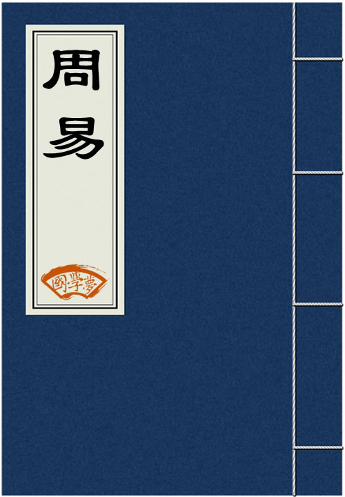

<!DOCTYPE html PUBLIC "-//W3C//DTD XHTML 1.0 Transitional//EN" "http://www.w3.org/TR/xhtml1/DTD/xhtml1-transitional.dtd">

<html xmlns="http://www.w3.org/1999/xhtml">
<head>
<meta content="text/html; charset=utf-8" http-equiv="Content-Type"/>
<title>周易全文原文-译文-易经全文-国学�?/title>
<meta content="周易全文原文" name="keywords"/>
<meta content="周易全文原文,《周易》即《易经》，《三易》之一（汉初刘向校书时《三易》仍存，汉后下落不明），是传统经典之一，相传系周文王姬昌所作，内容包括《经》和《传》两个部分。《经》主要是六十四卦和三百八十四爻，卦和爻各有说明（卦辞、爻辞），作为占卜之用。《周易》没有提出阴阳与太极等概念，讲阴阳与太极的是被道家与阴阳家所影响的《易传》�? name="description"/>
<link href="css.css" media="screen" rel="stylesheet" type="text/css"/>
</head>
<body>
<div class="gxlayout">
</div>
<div class="gxlayout">
<div class="ihead">
<ul class="more fl">
<li>当前位置:<a>国学�?/a> &gt; <a>国学经典</a> &gt; <a>周易</a> &gt;</li>
</ul>
</div>
<div class="gxbl fl">
<div class="rinfo ft14"><h1>周易</h1>《周易》即《易经》，《三易》之一（汉初刘向校书时《三易》仍存，汉后下落不明），是传统经典之一，相传系周文王姬昌所作，内容包括《经》和《传》两个部分。《经》主要是六十四卦和三百八十四爻，卦和爻各有说明（卦辞、爻辞），作为占卜之用。《周易》没有提出阴阳与太极等概念，讲阴阳与太极的是被道家与阴阳家所影响的《易传》�?/div>
<div class="mta10 clearfix"></div>
<div class="gxllist3 fl"><ul>
<ul>
<li><strong><a>周易</a></strong></li>
<li><a>八字命理</a></li>
<li><a>周易起名</a></li>
<li><a>五行缺什�?/a></li>
<li><a>八字算命</a></li>
<li><a>五行算姻�?/a></li>
</ul>
</ul>
</div>
<div class="gxllist4 fl"></div>
<div class="gxllist4 fl">
<ul>
<li><a href="01_乾卦.html" target="_blank" title="周易第一卦：乾卦 乾为�?乾上乾下">周易第一卦：乾卦 乾为�?乾上乾下</a></li><li><a href="02_坤卦.html" target="_blank" title="周易第二卦：坤卦 坤为�?坤上坤下">周易第二卦：坤卦 坤为�?坤上坤下</a></li><li><a href="03_屯卦.html" target="_blank" title="周易第三卦：屯卦 水雷�?坎上震下">周易第三卦：屯卦 水雷�?坎上震下</a></li><li><a href="04_蒙卦.html" target="_blank" title="周易第四卦：蒙卦 山水�?艮上坎下">周易第四卦：蒙卦 山水�?艮上坎下</a></li><li><a href="05_需�?html" target="_blank" title="周易第五卦：需�?水天需 坎上乾下">周易第五卦：需�?水天需 坎上乾下</a></li><li><a href="06_讼卦.html" target="_blank" title="周易第六卦：讼卦 天水�?乾上坎下">周易第六卦：讼卦 天水�?乾上坎下</a></li><li><a href="07_师卦.html" target="_blank" title="周易第七卦：师卦 地水�?坤上坎下">周易第七卦：师卦 地水�?坤上坎下</a></li><li><a href="08_比卦.html" target="_blank" title="周易第八卦：比卦 水地�?坎上坤下">周易第八卦：比卦 水地�?坎上坤下</a></li><li><a href="09_小畜�?html" target="_blank" title="周易第九卦：小畜�?风天小畜 巽上乾下">周易第九卦：小畜�?风天小畜 巽上乾下</a></li><li><a href="10_履卦.html" target="_blank" title="周易第十卦：履卦 天泽�?乾上兑下">周易第十卦：履卦 天泽�?乾上兑下</a></li><li><a href="11_泰卦.html" target="_blank" title="周易第十一卦：泰卦�?地天�?坤上乾下">周易第十一卦：泰卦�?地天�?坤上乾下</a></li><li><a href="12_否卦.html" target="_blank" title="周易第十二卦：否�?天地�?乾上坤下">周易第十二卦：否�?天地�?乾上坤下</a></li><li><a href="13_同人�?html" target="_blank" title="周易第十三卦：同人卦 天火同人 乾上离下">周易第十三卦：同人卦 天火同人 乾上离下</a></li><li><a href="14_大有�?html" target="_blank" title="周易第十四卦：大有卦 火天大有 离上乾下">周易第十四卦：大有卦 火天大有 离上乾下</a></li><li><a href="15_谦卦.html" target="_blank" title="周易第十五卦：谦�?地山�?坤上艮下">周易第十五卦：谦�?地山�?坤上艮下</a></li><li><a href="16_豫卦.html" target="_blank" title="周易第十六卦：豫�?雷地�?震上坤下">周易第十六卦：豫�?雷地�?震上坤下</a></li><li><a href="17_随卦.html" target="_blank" title="周易第十七卦：随�?泽雷�?兑上震下">周易第十七卦：随�?泽雷�?兑上震下</a></li><li><a href="18_蛊卦.html" target="_blank" title="周易第十八卦：蛊�?山风�?艮上巽下">周易第十八卦：蛊�?山风�?艮上巽下</a></li><li><a href="19_临卦.html" target="_blank" title="周易第十九卦：临�?地泽�?坤上兑下">周易第十九卦：临�?地泽�?坤上兑下</a></li><li><a href="20_观卦.html" target="_blank" title="周易第二十卦：观�?风地�?巽上坤下">周易第二十卦：观�?风地�?巽上坤下</a></li><li><a href="21_噬嗑�?html" target="_blank" title="周易第二十一卦：噬嗑�?火雷噬嗑 离上震下">周易第二十一卦：噬嗑�?火雷噬嗑 离上震下</a></li><li><a href="22_贲卦.html" target="_blank" title="周易第二十二卦：贲卦 山火�?艮上离下">周易第二十二卦：贲卦 山火�?艮上离下</a></li><li><a href="23_剥卦.html" target="_blank" title="周易第二十三卦：剥卦 山地�?艮上坤下">周易第二十三卦：剥卦 山地�?艮上坤下</a></li><li><a href="24_复卦.html" target="_blank" title="周易第二十四卦：复卦 地雷�?坤上震下">周易第二十四卦：复卦 地雷�?坤上震下</a></li><li><a href="25_无妄�?html" target="_blank" title="周易第二十五卦：无妄�?天雷无妄 乾上震下">周易第二十五卦：无妄�?天雷无妄 乾上震下</a></li><li><a href="26_大畜�?html" target="_blank" title="周易第二十六卦：大畜�?山天大畜 艮上乾下">周易第二十六卦：大畜�?山天大畜 艮上乾下</a></li><li><a href="27_颐卦.html" target="_blank" title="周易第二十七卦：颐卦 山雷�?艮上震下">周易第二十七卦：颐卦 山雷�?艮上震下</a></li><li><a href="28_大过�?html" target="_blank" title="周易第二十八卦：大过�?泽风大过 兑上巽下">周易第二十八卦：大过�?泽风大过 兑上巽下</a></li><li><a href="29_坎卦.html" target="_blank" title="周易第二十九卦：坎卦 坎为�?坎上坎下">周易第二十九卦：坎卦 坎为�?坎上坎下</a></li><li><a href="30_离卦.html" target="_blank" title="周易第三十卦：离�?离为�?离上离下">周易第三十卦：离�?离为�?离上离下</a></li><li><a href="31_咸卦.html" target="_blank" title="周易第三十一卦：咸卦 泽山�?兑上艮下">周易第三十一卦：咸卦 泽山�?兑上艮下</a></li><li><a href="32_恒卦.html" target="_blank" title="周易第三十二卦：恒卦 雷风�?震上巽下">周易第三十二卦：恒卦 雷风�?震上巽下</a></li><li><a href="33_遁卦.html" target="_blank" title="周易第三十三卦：遁卦 天山�?乾上艮下">周易第三十三卦：遁卦 天山�?乾上艮下</a></li><li><a href="34_大壮�?html" target="_blank" title="周易第三十四卦：大壮�?雷天大壮 震上乾下">周易第三十四卦：大壮�?雷天大壮 震上乾下</a></li><li><a href="35_晋卦.html" target="_blank" title="周易第三十五卦：晋卦 火地�?离上坤下">周易第三十五卦：晋卦 火地�?离上坤下</a></li><li><a href="36_明夷�?html" target="_blank" title="周易第三十六卦：明夷�?地火明夷 坤上离下">周易第三十六卦：明夷�?地火明夷 坤上离下</a></li><li><a href="37_家人�?html" target="_blank" title="周易第三十七卦：家人�?风火家人 巽上离下">周易第三十七卦：家人�?风火家人 巽上离下</a></li><li><a href="38_睽卦.html" target="_blank" title="周易第三十八卦：睽卦 火泽�?离上兑下">周易第三十八卦：睽卦 火泽�?离上兑下</a></li><li><a href="39_蹇卦.html" target="_blank" title="周易第三十九卦：蹇卦 水山�?坎上艮下">周易第三十九卦：蹇卦 水山�?坎上艮下</a></li><li><a href="40_解卦.html" target="_blank" title="周易第四十卦：解�?雷水�?震上坎下">周易第四十卦：解�?雷水�?震上坎下</a></li><li><a href="41_损卦.html" target="_blank" title="周易第四十一卦：损卦 山泽�?艮上兑下">周易第四十一卦：损卦 山泽�?艮上兑下</a></li><li><a href="42_益卦.html" target="_blank" title="周易第四十二卦：益卦 风雷�?巽上震下">周易第四十二卦：益卦 风雷�?巽上震下</a></li><li><a href="43_夬卦.html" target="_blank" title="周易第四十三卦：夬卦 泽天�?兑上乾下">周易第四十三卦：夬卦  泽天�?兑上乾下</a></li><li><a href="44_姤卦.html" target="_blank" title="周易第四十四卦：姤卦 天风�?乾上巽下">周易第四十四卦：姤卦 天风�?乾上巽下</a></li><li><a href="45_萃卦.html" target="_blank" title="周易第四十五卦：萃卦 泽地�?兑上坤下">周易第四十五卦：萃卦 泽地�?兑上坤下</a></li><li><a href="46_升卦.html" target="_blank" title="周易第四十六卦：升卦 地风�?坤上巽下">周易第四十六卦：升卦 地风�?坤上巽下</a></li><li><a href="47_困卦.html" target="_blank" title="周易第四十七卦：困卦 泽水�?兑上坎下">周易第四十七卦：困卦 泽水�?兑上坎下</a></li><li><a href="48_井卦.html" target="_blank" title="周易第四十八卦：井卦 水风�?坎上巽下">周易第四十八卦：井卦 水风�?坎上巽下</a></li><li><a href="49_革卦.html" target="_blank" title="周易第四十九卦：革卦 泽火�?兑上离下">周易第四十九卦：革卦 泽火�?兑上离下</a></li><li><a href="50_鼎卦.html" target="_blank" title="周易第五十卦：鼎�?火风�?离上巽下">周易第五十卦：鼎�?火风�?离上巽下</a></li><li><a href="51_震卦.html" target="_blank" title="周易第五十一卦：震卦 震为�?震上震下">周易第五十一卦：震卦 震为�?震上震下</a></li><li><a href="52_艮卦.html" target="_blank" title="周易第五十二卦：艮卦 艮为�?艮上艮下">周易第五十二卦：艮卦 艮为�?艮上艮下</a></li><li><a href="53_渐卦.html" target="_blank" title="周易第五十三卦：渐卦 风山�?巽上艮下">周易第五十三卦：渐卦 风山�?巽上艮下</a></li><li><a href="54_归妹�?html" target="_blank" title="周易第五十四卦：归妹�?雷泽归妹 震上兑下">周易第五十四卦：归妹�?雷泽归妹 震上兑下</a></li><li><a href="55_丰卦.html" target="_blank" title="周易第五十五卦：丰卦 雷火 震上离下">周易第五十五卦：丰卦 雷火 震上离下</a></li><li><a href="56_旅卦.html" target="_blank" title="周易第五十六卦：旅卦 火山�?离上艮下">周易第五十六卦：旅卦 火山�?离上艮下</a></li><li><a href="57_巽卦.html" target="_blank" title="周易第五十七卦：巽卦 巽为�?巽上巽下">周易第五十七卦：巽卦 巽为�?巽上巽下</a></li><li><a href="58_兑卦.html" target="_blank" title="周易第五十八卦：兑卦 兑为�?兑上兑下">周易第五十八卦：兑卦 兑为�?兑上兑下</a></li><li><a href="59_涣卦.html" target="_blank" title="周易第五十九卦：涣卦 风水�?巽上坎下">周易第五十九卦：涣卦 风水�?巽上坎下</a></li><li><a href="60_节卦.html" target="_blank" title="周易第六十卦：节�?水泽�?坎上兑下">周易第六十卦：节�?水泽�?坎上兑下</a></li><li><a href="61_中孚�?html" target="_blank" title="周易第六十一卦：中孚�?风泽中孚 巽上兑下">周易第六十一卦：中孚�?风泽中孚 巽上兑下</a></li><li><a href="62_小过�?html" target="_blank" title="周易第六十二卦：小过�?雷山小过 震上艮下">周易第六十二卦：小过�?雷山小过 震上艮下</a></li><li><a href="63_既济�?html" target="_blank" title="周易第六十三卦：既济�?水火既济 坎上离下">周易第六十三卦：既济�?水火既济 坎上离下</a></li><li><a href="64_未济�?html" target="_blank" title="周易第六十四卦：未济�?火水未济 离上坎下">周易第六十四卦：未济�?火水未济 离上坎下</a></li><li><a target="_blank" title="周易第一卦乾卦详�?元，亨，利，贞�?>周易第一卦乾卦详�?元，亨，利，贞�?/a></li><li><a target="_blank" title="周易第一卦乾卦初九爻详解 潜龙勿用">周易第一卦乾卦初九爻详解 潜龙勿用</a></li><li><a target="_blank" title="周易第一卦乾卦九二爻详解 见龙在田，利见大�?>周易第一卦乾卦九二爻详解 见龙在田，利见大�?/a></li><li><a target="_blank" title="周易第一卦乾卦九三爻详解 君子终日乾乾，夕惕若;厉，无咎�?>周易第一卦乾卦九三爻详解 君子终日乾乾，夕惕若;厉，无咎�?/a></li><li><a target="_blank" title="周易第一卦乾卦九四爻详解 或跃在渊，无咎�?>周易第一卦乾卦九四爻详解 或跃在渊，无咎�?/a></li><li><a target="_blank" title="周易第一卦乾卦九五爻详解 飞龙在天，利见大人�?>周易第一卦乾卦九五爻详解 飞龙在天，利见大人�?/a></li><li><a target="_blank" title="周易第一卦乾卦上九爻详解 亢龙有悔">周易第一卦乾卦上九爻详解 亢龙有悔</a></li><li><a target="_blank" title="周易第二卦坤卦详�?元，亨，利牝马之贞。君子有攸往，先迷后得主。利西南">周易第二卦坤卦详�?元，亨，利牝马之贞。君子有攸往，先迷后得主。利西南</a></li><li><a target="_blank" title="周易第二卦坤卦初六爻详解 履霜，坚冰至�?>周易第二卦坤卦初六爻详解 履霜，坚冰至�?/a></li><li><a target="_blank" title="周易第二卦坤卦六二爻详解 直，方，大，不习无不利�?>周易第二卦坤卦六二爻详解 直，方，大，不习无不利�?/a></li><li><a target="_blank" title="周易第二卦坤卦六三爻详解 含章可贞。或从王事，无成有终�?>周易第二卦坤卦六三爻详解 含章可贞。或从王事，无成有终�?/a></li><li><a target="_blank" title="周易第二卦坤卦六四爻详解 括囊，无咎，无誉�?>周易第二卦坤卦六四爻详解 括囊，无咎，无誉�?/a></li><li><a target="_blank" title="周易第二卦坤卦六五爻详解 黄裳，元吉�?>周易第二卦坤卦六五爻详解 黄裳，元吉�?/a></li><li><a target="_blank" title="周易第二卦坤卦上六爻详解 龙战于野，其血玄黄�?>周易第二卦坤卦上六爻详解 龙战于野，其血玄黄�?/a></li><li><a target="_blank" title="周易第三卦屯卦详�?元，亨，利，贞。勿用，有攸往，利建侯�?>周易第三卦屯卦详�?元，亨，利，贞。勿用，有攸往，利建侯�?/a></li><li><a target="_blank" title="周易第三卦屯卦初九爻详解 盘桓，利居贞，利建侯�?>周易第三卦屯卦初九爻详解 盘桓，利居贞，利建侯�?/a></li><li><a target="_blank" title="周易第三卦屯卦六二爻详解 屯如邅如，乘马班如。匪寇婚媾，女子贞不字，�?>周易第三卦屯卦六二爻详解 屯如邅如，乘马班如。匪寇婚媾，女子贞不字，�?/a></li><li><a target="_blank" title="周易第三卦屯卦六三爻详解 即鹿无虞，惟入于林中。君子几不如舍。往吝�?>周易第三卦屯卦六三爻详解 即鹿无虞，惟入于林中。君子几不如舍。往吝�?/a></li><li><a target="_blank" title="周易第三卦屯卦六四爻详解 乘马班如，求婚媾，往吉，无不利�?>周易第三卦屯卦六四爻详解 乘马班如，求婚媾，往吉，无不利�?/a></li><li><a target="_blank" title="周易第三卦屯卦九五爻详解 屯其膏，小贞吉，大贞凶�?>周易第三卦屯卦九五爻详解 屯其膏，小贞吉，大贞凶�?/a></li><li><a target="_blank" title="周易第三卦屯卦上六爻详解 乘马班如，泣血涟如�?>周易第三卦屯卦上六爻详解 乘马班如，泣血涟如�?/a></li><li><a target="_blank" title="周易第四卦蒙卦详�?亨。匪我求童蒙，童蒙求我。初筮告，再三渎，渎则不�?>周易第四卦蒙卦详�?亨。匪我求童蒙，童蒙求我。初筮告，再三渎，渎则不�?/a></li><li><a target="_blank" title="周易第四卦蒙卦初六爻详解 发蒙，利用刑人，用说桎梏。以往，吝�?>周易第四卦蒙卦初六爻详解 发蒙，利用刑人，用说桎梏。以往，吝�?/a></li><li><a target="_blank" title="周易第四卦蒙卦九二爻详解 包蒙吉。纳妇吉。子克家�?>周易第四卦蒙卦九二爻详解 包蒙吉。纳妇吉。子克家�?/a></li><li><a target="_blank" title="周易第四卦蒙卦六三爻详解 勿用娶女，见金夫，不有躬。无攸利�?>周易第四卦蒙卦六三爻详解 勿用娶女，见金夫，不有躬。无攸利�?/a></li><li><a target="_blank" title="周易第四卦蒙卦六四爻详解 困蒙，吝�?>周易第四卦蒙卦六四爻详解 困蒙，吝�?/a></li><li><a target="_blank" title="周易第四卦蒙卦六五爻详解 童蒙，吉�?>周易第四卦蒙卦六五爻详解 童蒙，吉�?/a></li><li><a target="_blank" title="周易第四卦蒙卦上九爻详解 击蒙。不利为寇，利御寇�?>周易第四卦蒙卦上九爻详解 击蒙。不利为寇，利御寇�?/a></li><li><a target="_blank" title="周易第五卦需卦详�?需。有孚，光亨，贞吉。利涉大川�?>周易第五卦需卦详�?需。有孚，光亨，贞吉。利涉大川�?/a></li><li><a target="_blank" title="周易第五卦需卦初九爻详解 需于郊，利用恒，无咎�?>周易第五卦需卦初九爻详解 需于郊，利用恒，无咎�?/a></li><li><a target="_blank" title="周易第五卦需卦九二爻详解 需于沙，小有言，终吉�?>周易第五卦需卦九二爻详解 需于沙，小有言，终吉�?/a></li><li><a target="_blank" title="周易第五卦需卦九三爻详解 需于泥，致寇至�?>周易第五卦需卦九三爻详解 需于泥，致寇至�?/a></li><li><a target="_blank" title="周易第五卦需卦六四爻详解 需于血，出自穴�?>周易第五卦需卦六四爻详解 需于血，出自穴�?/a></li><li><a target="_blank" title="周易第五卦需卦九五爻详解 需于酒食，贞吉�?>周易第五卦需卦九五爻详解 需于酒食，贞吉�?/a></li><li><a target="_blank" title="周易第五卦需卦上六爻详解 入于穴，有不速之客三人来，敬之终吉�?>周易第五卦需卦上六爻详解 入于穴，有不速之客三人来，敬之终吉�?/a></li><li><a target="_blank" title="周易第六卦讼卦详�?有孚，窒惕，中吉，终凶。利见大人，不利涉大川�?>周易第六卦讼卦详�?有孚，窒惕，中吉，终凶。利见大人，不利涉大川�?/a></li><li><a target="_blank" title="周易第六卦讼卦初六爻详解 不永所事，小有言，终吉�?>周易第六卦讼卦初六爻详解 不永所事，小有言，终吉�?/a></li><li><a target="_blank" title="周易第六卦讼卦九二爻详解 不克讼，归而逋，其邑人三百户无眚�?>周易第六卦讼卦九二爻详解 不克讼，归而逋，其邑人三百户无眚�?/a></li><li><a target="_blank" title="周易第六卦讼卦六三爻详解 食旧德，贞厉，终吉。或从王事，无成�?>周易第六卦讼卦六三爻详解 食旧德，贞厉，终吉。或从王事，无成�?/a></li><li><a target="_blank" title="周易第六卦讼卦九四爻详解 不克讼，复即命，渝安贞，吉�?>周易第六卦讼卦九四爻详解 不克讼，复即命，渝安贞，吉�?/a></li><li><a target="_blank" title="周易第六卦讼卦九五爻详解 讼，元吉�?>周易第六卦讼卦九五爻详解 讼，元吉�?/a></li><li><a target="_blank" title="周易第六卦讼卦上九爻详解 或锡之鞶带，终朝三褫之�?>周易第六卦讼卦上九爻详解 或锡之鞶带，终朝三褫之�?/a></li><li><a target="_blank" title="周易第七卦师卦详�?贞，丈人吉，无咎�?>周易第七卦师卦详�?贞，丈人吉，无咎�?/a></li><li><a target="_blank" title="周易第七卦师卦初六爻详解 师出以律，否臧凶�?>周易第七卦师卦初六爻详解 师出以律，否臧凶�?/a></li><li><a target="_blank" title="周易第七卦师卦九二爻详解 在师中，吉无咎，王三锡命�?>周易第七卦师卦九二爻详解 在师中，吉无咎，王三锡命�?/a></li><li><a target="_blank" title="周易第七卦师卦六三爻详解 师或舆尸，凶�?>周易第七卦师卦六三爻详解 师或舆尸，凶�?/a></li><li><a target="_blank" title="周易第七卦师卦六四爻详解 师左次，无咎">周易第七卦师卦六四爻详解 师左次，无咎</a></li><li><a target="_blank" title="周易第七卦师卦六五爻详解 田有禽，利执言，无咎。长子帅师，弟子舆尸，贞">周易第七卦师卦六五爻详解 田有禽，利执言，无咎。长子帅师，弟子舆尸，贞</a></li><li><a target="_blank" title="周易第七卦师卦上六爻详解 大君有命，开国承家，小人勿用�?>周易第七卦师卦上六爻详解 大君有命，开国承家，小人勿用�?/a></li><li><a target="_blank" title="周易第八卦比卦详�?吉。原筮，元永贞，无咎。不宁方来，后夫凶�?>周易第八卦比卦详�?吉。原筮，元永贞，无咎。不宁方来，后夫凶�?/a></li><li><a target="_blank" title="周易第八卦比卦初六爻详解 有孚比之，无咎。有孚盈缶，终来有它吉�?>周易第八卦比卦初六爻详解 有孚比之，无咎。有孚盈缶，终来有它吉�?/a></li><li><a target="_blank" title="周易第八卦比卦六二爻详解 比之自内，贞吉�?>周易第八卦比卦六二爻详解 比之自内，贞吉�?/a></li><li><a target="_blank" title="周易第八卦比卦六三爻详解 比之匪人">周易第八卦比卦六三爻详解 比之匪人</a></li><li><a target="_blank" title="周易第八卦比卦六四爻详解 外比之，贞吉�?>周易第八卦比卦六四爻详解 外比之，贞吉�?/a></li><li><a target="_blank" title="周易第八卦比卦九五爻详解 显比，王用三驱，失前禽。邑人不诫，吉�?>周易第八卦比卦九五爻详解 显比，王用三驱，失前禽。邑人不诫，吉�?/a></li><li><a target="_blank" title="周易第八卦比卦上六爻详解 比之无首，凶�?>周易第八卦比卦上六爻详解 比之无首，凶�?/a></li><li><a target="_blank" title="周易第九卦小畜卦详解 亨。密云不雨，自我西郊�?>周易第九卦小畜卦详解 亨。密云不雨，自我西郊�?/a></li><li><a target="_blank" title="周易第九卦小畜卦初九爻详�?复自道，何其�?吉�?>周易第九卦小畜卦初九爻详�?复自道，何其�?吉�?/a></li><li><a target="_blank" title="周易第九卦小畜卦九二爻详�?牵复，吉�?>周易第九卦小畜卦九二爻详�?牵复，吉�?/a></li><li><a target="_blank" title="周易第九卦小畜卦九三爻详�?舆说辐，夫妻反目�?>周易第九卦小畜卦九三爻详�?舆说辐，夫妻反目�?/a></li><li><a target="_blank" title="周易第九卦小畜卦六四爻详�?有孚，血去惕出，无咎�?>周易第九卦小畜卦六四爻详�?有孚，血去惕出，无咎�?/a></li><li><a target="_blank" title="周易第九卦小畜卦九五爻详�?有孚挛如，富以其邻�?>周易第九卦小畜卦九五爻详�?有孚挛如，富以其邻�?/a></li><li><a target="_blank" title="周易第九卦小畜卦上九爻详�?既雨既处，尚德载。妇贞厉。月几望，君子征�?>周易第九卦小畜卦上九爻详�?既雨既处，尚德载。妇贞厉。月几望，君子征�?/a></li><li><a target="_blank" title="周易第十卦履卦详�?履虎尾，不咥人，亨�?>周易第十卦履卦详�?履虎尾，不咥人，亨�?/a></li><li><a target="_blank" title="周易第十卦履卦初九爻详解 素履，往无咎�?>周易第十卦履卦初九爻详解 素履，往无咎�?/a></li><li><a target="_blank" title="周易第十卦履卦九二爻详解 履道坦坦，幽人贞吉�?>周易第十卦履卦九二爻详解 履道坦坦，幽人贞吉�?/a></li><li><a target="_blank" title="周易第十卦履卦六三爻详解 眇能视，跛能履。履虎尾，咥人，凶。武人为于大">周易第十卦履卦六三爻详解 眇能视，跛能履。履虎尾，咥人，凶。武人为于大</a></li><li><a target="_blank" title="周易第十卦履卦九四爻详解 履虎尾，愬愬，终吉�?>周易第十卦履卦九四爻详解 履虎尾，愬愬，终吉�?/a></li><li><a target="_blank" title="周易第十卦履卦九五爻详解 夬履，贞厉�?>周易第十卦履卦九五爻详解 夬履，贞厉�?/a></li><li><a target="_blank" title="周易第十卦履卦上九爻详解 视履考祥，其旋元吉�?>周易第十卦履卦上九爻详解 视履考祥，其旋元吉�?/a></li><li><a target="_blank" title="周易第十一卦泰卦详�?小往大来，吉亨�?>周易第十一卦泰卦详�?小往大来，吉亨�?/a></li><li><a target="_blank" title="周易第十一卦泰卦初九爻详解 拔茅茹，以其汇，征吉�?>周易第十一卦泰卦初九爻详解 拔茅茹，以其汇，征吉�?/a></li><li><a target="_blank" title="周易第十一卦泰卦九二爻详解 包荒，用冯河，不遐遗，朋亡，得尚于中行�?>周易第十一卦泰卦九二爻详解 包荒，用冯河，不遐遗，朋亡，得尚于中行�?/a></li><li><a target="_blank" title="周易第十一卦泰卦九三爻详解 无平不陂，无往不复。艰贞无咎。勿恤其孚，�?>周易第十一卦泰卦九三爻详解 无平不陂，无往不复。艰贞无咎。勿恤其孚，�?/a></li><li><a target="_blank" title="周易第十一卦泰卦六四爻详解 翩翩不富，以其邻，不戒以孚�?>周易第十一卦泰卦六四爻详解 翩翩不富，以其邻，不戒以孚�?/a></li><li><a target="_blank" title="周易第十一卦泰卦六五爻详解 帝乙归妹，以祉元吉�?>周易第十一卦泰卦六五爻详解 帝乙归妹，以祉元吉�?/a></li><li><a target="_blank" title="周易第十一卦泰卦上六爻详解 城复于隍，勿用师。自邑告命，贞吝�?>周易第十一卦泰卦上六爻详解 城复于隍，勿用师。自邑告命，贞吝�?/a></li><li><a target="_blank" title="周易第十二卦否卦详解 否之匪人。不利君子贞。大往小来�?>周易第十二卦否卦详解 否之匪人。不利君子贞。大往小来�?/a></li><li><a target="_blank" title="周易第十二卦否卦初六爻详�?拔茅茹，以其汇，贞吉，亨�?>周易第十二卦否卦初六爻详�?拔茅茹，以其汇，贞吉，亨�?/a></li><li><a target="_blank" title="周易第十二卦否卦六二爻详�?包承，小人吉；大人否，亨�?>周易第十二卦否卦六二爻详�?包承，小人吉；大人否，亨�?/a></li><li><a target="_blank" title="周易第十二卦否卦六三爻详�?包羞�?>周易第十二卦否卦六三爻详�?包羞�?/a></li><li><a target="_blank" title="周易第十二卦否卦九四爻详�?有命无咎，畴离祉�?>周易第十二卦否卦九四爻详�?有命无咎，畴离祉�?/a></li><li><a target="_blank" title="周易第十二卦否卦九五爻详�?休否，大人吉；其亡其亡，系于苞桑�?>周易第十二卦否卦九五爻详�?休否，大人吉；其亡其亡，系于苞桑�?/a></li><li><a target="_blank" title="周易第十二卦否卦上九爻详�?倾否，先否后喜�?>周易第十二卦否卦上九爻详�?倾否，先否后喜�?/a></li><li><a target="_blank" title="周易第十三卦同人卦详�?同人于野，亨。利涉大川，利君子贞�?>周易第十三卦同人卦详�?同人于野，亨。利涉大川，利君子贞�?/a></li><li><a target="_blank" title="周易第十三卦同人卦初九爻详解 同人于门，无咎�?>周易第十三卦同人卦初九爻详解 同人于门，无咎�?/a></li><li><a target="_blank" title="周易第十三卦同人卦六二爻详解 同人于宗，吝�?>周易第十三卦同人卦六二爻详解 同人于宗，吝�?/a></li><li><a target="_blank" title="周易第十三卦同人卦九三爻详解 伏戎于莽，升其高陵，三岁不兴�?>周易第十三卦同人卦九三爻详解 伏戎于莽，升其高陵，三岁不兴�?/a></li><li><a target="_blank" title="周易第十三卦同人卦九四爻详解 乘其墉，弗克攻，吉�?>周易第十三卦同人卦九四爻详解 乘其墉，弗克攻，吉�?/a></li><li><a target="_blank" title="周易第十三卦同人卦九五爻详解 同人，先号啕而后笑，大师克相遇�?>周易第十三卦同人卦九五爻详解 同人，先号啕而后笑，大师克相遇�?/a></li><li><a target="_blank" title="周易第十三卦同人卦上九爻详解 同人于郊，无悔�?>周易第十三卦同人卦上九爻详解 同人于郊，无悔�?/a></li><li><a target="_blank" title="周易第十四卦大有卦详�?元亨">周易第十四卦大有卦详�?元亨</a></li><li><a target="_blank" title="周易第十四卦大有卦初九爻详解 无交害，匪咎；艰则无咎�?>周易第十四卦大有卦初九爻详解 无交害，匪咎；艰则无咎�?/a></li><li><a target="_blank" title="周易第十四卦大有卦九二爻详解 大车以载，有攸往，无咎�?>周易第十四卦大有卦九二爻详解 大车以载，有攸往，无咎�?/a></li><li><a target="_blank" title="周易第十四卦大有卦九三爻详解 公用亨于天子，小人弗克�?>周易第十四卦大有卦九三爻详解 公用亨于天子，小人弗克�?/a></li><li><a target="_blank" title="周易第十四卦大有卦九四爻详解 匪其彭，无咎�?>周易第十四卦大有卦九四爻详解 匪其彭，无咎�?/a></li><li><a target="_blank" title="周易第十四卦大有卦六五爻详解 厥孚交如，威如，吉�?>周易第十四卦大有卦六五爻详解 厥孚交如，威如，吉�?/a></li><li><a target="_blank" title="周易第十四卦大有卦上九爻详解 自天祐之，吉无不利�?>周易第十四卦大有卦上九爻详解 自天祐之，吉无不利�?/a></li><li><a target="_blank" title="周易第十五卦谦卦详解 亨，君子有终�?>周易第十五卦谦卦详解 亨，君子有终�?/a></li><li><a target="_blank" title="周易第十五卦谦卦初六爻详�?谦谦君子，用涉大川，吉�?>周易第十五卦谦卦初六爻详�?谦谦君子，用涉大川，吉�?/a></li><li><a target="_blank" title="周易第十五卦谦卦六二爻详�?鸣谦，贞吉�?>周易第十五卦谦卦六二爻详�?鸣谦，贞吉�?/a></li><li><a target="_blank" title="周易第十五卦谦卦九三爻详�?劳谦君子，有终吉�?>周易第十五卦谦卦九三爻详�?劳谦君子，有终吉�?/a></li><li><a target="_blank" title="周易第十五卦谦卦六四爻详�?无不利，撝谦�?>周易第十五卦谦卦六四爻详�?无不利，撝谦�?/a></li><li><a target="_blank" title="周易第十五卦谦卦六五爻详�?不富以其邻，利用侵伐，无不利�?>周易第十五卦谦卦六五爻详�?不富以其邻，利用侵伐，无不利�?/a></li><li><a target="_blank" title="周易第十五卦谦卦上六爻详�?鸣谦，利用行师，征邑国�?>周易第十五卦谦卦上六爻详�?鸣谦，利用行师，征邑国�?/a></li><li><a target="_blank" title="周易第十六卦豫卦详解 利建侯行�?>周易第十六卦豫卦详解 利建侯行�?/a></li><li><a target="_blank" title="周易第十六卦豫卦初六爻详�?鸣豫，凶�?>周易第十六卦豫卦初六爻详�?鸣豫，凶�?/a></li><li><a target="_blank" title="周易第十六卦豫卦六二爻详�?介于石，不终日，贞吉�?>周易第十六卦豫卦六二爻详�?介于石，不终日，贞吉�?/a></li><li><a target="_blank" title="周易第十六卦豫卦六三爻详�?盱豫，悔�?迟有悔�?>周易第十六卦豫卦六三爻详�?盱豫，悔�?迟有悔�?/a></li><li><a target="_blank" title="周易第十六卦豫卦九四爻详�?由豫，大有得，勿疑，朋盍簪�?>周易第十六卦豫卦九四爻详�?由豫，大有得，勿疑，朋盍簪�?/a></li><li><a target="_blank" title="周易第十六卦豫卦六五爻详�?贞疾，恒不死�?>周易第十六卦豫卦六五爻详�?贞疾，恒不死�?/a></li><li><a target="_blank" title="周易第十六卦豫卦上六爻详�?冥豫，成有渝，无咎�?>周易第十六卦豫卦上六爻详�?冥豫，成有渝，无咎�?/a></li><li><a target="_blank" title="周易第十七卦随卦详解 元亨，利贞，无咎�?>周易第十七卦随卦详解 元亨，利贞，无咎�?/a></li><li><a target="_blank" title="周易第十七卦随卦初九爻详�?官有渝，贞吉�?出门交有功�?>周易第十七卦随卦初九爻详�?官有渝，贞吉�?出门交有功�?/a></li><li><a target="_blank" title="周易第十七卦随卦六二爻详�?系小子，失丈夫�?>周易第十七卦随卦六二爻详�?系小子，失丈夫�?/a></li><li><a target="_blank" title="周易第十七卦随卦六三爻详�?系丈夫，失小子。随有求得，利居贞�?>周易第十七卦随卦六三爻详�?系丈夫，失小子。随有求得，利居贞�?/a></li><li><a target="_blank" title="周易第十七卦随卦九四爻详�?随有获，贞凶。有孚在道，以明，何咎�?>周易第十七卦随卦九四爻详�?随有获，贞凶。有孚在道，以明，何咎�?/a></li><li><a target="_blank" title="周易第十七卦随卦九五爻详�?孚于嘉，吉�?>周易第十七卦随卦九五爻详�?孚于嘉，吉�?/a></li><li><a target="_blank" title="周易第十七卦随卦上六爻详�?拘系之，乃从维之。王用亨于西山�?>周易第十七卦随卦上六爻详�?拘系之，乃从维之。王用亨于西山�?/a></li><li><a target="_blank" title="周易第十八卦蛊卦详解 元亨，利涉大川。先甲三日，后甲三日�?>周易第十八卦蛊卦详解 元亨，利涉大川。先甲三日，后甲三日�?/a></li><li><a target="_blank" title="周易第十八卦蛊卦初六爻详�?干父之蛊，有子，考无咎。厉，终吉�?>周易第十八卦蛊卦初六爻详�?干父之蛊，有子，考无咎。厉，终吉�?/a></li><li><a target="_blank" title="周易第十八卦蛊卦九二爻详�?干母之蛊，不可贞�?>周易第十八卦蛊卦九二爻详�?干母之蛊，不可贞�?/a></li><li><a target="_blank" title="周易第十八卦蛊卦九三爻详�?干父之蛊，小有悔，无大咎�?>周易第十八卦蛊卦九三爻详�?干父之蛊，小有悔，无大咎�?/a></li><li><a target="_blank" title="周易第十八卦蛊卦六四爻详�?裕父之蛊，往见吝�?>周易第十八卦蛊卦六四爻详�?裕父之蛊，往见吝�?/a></li><li><a target="_blank" title="周易第十八卦蛊卦六五爻详�?干父之蛊，用誉�?>周易第十八卦蛊卦六五爻详�?干父之蛊，用誉�?/a></li><li><a target="_blank" title="周易第十八卦蛊卦上九爻详�?不事王侯，高尚其事�?>周易第十八卦蛊卦上九爻详�?不事王侯，高尚其事�?/a></li><li><a target="_blank" title="周易第十九卦临卦详解 元，亨，利，贞。至于八月有凶�?>周易第十九卦临卦详解 元，亨，利，贞。至于八月有凶�?/a></li><li><a target="_blank" title="周易第十九卦临卦初九爻详�?咸临，贞吉�?>周易第十九卦临卦初九爻详�?咸临，贞吉�?/a></li><li><a target="_blank" title="周易第十九卦临卦九二爻详�?咸临，吉，无不利�?>周易第十九卦临卦九二爻详�?咸临，吉，无不利�?/a></li><li><a target="_blank" title="周易第十九卦临卦六三爻详�?甘临，无攸利。即忧之，无咎�?>周易第十九卦临卦六三爻详�?甘临，无攸利。即忧之，无咎�?/a></li><li><a target="_blank" title="周易第十九卦临卦六四爻详�?至临，无咎�?>周易第十九卦临卦六四爻详�?至临，无咎�?/a></li><li><a target="_blank" title="周易第十九卦临卦六五爻详�?知临，大君之宜，吉�?>周易第十九卦临卦六五爻详�?知临，大君之宜，吉�?/a></li><li><a target="_blank" title="周易第十九卦临卦上六爻详�?敦临，吉，无咎�?>周易第十九卦临卦上六爻详�?敦临，吉，无咎�?/a></li><li><a target="_blank" title="周易第二十卦观卦详解 盥而不荐，有孚顒若�?>周易第二十卦观卦详解 盥而不荐，有孚顒若�?/a></li><li><a target="_blank" title="周易第二十卦观卦初六爻详�?童观，小人无咎，君子吝�?>周易第二十卦观卦初六爻详�?童观，小人无咎，君子吝�?/a></li><li><a target="_blank" title="周易第二十卦观卦六二爻详�?窥观，利女贞�?>周易第二十卦观卦六二爻详�?窥观，利女贞�?/a></li><li><a target="_blank" title="周易第二十卦观卦六三爻详�?观我生，进退�?>周易第二十卦观卦六三爻详�?观我生，进退�?/a></li><li><a target="_blank" title="周易第二十卦观卦六四爻详�?观国之光，利用宾于王�?>周易第二十卦观卦六四爻详�?观国之光，利用宾于王�?/a></li><li><a target="_blank" title="周易第二十卦观卦九五爻详�?观我生，君子无咎�?>周易第二十卦观卦九五爻详�?观我生，君子无咎�?/a></li><li><a target="_blank" title="周易第二十卦观卦上九爻详�?观其生，君子无咎�?>周易第二十卦观卦上九爻详�?观其生，君子无咎�?/a></li><li><a target="_blank" title="周易第二十一卦噬嗑卦详解 亨。利用狱�?>周易第二十一卦噬嗑卦详解 亨。利用狱�?/a></li><li><a target="_blank" title="周易第二十一卦噬嗑卦初九爻详�?屦校灭趾，无咎�?>周易第二十一卦噬嗑卦初九爻详�?屦校灭趾，无咎�?/a></li><li><a target="_blank" title="周易第二十一卦噬嗑卦六二爻详�?噬肤灭鼻，无咎�?>周易第二十一卦噬嗑卦六二爻详�?噬肤灭鼻，无咎�?/a></li><li><a target="_blank" title="周易第二十一卦噬嗑卦六三爻详�?噬腊肉，遇毒。小吝，无咎�?>周易第二十一卦噬嗑卦六三爻详�?噬腊肉，遇毒。小吝，无咎�?/a></li><li><a target="_blank" title="周易第二十一卦噬嗑卦九四爻详�?噬干胏，得金矢。利艰贞，吉�?>周易第二十一卦噬嗑卦九四爻详�?噬干胏，得金矢。利艰贞，吉�?/a></li><li><a target="_blank" title="周易第二十一卦噬嗑卦六五爻详�?噬干肉，得黄金。贞厉，无咎�?>周易第二十一卦噬嗑卦六五爻详�?噬干肉，得黄金。贞厉，无咎�?/a></li><li><a target="_blank" title="周易第二十一卦噬嗑卦上九爻详�?何校灭耳，凶�?>周易第二十一卦噬嗑卦上九爻详�?何校灭耳，凶�?/a></li><li><a target="_blank" title="周易第二十二卦贲卦详�?亨。小利有攸往�?>周易第二十二卦贲卦详�?亨。小利有攸往�?/a></li><li><a target="_blank" title="周易第二十二卦贲卦初九爻详解 贲其趾，舍车而徒�?>周易第二十二卦贲卦初九爻详解 贲其趾，舍车而徒�?/a></li><li><a target="_blank" title="周易第二十二卦贲卦六二爻详解 贲其�?>周易第二十二卦贲卦六二爻详解 贲其�?/a></li><li><a target="_blank" title="周易第二十二卦贲卦九三爻详解 贲如，濡如，永贞吉�?>周易第二十二卦贲卦九三爻详解 贲如，濡如，永贞吉�?/a></li><li><a target="_blank" title="周易第二十二卦贲卦六四爻详解 贲如，皤如，白马翰如，匪寇婚媾�?>周易第二十二卦贲卦六四爻详解 贲如，皤如，白马翰如，匪寇婚媾�?/a></li><li><a target="_blank" title="周易第二十二卦贲卦六五爻详解 贲于丘园，束帛戋戋。吝，终吉�?>周易第二十二卦贲卦六五爻详解 贲于丘园，束帛戋戋。吝，终吉�?/a></li><li><a target="_blank" title="周易第二十二卦贲卦上九爻详解 白贲，无咎�?>周易第二十二卦贲卦上九爻详解 白贲，无咎�?/a></li><li><a target="_blank" title="周易第二十三卦剥卦详�?不利有攸往">周易第二十三卦剥卦详�?不利有攸往</a></li><li><a target="_blank" title="周易第二十三卦剥卦初六爻详解 剥床以足，蔑贞，凶�?>周易第二十三卦剥卦初六爻详解 剥床以足，蔑贞，凶�?/a></li><li><a target="_blank" title="周易第二十三卦剥卦六二爻详解 剥床以辨，蔑贞，凶�?>周易第二十三卦剥卦六二爻详解 剥床以辨，蔑贞，凶�?/a></li><li><a target="_blank" title="周易第二十三卦剥卦六三爻详解 剥之，无咎�?>周易第二十三卦剥卦六三爻详解 剥之，无咎�?/a></li><li><a target="_blank" title="周易第二十三卦剥卦六四爻详解 剥床以肤，凶�?>周易第二十三卦剥卦六四爻详解 剥床以肤，凶�?/a></li><li><a target="_blank" title="周易第二十三卦剥卦六五爻详解 贯鱼，以宫人宠，无不利�?>周易第二十三卦剥卦六五爻详解 贯鱼，以宫人宠，无不利�?/a></li><li><a target="_blank" title="周易第二十三卦剥卦上九爻详解 硕果不食，君子得舆，小人剥庐�?>周易第二十三卦剥卦上九爻详解 硕果不食，君子得舆，小人剥庐�?/a></li><li><a target="_blank" title="周易第二十四卦复卦详�?亨。出入无疾，朋来无咎。反复其道，七日来复，利">周易第二十四卦复卦详�?亨。出入无疾，朋来无咎。反复其道，七日来复，利</a></li><li><a target="_blank" title="周易第二十四卦复卦初九爻详解 不远复，无只悔，元吉�?>周易第二十四卦复卦初九爻详解 不远复，无只悔，元吉�?/a></li><li><a target="_blank" title="周易第二十四卦复卦六二爻详解 休复，吉�?>周易第二十四卦复卦六二爻详解 休复，吉�?/a></li><li><a target="_blank" title="周易第二十四卦复卦六三爻详解 频复，厉，无咎�?>周易第二十四卦复卦六三爻详解 频复，厉，无咎�?/a></li><li><a target="_blank" title="周易第二十四卦复卦六四爻详解 中行独复�?>周易第二十四卦复卦六四爻详解 中行独复�?/a></li><li><a target="_blank" title="周易第二十四卦复卦六五爻详解 敦复，无悔�?>周易第二十四卦复卦六五爻详解 敦复，无悔�?/a></li><li><a target="_blank" title="周易第二十四卦复卦上六爻详解 迷复，凶，有灾眚。用行师，终有大败，以其">周易第二十四卦复卦上六爻详解 迷复，凶，有灾眚。用行师，终有大败，以其</a></li><li><a target="_blank" title="周易第二十五卦无妄卦详解 元，亨，利，贞。其匪正有眚，不利有攸往�?>周易第二十五卦无妄卦详解 元，亨，利，贞。其匪正有眚，不利有攸往�?/a></li><li><a target="_blank" title="周易第二十五卦无妄卦初九爻详�?无妄，往吉�?>周易第二十五卦无妄卦初九爻详�?无妄，往吉�?/a></li><li><a target="_blank" title="周易第二十五卦无妄卦六二爻详�?不耕获，不菑畲，则利有攸往�?>周易第二十五卦无妄卦六二爻详�?不耕获，不菑畲，则利有攸往�?/a></li><li><a target="_blank" title="周易第二十五卦无妄卦六三爻详�?无妄之灾。或系之牛，行人之得，邑人之�?>周易第二十五卦无妄卦六三爻详�?无妄之灾。或系之牛，行人之得，邑人之�?/a></li><li><a target="_blank" title="周易第二十五卦无妄卦九四爻详�?可贞，无咎�?>周易第二十五卦无妄卦九四爻详�?可贞，无咎�?/a></li><li><a target="_blank" title="周易第二十五卦无妄卦九五爻详�?无妄之疾，勿药有喜�?>周易第二十五卦无妄卦九五爻详�?无妄之疾，勿药有喜�?/a></li><li><a target="_blank" title="周易第二十五卦无妄卦上九爻详�?无妄，行有眚，无攸利�?>周易第二十五卦无妄卦上九爻详�?无妄，行有眚，无攸利�?/a></li><li><a target="_blank" title="周易第二十六卦大畜卦详解 利贞，不家食，吉。利涉大川�?>周易第二十六卦大畜卦详解 利贞，不家食，吉。利涉大川�?/a></li><li><a target="_blank" title="周易第二十六卦大畜卦初九爻详�?有厉，利已�?>周易第二十六卦大畜卦初九爻详�?有厉，利已�?/a></li><li><a target="_blank" title="周易第二十六卦大畜卦九二爻详�?舆说�?>周易第二十六卦大畜卦九二爻详�?舆说�?/a></li><li><a target="_blank" title="周易第二十六卦大畜卦九三爻详�?良马逐，利艰贞。曰闲舆卫，利有攸往�?>周易第二十六卦大畜卦九三爻详�?良马逐，利艰贞。曰闲舆卫，利有攸往�?/a></li><li><a target="_blank" title="周易第二十六卦大畜卦六四爻详�?童豕之牿，元吉�?>周易第二十六卦大畜卦六四爻详�?童豕之牿，元吉�?/a></li><li><a target="_blank" title="周易第二十六卦大畜卦六五爻详�?豮豕之牙，吉�?>周易第二十六卦大畜卦六五爻详�?豮豕之牙，吉�?/a></li><li><a target="_blank" title="周易第二十六卦大畜卦上九爻详�?何天之衢，亨�?>周易第二十六卦大畜卦上九爻详�?何天之衢，亨�?/a></li><li><a target="_blank" title="周易第二十七卦颐卦详�?贞吉。观颐，自求口实�?>周易第二十七卦颐卦详�?贞吉。观颐，自求口实�?/a></li><li><a target="_blank" title="周易第二十七卦颐卦初九爻详解 舍尔灵龟，观我朵颐，凶�?>周易第二十七卦颐卦初九爻详解 舍尔灵龟，观我朵颐，凶�?/a></li><li><a target="_blank" title="周易第二十七卦颐卦六二爻详解 颠颐，拂�?于丘颐，征凶�?>周易第二十七卦颐卦六二爻详解 颠颐，拂�?于丘颐，征凶�?/a></li><li><a target="_blank" title="周易第二十七卦颐卦六三爻详解 拂颐，贞凶。十年勿用，无攸利�?>周易第二十七卦颐卦六三爻详解 拂颐，贞凶。十年勿用，无攸利�?/a></li><li><a target="_blank" title="周易第二十七卦颐卦六四爻详解 颠颐，吉。虎视眈眈，其欲逐逐，无咎�?>周易第二十七卦颐卦六四爻详解 颠颐，吉。虎视眈眈，其欲逐逐，无咎�?/a></li><li><a target="_blank" title="周易第二十七卦颐卦六五爻详解 拂经，居贞吉。不可涉大川�?>周易第二十七卦颐卦六五爻详解 拂经，居贞吉。不可涉大川�?/a></li><li><a target="_blank" title="周易第二十七卦颐卦上九爻详解 由颐，厉吉。利涉大川�?>周易第二十七卦颐卦上九爻详解 由颐，厉吉。利涉大川�?/a></li><li><a target="_blank" title="周易第二十八卦大过卦详解 栋桡。利有攸往，亨�?>周易第二十八卦大过卦详解 栋桡。利有攸往，亨�?/a></li><li><a target="_blank" title="周易第二十八卦大过卦初六详解 藉用白茅，无咎�?>周易第二十八卦大过卦初六详解 藉用白茅，无咎�?/a></li><li><a target="_blank" title="周易第二十八卦大过卦九二详解 枯杨生稊，老夫得其女妻，无不利�?>周易第二十八卦大过卦九二详解 枯杨生稊，老夫得其女妻，无不利�?/a></li><li><a target="_blank" title="周易第二十八卦大过卦九三详解 栋桡，凶�?>周易第二十八卦大过卦九三详解 栋桡，凶�?/a></li><li><a target="_blank" title="周易第二十八卦大过卦九四详解 栋隆，吉。有它吝�?>周易第二十八卦大过卦九四详解 栋隆，吉。有它吝�?/a></li><li><a target="_blank" title="周易第二十八卦大过卦九五详解 枯杨生花，老妇得其士夫，无咎无誉�?>周易第二十八卦大过卦九五详解 枯杨生花，老妇得其士夫，无咎无誉�?/a></li><li><a target="_blank" title="周易第二十八卦大过卦上六详解 过涉灭顶，凶，无咎�?>周易第二十八卦大过卦上六详解 过涉灭顶，凶，无咎�?/a></li><li><a target="_blank" title="周易第二十九卦坎卦详�?习坎，有孚，维心亨，行有尚�?>周易第二十九卦坎卦详�?习坎，有孚，维心亨，行有尚�?/a></li><li><a target="_blank" title="周易第二十九卦坎卦初六爻详解 习坎，入于坎窞。凶�?>周易第二十九卦坎卦初六爻详解 习坎，入于坎窞。凶�?/a></li><li><a target="_blank" title="周易第二十九卦坎卦九二爻详解 坎有险，求小得�?>周易第二十九卦坎卦九二爻详解 坎有险，求小得�?/a></li><li><a target="_blank" title="周易第二十九卦坎卦六三爻详解 来之坎坎，险且枕，入于坎窞，勿用�?>周易第二十九卦坎卦六三爻详解 来之坎坎，险且枕，入于坎窞，勿用�?/a></li><li><a target="_blank" title="周易第二十九卦坎卦六四爻详解 樽酒簋贰，用缶，纳约自牖，终无咎�?>周易第二十九卦坎卦六四爻详解 樽酒簋贰，用缶，纳约自牖，终无咎�?/a></li><li><a target="_blank" title="周易第二十九卦坎卦九五爻详解 坎不盈，只既平，无咎�?>周易第二十九卦坎卦九五爻详解 坎不盈，只既平，无咎�?/a></li><li><a target="_blank" title="周易第二十九卦坎卦上六爻详解 系用徵纆，寘于丛棘，三岁不得，凶�?>周易第二十九卦坎卦上六爻详解 系用徵纆，寘于丛棘，三岁不得，凶�?/a></li><li><a target="_blank" title="周易第三十卦离卦详解 利贞，亨。畜牝牛，吉�?>周易第三十卦离卦详解 利贞，亨。畜牝牛，吉�?/a></li><li><a target="_blank" title="周易第三十卦离卦初九爻详�?履错然，敬之，无咎�?>周易第三十卦离卦初九爻详�?履错然，敬之，无咎�?/a></li><li><a target="_blank" title="周易第三十卦离卦六二爻详�?黄离，元吉�?>周易第三十卦离卦六二爻详�?黄离，元吉�?/a></li><li><a target="_blank" title="周易第三十卦离卦九三爻详�?日昃之离。不鼓缶而歌，则大耋之嗟，凶�?>周易第三十卦离卦九三爻详�?日昃之离。不鼓缶而歌，则大耋之嗟，凶�?/a></li><li><a target="_blank" title="周易第三十卦离卦九四爻详�?突如其来如，焚如，死如，弃如�?>周易第三十卦离卦九四爻详�?突如其来如，焚如，死如，弃如�?/a></li><li><a target="_blank" title="周易第三十卦离卦六五爻详�?出涕沱若，戚嗟若，吉�?>周易第三十卦离卦六五爻详�?出涕沱若，戚嗟若，吉�?/a></li><li><a target="_blank" title="周易第三十卦离卦上九爻详�?王用出征，有嘉。折首，获匪其丑，无咎�?>周易第三十卦离卦上九爻详�?王用出征，有嘉。折首，获匪其丑，无咎�?/a></li><li><a target="_blank" title="周易第三十一卦咸卦详�?亨，利贞。取女吉�?>周易第三十一卦咸卦详�?亨，利贞。取女吉�?/a></li><li><a target="_blank" title="周易第三十一卦咸卦初六爻详解 咸其�?>周易第三十一卦咸卦初六爻详解 咸其�?/a></li><li><a target="_blank" title="周易第三十一卦咸卦六二爻详解 咸其腓，凶，居吉�?>周易第三十一卦咸卦六二爻详解 咸其腓，凶，居吉�?/a></li><li><a target="_blank" title="周易第三十一卦咸卦九三爻详解 咸其股，执其随，往吝�?>周易第三十一卦咸卦九三爻详解 咸其股，执其随，往吝�?/a></li><li><a target="_blank" title="周易第三十一卦咸卦九四爻详解 贞吉悔亡，憧憧往来，朋从尔思�?>周易第三十一卦咸卦九四爻详解 贞吉悔亡，憧憧往来，朋从尔思�?/a></li><li><a target="_blank" title="周易第三十一卦咸卦九五爻详解 咸其脢，无悔�?>周易第三十一卦咸卦九五爻详解 咸其脢，无悔�?/a></li><li><a target="_blank" title="周易第三十一卦咸卦上六爻详解 咸其辅，颊，舌�?>周易第三十一卦咸卦上六爻详解 咸其辅，颊，舌�?/a></li><li><a target="_blank" title="周易第三十二卦恒卦详�?亨，无咎，利贞。利有攸往�?>周易第三十二卦恒卦详�?亨，无咎，利贞。利有攸往�?/a></li><li><a target="_blank" title="周易第三十二卦恒卦初六爻详解 浚恒，贞凶，无攸利�?>周易第三十二卦恒卦初六爻详解 浚恒，贞凶，无攸利�?/a></li><li><a target="_blank" title="周易第三十二卦恒卦九二爻详解 悔亡">周易第三十二卦恒卦九二爻详解 悔亡</a></li><li><a target="_blank" title="周易第三十二卦恒卦九三爻详解 不恒其德，或承之羞，贞吝�?>周易第三十二卦恒卦九三爻详解 不恒其德，或承之羞，贞吝�?/a></li><li><a target="_blank" title="周易第三十二卦恒卦九四爻详解 田无�?>周易第三十二卦恒卦九四爻详解 田无�?/a></li><li><a target="_blank" title="周易第三十二卦恒卦六五爻详解 恒其德，贞。妇人吉，夫子凶�?>周易第三十二卦恒卦六五爻详解 恒其德，贞。妇人吉，夫子凶�?/a></li><li><a target="_blank" title="周易第三十二卦恒卦上六爻详解 振恒，凶�?>周易第三十二卦恒卦上六爻详解 振恒，凶�?/a></li><li><a target="_blank" title="周易第三十三卦遁卦详�?亨。小利贞�?>周易第三十三卦遁卦详�?亨。小利贞�?/a></li><li><a target="_blank" title="周易第三十三卦遁卦初六爻详解 遁尾，厉。勿用有攸往�?>周易第三十三卦遁卦初六爻详解 遁尾，厉。勿用有攸往�?/a></li><li><a target="_blank" title="周易第三十三卦遁卦六二爻详解 执之用黄牛之革，莫之胜说�?>周易第三十三卦遁卦六二爻详解 执之用黄牛之革，莫之胜说�?/a></li><li><a target="_blank" title="周易第三十三卦遁卦九三爻详解 系遁，有疾厉。畜臣妾，吉�?>周易第三十三卦遁卦九三爻详解 系遁，有疾厉。畜臣妾，吉�?/a></li><li><a target="_blank" title="周易第三十三卦遁卦九四爻详解 好遁，君子吉，小人否�?>周易第三十三卦遁卦九四爻详解 好遁，君子吉，小人否�?/a></li><li><a target="_blank" title="周易第三十三卦遁卦九五爻详解 嘉遁，贞吉�?>周易第三十三卦遁卦九五爻详解 嘉遁，贞吉�?/a></li><li><a target="_blank" title="周易第三十三卦遁卦上九爻详解 肥遁，无不利�?>周易第三十三卦遁卦上九爻详解 肥遁，无不利�?/a></li><li><a target="_blank" title="周易第三十四卦大壮卦详解 利贞">周易第三十四卦大壮卦详解 利贞</a></li><li><a target="_blank" title="周易第三十四卦大壮卦初九爻详�?壮于趾，征凶，有孚�?>周易第三十四卦大壮卦初九爻详�?壮于趾，征凶，有孚�?/a></li><li><a target="_blank" title="周易第三十四卦大壮卦九二爻详�?贞吉">周易第三十四卦大壮卦九二爻详�?贞吉</a></li><li><a target="_blank" title="周易第三十四卦大壮卦九三爻详�?小人用壮，君子用罔，贞厉。羝羊触藩，�?>周易第三十四卦大壮卦九三爻详�?小人用壮，君子用罔，贞厉。羝羊触藩，�?/a></li><li><a target="_blank" title="周易第三十四卦大壮卦九四爻详�?贞吉，悔�?藩决不羸，壮于大舆之輹�?>周易第三十四卦大壮卦九四爻详�?贞吉，悔�?藩决不羸，壮于大舆之輹�?/a></li><li><a target="_blank" title="周易第三十四卦大壮卦六五爻详�?丧羊于易，无悔�?>周易第三十四卦大壮卦六五爻详�?丧羊于易，无悔�?/a></li><li><a target="_blank" title="周易第三十四卦大壮卦上六爻详�?羝羊触藩，不能退，不能遂，无攸利。艰�?>周易第三十四卦大壮卦上六爻详�?羝羊触藩，不能退，不能遂，无攸利。艰�?/a></li><li><a target="_blank" title="周易第三十五卦晋卦详�?康侯用锡马蕃庶，昼日三接�?>周易第三十五卦晋卦详�?康侯用锡马蕃庶，昼日三接�?/a></li><li><a target="_blank" title="周易第三十五卦晋卦初六爻详解 晋如，摧如，贞吉。罔孚，裕，无咎�?>周易第三十五卦晋卦初六爻详解 晋如，摧如，贞吉。罔孚，裕，无咎�?/a></li><li><a target="_blank" title="周易第三十五卦晋卦六二爻详解 晋如，愁如，贞吉。受兹介福，于其王母�?>周易第三十五卦晋卦六二爻详解 晋如，愁如，贞吉。受兹介福，于其王母�?/a></li><li><a target="_blank" title="周易第三十五卦晋卦六三爻详解 众允，悔亡�?>周易第三十五卦晋卦六三爻详解 众允，悔亡�?/a></li><li><a target="_blank" title="周易第三十五卦晋卦九四爻详解 晋如鼫鼠，贞厉�?>周易第三十五卦晋卦九四爻详解 晋如鼫鼠，贞厉�?/a></li><li><a target="_blank" title="周易第三十五卦晋卦六五爻详解 悔亡，失得勿恤，往吉，无不利�?>周易第三十五卦晋卦六五爻详解 悔亡，失得勿恤，往吉，无不利�?/a></li><li><a target="_blank" title="周易第三十五卦晋卦上九爻详解 晋其角，维用伐邑，厉吉无咎，贞吝�?>周易第三十五卦晋卦上九爻详解 晋其角，维用伐邑，厉吉无咎，贞吝�?/a></li><li><a target="_blank" title="周易第三十六卦明夷卦详解 利艰�?>周易第三十六卦明夷卦详解 利艰�?/a></li><li><a target="_blank" title="周易第三十六卦明夷卦初九爻详�?明夷于飞，垂其翼。君子于行，三日不食�?>周易第三十六卦明夷卦初九爻详�?明夷于飞，垂其翼。君子于行，三日不食�?/a></li><li><a target="_blank" title="周易第三十六卦明夷卦六二爻详�?明夷，夷于左股，用拯马壮，吉�?>周易第三十六卦明夷卦六二爻详�?明夷，夷于左股，用拯马壮，吉�?/a></li><li><a target="_blank" title="周易第三十六卦明夷卦九三爻详�?明夷于南狩，得其大首，不可疾，贞�?>周易第三十六卦明夷卦九三爻详�?明夷于南狩，得其大首，不可疾，贞�?/a></li><li><a target="_blank" title="周易第三十六卦明夷卦六四爻详�?入于左腹，获明夷之心，出于门庭�?>周易第三十六卦明夷卦六四爻详�?入于左腹，获明夷之心，出于门庭�?/a></li><li><a target="_blank" title="周易第三十六卦明夷卦六五爻详�?箕子之明夷，利贞�?>周易第三十六卦明夷卦六五爻详�?箕子之明夷，利贞�?/a></li><li><a target="_blank" title="周易第三十六卦明夷卦上六爻详�?不明，晦。初登于天，后入于地�?>周易第三十六卦明夷卦上六爻详�?不明，晦。初登于天，后入于地�?/a></li><li><a target="_blank" title="周易第三十七卦家人卦详解 利女�?>周易第三十七卦家人卦详解 利女�?/a></li><li><a target="_blank" title="周易第三十七卦家人卦初九爻详�?闲有家，悔亡�?>周易第三十七卦家人卦初九爻详�?闲有家，悔亡�?/a></li><li><a target="_blank" title="周易第三十七卦家人卦六二爻详�?无攸遂，在中馈，贞吉�?>周易第三十七卦家人卦六二爻详�?无攸遂，在中馈，贞吉�?/a></li><li><a target="_blank" title="周易第三十七卦家人卦九三爻详�?家人嗃嗃，悔厉，�?妇子嘻嘻，终吝�?>周易第三十七卦家人卦九三爻详�?家人嗃嗃，悔厉，�?妇子嘻嘻，终吝�?/a></li><li><a target="_blank" title="周易第三十七卦家人卦六四爻详�?富家，大吉�?>周易第三十七卦家人卦六四爻详�?富家，大吉�?/a></li><li><a target="_blank" title="周易第三十七卦家人卦九五爻详�?王假有家，勿恤，�?>周易第三十七卦家人卦九五爻详�?王假有家，勿恤，�?/a></li><li><a target="_blank" title="周易第三十七卦家人卦上九爻详�?有孚威如，终吉�?>周易第三十七卦家人卦上九爻详�?有孚威如，终吉�?/a></li><li><a target="_blank" title="周易第三十八卦睽卦详�?小事�?>周易第三十八卦睽卦详�?小事�?/a></li><li><a target="_blank" title="周易第三十八卦睽卦初九爻详解 悔亡，丧马勿逐，自复。见恶人，无咎�?>周易第三十八卦睽卦初九爻详解 悔亡，丧马勿逐，自复。见恶人，无咎�?/a></li><li><a target="_blank" title="周易第三十八卦睽卦九二爻详解 遇主于巷，无咎�?>周易第三十八卦睽卦九二爻详解 遇主于巷，无咎�?/a></li><li><a target="_blank" title="周易第三十八卦睽卦六三爻详解 见舆曳，其牛掣。其人天且劓，无初有�?>周易第三十八卦睽卦六三爻详解 见舆曳，其牛掣。其人天且劓，无初有�?/a></li><li><a target="_blank" title="周易第三十八卦睽卦九四爻详解 睽孤，遇元夫。交孚，厉无咎�?>周易第三十八卦睽卦九四爻详解 睽孤，遇元夫。交孚，厉无咎�?/a></li><li><a target="_blank" title="周易第三十八卦睽卦六五爻详解 悔亡，厥宗噬肤，往何咎�?>周易第三十八卦睽卦六五爻详解 悔亡，厥宗噬肤，往何咎�?/a></li><li><a target="_blank" title="周易第三十八卦睽卦上九爻详解 睽孤，见豕负涂，载鬼一车。先张之弧，后说">周易第三十八卦睽卦上九爻详解 睽孤，见豕负涂，载鬼一车。先张之弧，后说</a></li><li><a target="_blank" title="周易第三十九卦蹇卦详�?利西南，不利东北。利见大人，贞吉�?>周易第三十九卦蹇卦详�?利西南，不利东北。利见大人，贞吉�?/a></li><li><a target="_blank" title="周易第三十九卦蹇卦初六爻详解 往蹇来�?>周易第三十九卦蹇卦初六爻详解 往蹇来�?/a></li><li><a target="_blank" title="周易第三十九卦蹇卦六二爻详解 王臣蹇蹇，匪躬之�?>周易第三十九卦蹇卦六二爻详解 王臣蹇蹇，匪躬之�?/a></li><li><a target="_blank" title="周易第三十九卦蹇卦九三爻详解 往蹇来�?>周易第三十九卦蹇卦九三爻详解 往蹇来�?/a></li><li><a target="_blank" title="周易第三十九卦蹇卦六四爻详解 往蹇来�?>周易第三十九卦蹇卦六四爻详解 往蹇来�?/a></li><li><a target="_blank" title="周易第三十九卦蹇卦九五爻详解 大蹇朋来">周易第三十九卦蹇卦九五爻详解 大蹇朋来</a></li><li><a target="_blank" title="周易第三十九卦蹇卦上六爻详解 往蹇来硕，吉。利见大�?>周易第三十九卦蹇卦上六爻详解 往蹇来硕，吉。利见大�?/a></li><li><a target="_blank" title="周易第四十卦解卦详解 利西南。无所往，其来复吉。有攸往，夙吉�?>周易第四十卦解卦详解 利西南。无所往，其来复吉。有攸往，夙吉�?/a></li><li><a target="_blank" title="周易第四十卦解卦初六爻详�?利西南。无所往，其来复吉。有攸往，夙吉�?>周易第四十卦解卦初六爻详�?利西南。无所往，其来复吉。有攸往，夙吉�?/a></li><li><a target="_blank" title="周易第四十卦解卦九二爻详�?田获三狐，得黄矢，贞吉�?>周易第四十卦解卦九二爻详�?田获三狐，得黄矢，贞吉�?/a></li><li><a target="_blank" title="周易第四十卦解卦六三爻详�?负且乘，致寇至，贞吝�?>周易第四十卦解卦六三爻详�?负且乘，致寇至，贞吝�?/a></li><li><a target="_blank" title="周易第四十卦解卦九四爻详�?解而拇，朋至斯孚�?>周易第四十卦解卦九四爻详�?解而拇，朋至斯孚�?/a></li><li><a target="_blank" title="周易第四十卦解卦六五爻详�?君子维有解，吉，有孚于小人�?>周易第四十卦解卦六五爻详�?君子维有解，吉，有孚于小人�?/a></li><li><a target="_blank" title="周易第四十卦解卦上六爻详�?公用射隼，于高墉之上，获之无不利�?>周易第四十卦解卦上六爻详�?公用射隼，于高墉之上，获之无不利�?/a></li><li><a target="_blank" title="周易第四十一卦损卦详�?有孚，元吉，无咎，可贞。利有攸往。曷之用?二簋�?>周易第四十一卦损卦详�?有孚，元吉，无咎，可贞。利有攸往。曷之用?二簋�?/a></li><li><a target="_blank" title="周易第四十一卦损卦初九爻详解 已事遄往，无咎，酌损之�?>周易第四十一卦损卦初九爻详解 已事遄往，无咎，酌损之�?/a></li><li><a target="_blank" title="周易第四十一卦损卦九二爻详解 利贞，征凶。弗损，益之�?>周易第四十一卦损卦九二爻详解 利贞，征凶。弗损，益之�?/a></li><li><a target="_blank" title="周易第四十一卦损卦六三爻详解 三人行，则损一�?一人行，则得其友�?>周易第四十一卦损卦六三爻详解 三人行，则损一�?一人行，则得其友�?/a></li><li><a target="_blank" title="周易第四十一卦损卦六四爻详解 损其疾，使遄有喜，无咎�?>周易第四十一卦损卦六四爻详解 损其疾，使遄有喜，无咎�?/a></li><li><a target="_blank" title="周易第四十一卦损卦六五爻详解 或益之，十朋之龟，弗克违。元吉�?>周易第四十一卦损卦六五爻详解 或益之，十朋之龟，弗克违。元吉�?/a></li><li><a target="_blank" title="周易第四十一卦损卦上九爻详解 弗损，益之，无咎。贞吉。利有攸往，得臣无">周易第四十一卦损卦上九爻详解 弗损，益之，无咎。贞吉。利有攸往，得臣无</a></li><li><a target="_blank" title="周易第四十二卦益卦详�?利有攸往，利涉大川�?>周易第四十二卦益卦详�?利有攸往，利涉大川�?/a></li><li><a target="_blank" title="周易第四十二卦益卦初九爻详解 利用为大作，元吉，无咎�?>周易第四十二卦益卦初九爻详解 利用为大作，元吉，无咎�?/a></li><li><a target="_blank" title="周易第四十二卦益卦六二爻详解 或益之，十朋之龟，弗克违，永贞吉。王用享">周易第四十二卦益卦六二爻详解 或益之，十朋之龟，弗克违，永贞吉。王用享</a></li><li><a target="_blank" title="周易第四十二卦益卦六三爻详解 益之用凶事，无咎。有孚中行，告公用圭�?>周易第四十二卦益卦六三爻详解 益之用凶事，无咎。有孚中行，告公用圭�?/a></li><li><a target="_blank" title="周易第四十二卦益卦六四爻详解 中行，告公从。利用为依迁国�?>周易第四十二卦益卦六四爻详解 中行，告公从。利用为依迁国�?/a></li><li><a target="_blank" title="周易第四十二卦益卦九五爻详解 有孚惠心，勿问元吉。有孚惠我德�?>周易第四十二卦益卦九五爻详解 有孚惠心，勿问元吉。有孚惠我德�?/a></li><li><a target="_blank" title="周易第四十二卦益卦上九爻详解 莫益之，或击之，立心勿恒，凶�?>周易第四十二卦益卦上九爻详解 莫益之，或击之，立心勿恒，凶�?/a></li><li><a target="_blank" title="周易第四十三卦夬卦详解 扬于王庭，孚号，有厉。告自邑，不利即戎，利有�?>周易第四十三卦夬卦详解 扬于王庭，孚号，有厉。告自邑，不利即戎，利有�?/a></li><li><a target="_blank" title="周易第四十三卦夬卦初九爻详解 壮于前趾，往不胜为咎�?>周易第四十三卦夬卦初九爻详解 壮于前趾，往不胜为咎�?/a></li><li><a target="_blank" title="周易第四十三卦夬卦九二爻详解 惕号，莫夜有戎，勿恤�?>周易第四十三卦夬卦九二爻详解 惕号，莫夜有戎，勿恤�?/a></li><li><a target="_blank" title="周易第四十三卦夬卦九三爻详解 壮于頄，有凶。君子夬夬，独行遇雨，若濡有">周易第四十三卦夬卦九三爻详解 壮于頄，有凶。君子夬夬，独行遇雨，若濡有</a></li><li><a target="_blank" title="周易第四十三卦夬卦九四爻详解 臀无肤，其行次且。牵羊悔亡，闻言不信�?>周易第四十三卦夬卦九四爻详解 臀无肤，其行次且。牵羊悔亡，闻言不信�?/a></li><li><a target="_blank" title="周易第四十三卦夬卦九五爻详解 苋陆夬夬，中行无咎�?>周易第四十三卦夬卦九五爻详解 苋陆夬夬，中行无咎�?/a></li><li><a target="_blank" title="周易第四十三卦夬卦上六爻详解 无号，终有凶�?>周易第四十三卦夬卦上六爻详解 无号，终有凶�?/a></li><li><a target="_blank" title="周易第四十四卦姤卦详�?女壮，勿用取女�?>周易第四十四卦姤卦详�?女壮，勿用取女�?/a></li><li><a target="_blank" title="周易第四十四卦姤卦初六爻详解 系于金柅，贞吉。有攸往，见凶。羸豕孚蹢躅">周易第四十四卦姤卦初六爻详解 系于金柅，贞吉。有攸往，见凶。羸豕孚蹢躅</a></li><li><a target="_blank" title="周易第四十四卦姤卦九二爻详解 包有鱼，无咎，不利宾�?>周易第四十四卦姤卦九二爻详解 包有鱼，无咎，不利宾�?/a></li><li><a target="_blank" title="周易第四十四卦姤卦九三爻详解 臀无肤，其行次且。厉，无大咎�?>周易第四十四卦姤卦九三爻详解 臀无肤，其行次且。厉，无大咎�?/a></li><li><a target="_blank" title="周易第四十四卦姤卦九四爻详解 包无鱼，起凶�?>周易第四十四卦姤卦九四爻详解 包无鱼，起凶�?/a></li><li><a target="_blank" title="周易第四十四卦姤卦九五爻详解 以杞包瓜，含章，有陨自天�?>周易第四十四卦姤卦九五爻详解 以杞包瓜，含章，有陨自天�?/a></li><li><a target="_blank" title="周易第四十四卦姤卦上九爻详解 姤其角，吝，无咎�?>周易第四十四卦姤卦上九爻详解 姤其角，吝，无咎�?/a></li><li><a target="_blank" title="周易第四十五卦萃卦详�?亨，王假有庙。利见大人，亨，利贞。用大牲吉。利">周易第四十五卦萃卦详�?亨，王假有庙。利见大人，亨，利贞。用大牲吉。利</a></li><li><a target="_blank" title="周易第四十五卦萃卦初六爻详解 有孚不终，乃乱乃萃。若号，一握为笑。勿�?>周易第四十五卦萃卦初六爻详解 有孚不终，乃乱乃萃。若号，一握为笑。勿�?/a></li><li><a target="_blank" title="周易第四十五卦萃卦六二爻详解 引吉，无咎。孚乃利用禴�?>周易第四十五卦萃卦六二爻详解 引吉，无咎。孚乃利用禴�?/a></li><li><a target="_blank" title="周易第四十五卦萃卦六三爻详解 萃如，嗟如，无攸利。往无咎，小吝�?>周易第四十五卦萃卦六三爻详解 萃如，嗟如，无攸利。往无咎，小吝�?/a></li><li><a target="_blank" title="周易第四十五卦萃卦九四爻详解 大吉，无咎�?>周易第四十五卦萃卦九四爻详解 大吉，无咎�?/a></li><li><a target="_blank" title="周易第四十五卦萃卦九五爻详解 萃有位，无咎。匪孚，元永贞，悔亡�?>周易第四十五卦萃卦九五爻详解 萃有位，无咎。匪孚，元永贞，悔亡�?/a></li><li><a target="_blank" title="周易第四十五卦萃卦上六爻详解 赍咨涕洟，无咎�?>周易第四十五卦萃卦上六爻详解 赍咨涕洟，无咎�?/a></li><li><a target="_blank" title="周易第四十六卦升卦详�?元亨。用见大人，勿恤，南征吉�?>周易第四十六卦升卦详�?元亨。用见大人，勿恤，南征吉�?/a></li><li><a target="_blank" title="周易第四十六卦升卦初六爻详解 允升，大吉�?>周易第四十六卦升卦初六爻详解 允升，大吉�?/a></li><li><a target="_blank" title="周易第四十六卦升卦九二爻详解 孚乃利用禴，无咎�?>周易第四十六卦升卦九二爻详解 孚乃利用禴，无咎�?/a></li><li><a target="_blank" title="周易第四十六卦升卦九三爻详解 升虚�?>周易第四十六卦升卦九三爻详解 升虚�?/a></li><li><a target="_blank" title="周易第四十六卦升卦六四爻详解 王用亨于岐山，吉，无咎�?>周易第四十六卦升卦六四爻详解 王用亨于岐山，吉，无咎�?/a></li><li><a target="_blank" title="周易第四十六卦升卦六五爻详解 贞吉，升�?>周易第四十六卦升卦六五爻详解 贞吉，升�?/a></li><li><a target="_blank" title="周易第四十六卦升卦上六爻详解 冥升，利于不息之贞�?>周易第四十六卦升卦上六爻详解 冥升，利于不息之贞�?/a></li><li><a target="_blank" title="周易第四十七卦困卦详�?亨，贞，大人吉，无咎。有言不信�?>周易第四十七卦困卦详�?亨，贞，大人吉，无咎。有言不信�?/a></li><li><a target="_blank" title="周易第四十七卦困卦初六爻详解 臀困于株木，入于幽谷，三岁不见�?>周易第四十七卦困卦初六爻详解 臀困于株木，入于幽谷，三岁不见�?/a></li><li><a target="_blank" title="周易第四十七卦困卦九二爻详解 困于洒食，朱绂方来，利用享祀。征凶，无咎">周易第四十七卦困卦九二爻详解 困于洒食，朱绂方来，利用享祀。征凶，无咎</a></li><li><a target="_blank" title="周易第四十七卦困卦六三爻详解 困于石，据于疾藜。入于其宫，不见其妻，凶">周易第四十七卦困卦六三爻详解 困于石，据于疾藜。入于其宫，不见其妻，凶</a></li><li><a target="_blank" title="周易第四十七卦困卦九四爻详解 来徐徐，困于金车，吝，有终�?>周易第四十七卦困卦九四爻详解 来徐徐，困于金车，吝，有终�?/a></li><li><a target="_blank" title="周易第四十七卦困卦九五爻详解 劓刖，困于赤绂。乃徐，有说，利用祭祀�?>周易第四十七卦困卦九五爻详解 劓刖，困于赤绂。乃徐，有说，利用祭祀�?/a></li><li><a target="_blank" title="周易第四十七卦困卦上六爻详解 困于葛藟，于臲卼，曰动悔。有悔，征吉�?>周易第四十七卦困卦上六爻详解 困于葛藟，于臲卼，曰动悔。有悔，征吉�?/a></li><li><a target="_blank" title="周易第四十八卦井卦详�?改邑不改井，无丧无得。往来井井。汔至，亦未繘井">周易第四十八卦井卦详�?改邑不改井，无丧无得。往来井井。汔至，亦未繘井</a></li><li><a target="_blank" title="周易第四十八卦井卦初六爻详解 井泥不食，旧井无�?>周易第四十八卦井卦初六爻详解 井泥不食，旧井无�?/a></li><li><a target="_blank" title="周易第四十八卦井卦九二爻详解 井谷射鲋，瓮敝漏�?>周易第四十八卦井卦九二爻详解 井谷射鲋，瓮敝漏�?/a></li><li><a target="_blank" title="周易第四十八卦井卦九三爻详解 井渫不食，为我心恻。可用汲，王明，并受�?>周易第四十八卦井卦九三爻详解 井渫不食，为我心恻。可用汲，王明，并受�?/a></li><li><a target="_blank" title="周易第四十八卦井卦六四爻详解 井甃，无咎�?>周易第四十八卦井卦六四爻详解 井甃，无咎�?/a></li><li><a target="_blank" title="周易第四十八卦井卦九五爻详解 井冽，寒泉食�?>周易第四十八卦井卦九五爻详解 井冽，寒泉食�?/a></li><li><a target="_blank" title="周易第四十八卦井卦上六爻详解 井收勿幕，有孚元吉�?>周易第四十八卦井卦上六爻详解 井收勿幕，有孚元吉�?/a></li><li><a target="_blank" title="周易第四十九卦革卦详�?己日乃孚。元亨利贞。悔亡�?>周易第四十九卦革卦详�?己日乃孚。元亨利贞。悔亡�?/a></li><li><a target="_blank" title="周易第四十九卦革卦初九爻详解 巩用黄牛之革">周易第四十九卦革卦初九爻详解 巩用黄牛之革</a></li><li><a target="_blank" title="周易第四十九卦革卦六二爻详解 己日乃革之。征吉，无咎�?>周易第四十九卦革卦六二爻详解 己日乃革之。征吉，无咎�?/a></li><li><a target="_blank" title="周易第四十九卦革卦九三爻详解 征凶，贞厉。革言三就，有孚�?>周易第四十九卦革卦九三爻详解 征凶，贞厉。革言三就，有孚�?/a></li><li><a target="_blank" title="周易第四十九卦革卦九四爻详解 悔亡，有孚，改命，吉�?>周易第四十九卦革卦九四爻详解 悔亡，有孚，改命，吉�?/a></li><li><a target="_blank" title="周易第四十九卦革卦九五爻详解 大人虎变，未占有孚�?>周易第四十九卦革卦九五爻详解 大人虎变，未占有孚�?/a></li><li><a target="_blank" title="周易第四十九卦革卦上六爻详解 君子豹变，小人革面。征凶，居贞吉�?>周易第四十九卦革卦上六爻详解 君子豹变，小人革面。征凶，居贞吉�?/a></li><li><a target="_blank" title="周易第五十卦鼎卦详解 元吉，亨�?>周易第五十卦鼎卦详解 元吉，亨�?/a></li><li><a target="_blank" title="周易第五十卦鼎卦初六爻详�?鼎颠趾，利出否。得妾以其子，无咎�?>周易第五十卦鼎卦初六爻详�?鼎颠趾，利出否。得妾以其子，无咎�?/a></li><li><a target="_blank" title="周易第五十卦鼎卦九二爻详�?鼎有实，我仇有疾，不我能即，吉�?>周易第五十卦鼎卦九二爻详�?鼎有实，我仇有疾，不我能即，吉�?/a></li><li><a target="_blank" title="周易第五十卦鼎卦九三爻详�?鼎耳革，其行塞，雉膏不食。方雨，亏悔，终�?>周易第五十卦鼎卦九三爻详�?鼎耳革，其行塞，雉膏不食。方雨，亏悔，终�?/a></li><li><a target="_blank" title="周易第五十卦鼎卦九四爻详�?鼎折足，覆公餗，其形渥，凶�?>周易第五十卦鼎卦九四爻详�?鼎折足，覆公餗，其形渥，凶�?/a></li><li><a target="_blank" title="周易第五十卦鼎卦六五爻详�?鼎黄耳金铉，利贞�?>周易第五十卦鼎卦六五爻详�?鼎黄耳金铉，利贞�?/a></li><li><a target="_blank" title="周易第五十卦鼎卦上九爻详�?鼎玉铉，大吉，无不利�?>周易第五十卦鼎卦上九爻详�?鼎玉铉，大吉，无不利�?/a></li><li><a target="_blank" title="周易第五十一卦震卦详�?亨。震来虩虩，笑言哑哑。震惊百里，不丧匕鬯�?>周易第五十一卦震卦详�?亨。震来虩虩，笑言哑哑。震惊百里，不丧匕鬯�?/a></li><li><a target="_blank" title="周易第五十一卦震卦初九爻详解 震来虩虩，后笑言哑哑，吉�?>周易第五十一卦震卦初九爻详解 震来虩虩，后笑言哑哑，吉�?/a></li><li><a target="_blank" title="周易第五十一卦震卦六二爻详解 震来厉，亿丧贝。跻于九陵，勿逐，七日得�?>周易第五十一卦震卦六二爻详解 震来厉，亿丧贝。跻于九陵，勿逐，七日得�?/a></li><li><a target="_blank" title="周易第五十一卦震卦六三爻详解 震苏苏，震行无眚�?>周易第五十一卦震卦六三爻详解 震苏苏，震行无眚�?/a></li><li><a target="_blank" title="周易第五十一卦震卦九四爻详解 震遂�?>周易第五十一卦震卦九四爻详解 震遂�?/a></li><li><a target="_blank" title="周易第五十一卦震卦六五爻详解 震往来厉，亿无丧，有事�?>周易第五十一卦震卦六五爻详解 震往来厉，亿无丧，有事�?/a></li><li><a target="_blank" title="周易第五十一卦震卦上六爻详解 震索索，视矍矍，征凶。震不于其躬，于其邻">周易第五十一卦震卦上六爻详解 震索索，视矍矍，征凶。震不于其躬，于其邻</a></li><li><a target="_blank" title="周易第五十二卦艮卦详�?艮其背，不获其身。行其庭，不见其人。无咎�?>周易第五十二卦艮卦详�?艮其背，不获其身。行其庭，不见其人。无咎�?/a></li><li><a target="_blank" title="周易第五十二卦艮卦初六爻详解 艮其趾，无咎。利永贞�?>周易第五十二卦艮卦初六爻详解 艮其趾，无咎。利永贞�?/a></li><li><a target="_blank" title="周易第五十二卦艮卦六二爻详解 艮其腓，不拯其随，其心不快�?>周易第五十二卦艮卦六二爻详解 艮其腓，不拯其随，其心不快�?/a></li><li><a target="_blank" title="周易第五十二卦艮卦九三爻详解 艮其限，列其夤，厉薰心�?>周易第五十二卦艮卦九三爻详解 艮其限，列其夤，厉薰心�?/a></li><li><a target="_blank" title="周易第五十二卦艮卦六四爻详解 艮其身，无咎�?>周易第五十二卦艮卦六四爻详解 艮其身，无咎�?/a></li><li><a target="_blank" title="周易第五十二卦艮卦六五爻详解 艮其辅，言有序，悔亡�?>周易第五十二卦艮卦六五爻详解 艮其辅，言有序，悔亡�?/a></li><li><a target="_blank" title="周易第五十二卦艮卦上九爻详解 敦艮，吉�?>周易第五十二卦艮卦上九爻详解 敦艮，吉�?/a></li><li><a target="_blank" title="周易第五十三卦渐卦详�?女归吉，利贞�?>周易第五十三卦渐卦详�?女归吉，利贞�?/a></li><li><a target="_blank" title="周易第五十三卦渐卦初六爻详解 鸿渐于干，小子厉。有言，无咎�?>周易第五十三卦渐卦初六爻详解 鸿渐于干，小子厉。有言，无咎�?/a></li><li><a target="_blank" title="周易第五十三卦渐卦六二爻详解 鸿渐于磐，饮食衎衎，吉�?>周易第五十三卦渐卦六二爻详解 鸿渐于磐，饮食衎衎，吉�?/a></li><li><a target="_blank" title="周易第五十三卦渐卦九三爻详解 鸿渐于陆，夫征不复，妇孕不育，凶。利御寇">周易第五十三卦渐卦九三爻详解 鸿渐于陆，夫征不复，妇孕不育，凶。利御寇</a></li><li><a target="_blank" title="周易第五十三卦渐卦六四爻详解 鸿渐于木，或得其桷，无咎�?>周易第五十三卦渐卦六四爻详解 鸿渐于木，或得其桷，无咎�?/a></li><li><a target="_blank" title="周易第五十三卦渐卦九五爻详解 鸿渐于陵，妇三岁不孕，终莫之胜，吉�?>周易第五十三卦渐卦九五爻详解 鸿渐于陵，妇三岁不孕，终莫之胜，吉�?/a></li><li><a target="_blank" title="周易第五十三卦渐卦上九爻详解 鸿渐于陆，其羽可用为仪，吉�?>周易第五十三卦渐卦上九爻详解 鸿渐于陆，其羽可用为仪，吉�?/a></li><li><a target="_blank" title="周易第五十四卦归妹卦详解 征凶，无攸利�?>周易第五十四卦归妹卦详解 征凶，无攸利�?/a></li><li><a target="_blank" title="周易第五十四卦归妹卦初九爻详�?归妹以娣，跛能履，征吉�?>周易第五十四卦归妹卦初九爻详�?归妹以娣，跛能履，征吉�?/a></li><li><a target="_blank" title="周易第五十四卦归妹卦九二爻详�?眇能视，利幽人之贞�?>周易第五十四卦归妹卦九二爻详�?眇能视，利幽人之贞�?/a></li><li><a target="_blank" title="周易第五十四卦归妹卦六三爻详�?归妹以须，反归以娣�?>周易第五十四卦归妹卦六三爻详�?归妹以须，反归以娣�?/a></li><li><a target="_blank" title="周易第五十四卦归妹卦九四爻详�?归妹愆期，迟归有时�?>周易第五十四卦归妹卦九四爻详�?归妹愆期，迟归有时�?/a></li><li><a target="_blank" title="周易第五十四卦归妹卦六五爻详�?帝乙归妹，其君之袂，不如其娣之袂良。月">周易第五十四卦归妹卦六五爻详�?帝乙归妹，其君之袂，不如其娣之袂良。月</a></li><li><a target="_blank" title="周易第五十四卦归妹卦上六爻详�?女承筐无实，士刲羊无血，无攸利�?>周易第五十四卦归妹卦上六爻详�?女承筐无实，士刲羊无血，无攸利�?/a></li><li><a target="_blank" title="周易第五十五卦丰卦详�?亨。王假之，勿忧，宜日中�?>周易第五十五卦丰卦详�?亨。王假之，勿忧，宜日中�?/a></li><li><a target="_blank" title="周易第五十五卦丰卦初九爻详解 遇其配主，虽旬无咎；往有尚">周易第五十五卦丰卦初九爻详解 遇其配主，虽旬无咎；往有尚</a></li><li><a target="_blank" title="周易第五十五卦丰卦六二爻详解 丰其蔀，日中见斗。往得疑疾。有孚发若，�?>周易第五十五卦丰卦六二爻详解 丰其蔀，日中见斗。往得疑疾。有孚发若，�?/a></li><li><a target="_blank" title="周易第五十五卦丰卦九三爻详解 丰其沛，日中见昧。折其右肱，无咎�?>周易第五十五卦丰卦九三爻详解 丰其沛，日中见昧。折其右肱，无咎�?/a></li><li><a target="_blank" title="周易第五十五卦丰卦九四爻详解 丰其蔀，日中见斗。遇其夷主，吉�?>周易第五十五卦丰卦九四爻详解 丰其蔀，日中见斗。遇其夷主，吉�?/a></li><li><a target="_blank" title="周易第五十五卦丰卦六五爻详解 来章，有庆誉，吉�?>周易第五十五卦丰卦六五爻详解 来章，有庆誉，吉�?/a></li><li><a target="_blank" title="周易第五十五卦丰卦上六爻详解 丰其屋，蔀其家，窥其户，阒其无人，三岁�?>周易第五十五卦丰卦上六爻详解 丰其屋，蔀其家，窥其户，阒其无人，三岁�?/a></li><li><a target="_blank" title="周易第五十六卦旅卦详�?小亨，旅贞吉�?>周易第五十六卦旅卦详�?小亨，旅贞吉�?/a></li><li><a target="_blank" title="周易第五十六卦旅卦初六爻详解 旅琐琐，斯其所取灾�?>周易第五十六卦旅卦初六爻详解 旅琐琐，斯其所取灾�?/a></li><li><a target="_blank" title="周易第五十六卦旅卦六二爻详解 旅即次，怀其资，得童仆，贞�?>周易第五十六卦旅卦六二爻详解 旅即次，怀其资，得童仆，贞�?/a></li><li><a target="_blank" title="周易第五十六卦旅卦九三爻详解 旅焚其次，丧其童仆，贞厉�?>周易第五十六卦旅卦九三爻详解 旅焚其次，丧其童仆，贞厉�?/a></li><li><a target="_blank" title="周易第五十六卦旅卦九四爻详解 旅于处，得其资斧，我心不快�?>周易第五十六卦旅卦九四爻详解 旅于处，得其资斧，我心不快�?/a></li><li><a target="_blank" title="周易第五十六卦旅卦六五爻详解 射雉一矢亡，终以誉命�?>周易第五十六卦旅卦六五爻详解 射雉一矢亡，终以誉命�?/a></li><li><a target="_blank" title="周易第五十六卦旅卦上九爻详解 鸟焚其巢，旅人先笑后号啕。丧牛于易，凶�?>周易第五十六卦旅卦上九爻详解 鸟焚其巢，旅人先笑后号啕。丧牛于易，凶�?/a></li><li><a target="_blank" title="周易第五十七卦巽卦详�?小亨。利有攸往，利见大人�?>周易第五十七卦巽卦详�?小亨。利有攸往，利见大人�?/a></li><li><a target="_blank" title="周易第五十七卦巽卦初六爻详解 进退，利武人之贞�?>周易第五十七卦巽卦初六爻详解 进退，利武人之贞�?/a></li><li><a target="_blank" title="周易第五十七卦巽卦九二爻详解 巽在牀（chuáng）下，用史巫纷若，吉，无咎�?>周易第五十七卦巽卦九二爻详解 巽在牀（chuáng）下，用史巫纷若，吉，无咎�?/a></li><li><a target="_blank" title="周易第五十七卦巽卦九三爻详解 。频巽，吝�?>周易第五十七卦巽卦九三爻详解 。频巽，吝�?/a></li><li><a target="_blank" title="周易第五十七卦巽卦六四爻详解 悔亡，田获三品�?>周易第五十七卦巽卦六四爻详解 悔亡，田获三品�?/a></li><li><a target="_blank" title="周易第五十七卦巽卦九五爻详解 贞吉，悔亡，无不利。无初有终。先庚三日，">周易第五十七卦巽卦九五爻详解 贞吉，悔亡，无不利。无初有终。先庚三日，</a></li><li><a target="_blank" title="周易第五十七卦巽卦上九爻详解 巽在牀（chuáng）下，丧其资斧，贞凶�?>周易第五十七卦巽卦上九爻详解 巽在牀（chuáng）下，丧其资斧，贞凶�?/a></li><li><a target="_blank" title="周易第五十八卦兑卦详�?亨，利，贞�?>周易第五十八卦兑卦详�?亨，利，贞�?/a></li><li><a target="_blank" title="周易第五十八卦兑卦初九爻详解 和兑，吉�?>周易第五十八卦兑卦初九爻详解 和兑，吉�?/a></li><li><a target="_blank" title="周易第五十八卦兑卦九二爻详解 孚兑，吉，悔亡�?>周易第五十八卦兑卦九二爻详解 孚兑，吉，悔亡�?/a></li><li><a target="_blank" title="周易第五十八卦兑卦六三爻详解 来兑，凶�?>周易第五十八卦兑卦六三爻详解 来兑，凶�?/a></li><li><a target="_blank" title="周易第五十八卦兑卦九四爻详解 商兑，未宁，介疾有喜�?>周易第五十八卦兑卦九四爻详解 商兑，未宁，介疾有喜�?/a></li><li><a target="_blank" title="周易第五十八卦兑卦九五爻详解 孚于剥，有厉�?>周易第五十八卦兑卦九五爻详解 孚于剥，有厉�?/a></li><li><a target="_blank" title="周易第五十八卦兑卦上六爻详解 引兑">周易第五十八卦兑卦上六爻详解 引兑</a></li><li><a target="_blank" title="周易第五十九卦涣卦详�?亨，王假有庙。利涉大川，利贞�?>周易第五十九卦涣卦详�?亨，王假有庙。利涉大川，利贞�?/a></li><li><a target="_blank" title="周易第五十九卦涣卦初六爻详解 用拯马壮，吉�?>周易第五十九卦涣卦初六爻详解 用拯马壮，吉�?/a></li><li><a target="_blank" title="周易第五十九卦涣卦九二爻详解 涣奔其机，悔亡�?>周易第五十九卦涣卦九二爻详解 涣奔其机，悔亡�?/a></li><li><a target="_blank" title="周易第五十九卦涣卦六三爻详解 涣其躬，无悔�?>周易第五十九卦涣卦六三爻详解 涣其躬，无悔�?/a></li><li><a target="_blank" title="周易第五十九卦涣卦六四爻详解 涣其群，元吉。涣有丘，匪夷所思�?>周易第五十九卦涣卦六四爻详解 涣其群，元吉。涣有丘，匪夷所思�?/a></li><li><a target="_blank" title="周易第五十九卦涣卦九五爻详解 涣汗其大号，涣王居，无咎�?>周易第五十九卦涣卦九五爻详解 涣汗其大号，涣王居，无咎�?/a></li><li><a target="_blank" title="周易第五十九卦涣卦上九爻详解 涣其血，去逖出，无咎�?>周易第五十九卦涣卦上九爻详解 涣其血，去逖出，无咎�?/a></li><li><a target="_blank" title="周易第六十卦节卦详解 亨，苦节不可贞�?>周易第六十卦节卦详解 亨，苦节不可贞�?/a></li><li><a target="_blank" title="周易第六十卦节卦初九爻详�?不出户庭，无咎�?>周易第六十卦节卦初九爻详�?不出户庭，无咎�?/a></li><li><a target="_blank" title="周易第六十卦节卦九二爻详�?不出门庭，凶�?>周易第六十卦节卦九二爻详�?不出门庭，凶�?/a></li><li><a target="_blank" title="周易第六十卦节卦六三爻详�?不节若，则嗟若。无咎�?>周易第六十卦节卦六三爻详�?不节若，则嗟若。无咎�?/a></li><li><a target="_blank" title="周易第六十卦节卦六四爻详�?安节，亨�?>周易第六十卦节卦六四爻详�?安节，亨�?/a></li><li><a target="_blank" title="周易第六十卦节卦九五爻详�?甘节，吉，往有尚�?>周易第六十卦节卦九五爻详�?甘节，吉，往有尚�?/a></li><li><a target="_blank" title="周易第六十卦节卦上六爻详�?苦节，贞凶。悔亡�?>周易第六十卦节卦上六爻详�?苦节，贞凶。悔亡�?/a></li><li><a target="_blank" title="周易第六十一卦中孚卦详解 豚鱼，吉。利涉大川，利贞�?>周易第六十一卦中孚卦详解 豚鱼，吉。利涉大川，利贞�?/a></li><li><a target="_blank" title="周易第六十一卦中孚卦初九爻详�?虞吉，有它不燕�?>周易第六十一卦中孚卦初九爻详�?虞吉，有它不燕�?/a></li><li><a target="_blank" title="周易第六十一卦中孚卦九二爻详�?鸣鹤在阴，其子和之。我有好爵，吾与尔靡">周易第六十一卦中孚卦九二爻详�?鸣鹤在阴，其子和之。我有好爵，吾与尔靡</a></li><li><a target="_blank" title="周易第六十一卦中孚卦六三爻详�?得敌，或鼓或罢，或泣或歌�?>周易第六十一卦中孚卦六三爻详�?得敌，或鼓或罢，或泣或歌�?/a></li><li><a target="_blank" title="周易第六十一卦中孚卦六四爻详�?月既望，马匹亡，无咎�?>周易第六十一卦中孚卦六四爻详�?月既望，马匹亡，无咎�?/a></li><li><a target="_blank" title="周易第六十一卦中孚卦九五爻详�?有孚挛如，无咎�?>周易第六十一卦中孚卦九五爻详�?有孚挛如，无咎�?/a></li><li><a target="_blank" title="周易第六十一卦中孚卦上九爻详�?翰音登于天，贞凶�?>周易第六十一卦中孚卦上九爻详�?翰音登于天，贞凶�?/a></li><li><a target="_blank" title="周易第六十二卦小过卦详解 亨，利贞。可小事，不可大事。飞鸟遗之音。不�?>周易第六十二卦小过卦详解 亨，利贞。可小事，不可大事。飞鸟遗之音。不�?/a></li><li><a target="_blank" title="周易第六十二卦小过卦初六爻详�?飞鸟以凶">周易第六十二卦小过卦初六爻详�?飞鸟以凶</a></li><li><a target="_blank" title="周易第六十二卦小过卦六二爻详�?过其祖，遇其妣。不及其君，遇其臣，无咎">周易第六十二卦小过卦六二爻详�?过其祖，遇其妣。不及其君，遇其臣，无咎</a></li><li><a target="_blank" title="周易第六十二卦小过卦九三爻详�?弗过防之，从或戕之，凶�?>周易第六十二卦小过卦九三爻详�?弗过防之，从或戕之，凶�?/a></li><li><a target="_blank" title="周易第六十二卦小过卦九四爻详�?无咎，弗过遇之，往厉必戒。勿用，永贞�?>周易第六十二卦小过卦九四爻详�?无咎，弗过遇之，往厉必戒。勿用，永贞�?/a></li><li><a target="_blank" title="周易第六十二卦小过卦九五爻详�?密云不雨，自我西郊。公弋取彼在穴�?>周易第六十二卦小过卦九五爻详�?密云不雨，自我西郊。公弋取彼在穴�?/a></li><li><a target="_blank" title="周易第六十二卦小过卦上六爻详�?弗遇过之，飞鸟离之，凶。是谓灾眚�?>周易第六十二卦小过卦上六爻详�?弗遇过之，飞鸟离之，凶。是谓灾眚�?/a></li><li><a target="_blank" title="周易第六十三卦既济卦详解 亨，小利贞，初吉终乱�?>周易第六十三卦既济卦详解 亨，小利贞，初吉终乱�?/a></li><li><a target="_blank" title="周易第六十三卦既济卦初九爻详�?曳其轮，濡其尾，无咎�?>周易第六十三卦既济卦初九爻详�?曳其轮，濡其尾，无咎�?/a></li><li><a target="_blank" title="周易第六十三卦既济卦六二爻详�?妇丧其茀，勿逐，七日得�?>周易第六十三卦既济卦六二爻详�?妇丧其茀，勿逐，七日得�?/a></li><li><a target="_blank" title="周易第六十三卦既济卦九三爻详�?高宗伐鬼方，三年克之。小人勿用�?>周易第六十三卦既济卦九三爻详�?高宗伐鬼方，三年克之。小人勿用�?/a></li><li><a target="_blank" title="周易第六十三卦既济卦六四爻详�?繻有衣袽，终日戒�?>周易第六十三卦既济卦六四爻详�?繻有衣袽，终日戒�?/a></li><li><a target="_blank" title="周易第六十三卦既济卦九五爻详�?东邻杀牛，不如西郊之禴祭，实受其福�?>周易第六十三卦既济卦九五爻详�?东邻杀牛，不如西郊之禴祭，实受其福�?/a></li><li><a target="_blank" title="周易第六十三卦既济卦上六爻详�?濡其首，厉�?>周易第六十三卦既济卦上六爻详�?濡其首，厉�?/a></li><li><a target="_blank" title="周易第六十四卦未济卦详解 亨，小狐汔济，濡其尾，无攸利">周易第六十四卦未济卦详解 亨，小狐汔济，濡其尾，无攸利</a></li><li><a target="_blank" title="周易第六十四卦未济卦初六爻详�?濡其尾，吝�?>周易第六十四卦未济卦初六爻详�?濡其尾，吝�?/a></li><li><a target="_blank" title="周易第六十四卦未济卦九二爻详�?曳其轮，贞吉�?>周易第六十四卦未济卦九二爻详�?曳其轮，贞吉�?/a></li><li><a target="_blank" title="周易第六十四卦未济卦六三爻详�?未济，征凶，利涉大川�?>周易第六十四卦未济卦六三爻详�?未济，征凶，利涉大川�?/a></li><li><a target="_blank" title="周易第六十四卦未济卦九四爻详�?贞吉，悔亡，震用伐鬼方。三年有赏于大国">周易第六十四卦未济卦九四爻详�?贞吉，悔亡，震用伐鬼方。三年有赏于大国</a></li><li><a target="_blank" title="周易第六十四卦未济卦六五爻详�?贞吉，无悔，君子之光。有孚，吉�?>周易第六十四卦未济卦六五爻详�?贞吉，无悔，君子之光。有孚，吉�?/a></li><li><a target="_blank" title="周易第六十四卦未济卦上九爻详�?有孚于饮酒，无咎。濡其首，有孚失是�?>周易第六十四卦未济卦上九爻详�?有孚于饮酒，无咎。濡其首，有孚失是�?/a></li><li><a target="_blank" title="梅花易数本卦、互卦、变卦、错卦、综卦及作用">梅花易数本卦、互卦、变卦、错卦、综卦及作用</a></li><li><a target="_blank" title="易经先天八卦和后天八卦的区别">易经先天八卦和后天八卦的区别</a></li><li><a target="_blank" title="什么是八卦">什么是八卦</a></li><li><a target="_blank" title="什么是先天八卦">什么是先天八卦</a></li><li><a target="_blank" title="什么是后天八卦">什么是后天八卦</a></li><li><a target="_blank" title="先天八卦和后天八卦的用�?>先天八卦和后天八卦的用�?/a></li><li><a target="_blank" title="乾卦故事：“九二见龙在田＂为春耕播种的时令已到�?>乾卦故事：“九二见龙在田＂为春耕播种的时令已到�?/a></li><li><a target="_blank" title="乾卦故事：《乾》卦中的“龙”，是远古至上古时代的授时星�?>乾卦故事：《乾》卦中的“龙”，是远古至上古时代的授时星�?/a></li><li><a target="_blank" title="乾卦故事：股纣穷欲命归天，上九：亢龙有悔�?>乾卦故事：股纣穷欲命归天，上九：亢龙有悔�?/a></li><li><a target="_blank" title="乾卦故事：舜受禅让为天子，九五：飞龙在天，利见大�?>乾卦故事：舜受禅让为天子，九五：飞龙在天，利见大�?/a></li><li><a target="_blank" title="乾卦故事：武王盟津退大军，九四：或跃在渊，无咎�?>乾卦故事：武王盟津退大军，九四：或跃在渊，无咎�?/a></li><li><a target="_blank" title="乾卦故事：舜历诸险受重用，君子终日乾乾，夕踢若厉，无">乾卦故事：舜历诸险受重用，君子终日乾乾，夕踢若厉，无</a></li><li><a target="_blank" title="乾卦故事：四岳举舜于尧帝，见龙在田，利见大人�?>乾卦故事：四岳举舜于尧帝，见龙在田，利见大人�?/a></li><li><a target="_blank" title="乾卦故事：舜耕历山做潜龙：初九：潜龙勿用�?>乾卦故事：舜耕历山做潜龙：初九：潜龙勿用�?/a></li><li><a target="_blank" title="坤卦故事：曹髦交战司马昭，上六：龙战于野，其血玄黄�?>坤卦故事：曹髦交战司马昭，上六：龙战于野，其血玄黄�?/a></li><li><a target="_blank" title="坤卦故事：周公尽忠辅成王，六五：黄裳，元吉�?>坤卦故事：周公尽忠辅成王，六五：黄裳，元吉�?/a></li><li><a target="_blank" title="坤卦故事：司马德操善括囊，六四：括嚢，无咎，无誉�?>坤卦故事：司马德操善括囊，六四：括嚢，无咎，无誉�?/a></li><li><a target="_blank" title="坤卦故事：晋文匡王成霸业，六三：含章可贞。或从王事，">坤卦故事：晋文匡王成霸业，六三：含章可贞。或从王事，</a></li><li><a target="_blank" title="坤卦故事：吕端直方拜宰相，六二：直方大，不习，无不利">坤卦故事：吕端直方拜宰相，六二：直方大，不习，无不利</a></li><li><a target="_blank" title="坤卦故事：献公宠姬乱晋国，初六：履霜，坚冰至�?>坤卦故事：献公宠姬乱晋国，初六：履霜，坚冰至�?/a></li><li><a target="_blank" title="屯卦故事：霸王刎血洒乌江，上六：乘马班如，泣血涟如�?>屯卦故事：霸王刎血洒乌江，上六：乘马班如，泣血涟如�?/a></li><li><a target="_blank" title="屯卦故事：项羽屯膏成败寇，九五：屯其膏，小贞吉，大贞">屯卦故事：项羽屯膏成败寇，九五：屯其膏，小贞吉，大贞</a></li><li><a target="_blank" title="屯卦故事：张良自韩往归汉，六四：乘马班如，求婚媾，往">屯卦故事：张良自韩往归汉，六四：乘马班如，求婚媾，往</a></li><li><a target="_blank" title="屯卦故事：陈婴坚决不称王，六三：即鹿无虞，惟入于林中">屯卦故事：陈婴坚决不称王，六三：即鹿无虞，惟入于林中</a></li><li><a target="_blank" title="屯卦故事：绝色贞正浪荡子，六二：屯如遑如，乘马班如�?>屯卦故事：绝色贞正浪荡子，六二：屯如遑如，乘马班如�?/a></li><li><a target="_blank" title="屯卦故事：高祖盘桓夺天下，初九：盘桓，利居贞，利建侯">屯卦故事：高祖盘桓夺天下，初九：盘桓，利居贞，利建侯</a></li><li><a target="_blank" title="蒙卦故事：吕蒙击蒙败关羽，上九：击蒙，不利为寇，利御">蒙卦故事：吕蒙击蒙败关羽，上九：击蒙，不利为寇，利御</a></li><li><a target="_blank" title="蒙卦故事：阿斗童蒙依诸葛，六五：童蒙，吉�?>蒙卦故事：阿斗童蒙依诸葛，六五：童蒙，吉�?/a></li><li><a target="_blank" title="蒙卦故事：群佞凼蒙周幽王，六四：困蒙，吝�?>蒙卦故事：群佞凼蒙周幽王，六四：困蒙，吝�?/a></li><li><a target="_blank" title="蒙卦故事：黄歇娶女遭杀身，六三：勿用取女，见金，夫�?>蒙卦故事：黄歇娶女遭杀身，六三：勿用取女，见金，夫�?/a></li><li><a target="_blank" title="蒙卦故事：庄王包蒙绝缨会，九二：包蒙，吉。纳妇，吉，">蒙卦故事：庄王包蒙绝缨会，九二：包蒙，吉。纳妇，吉，</a></li><li><a target="_blank" title="蒙卦故事：成王始觉周公诚，初六：发蒙；利用刑�?>蒙卦故事：成王始觉周公诚，初六：发蒙；利用刑�?/a></li><li><a target="_blank" title="需卦故事：汉王礼敬莽项羽，上六：入于穴，有不速之客三">需卦故事：汉王礼敬莽项羽，上六：入于穴，有不速之客三</a></li><li><a target="_blank" title="需卦故事：韩信得食助刘邦，九五：需于酒食，贞吉�?>需卦故事：韩信得食助刘邦，九五：需于酒食，贞吉�?/a></li><li><a target="_blank" title="需卦故事：曹操中计需于泥，九三：需于泥，致寇至�?>需卦故事：曹操中计需于泥，九三：需于泥，致寇至�?/a></li><li><a target="_blank" title="需卦故事：苏秦终成合纵计，九二：需于沙，小有言，终�?>需卦故事：苏秦终成合纵计，九二：需于沙，小有言，终�?/a></li><li><a target="_blank" title="需卦故事：诸葛用恒需于郊，初九：需于郊，利用恒，无�?>需卦故事：诸葛用恒需于郊，初九：需于郊，利用恒，无�?/a></li><li><a target="_blank" title="讼卦故事：王莽无常败改制，上九：或锡之輦带，终朝三褫">讼卦故事：王莽无常败改制，上九：或锡之輦带，终朝三褫</a></li><li><a target="_blank" title="讼卦故事：秦香莲遇黑包公，九五：讼元吉�?>讼卦故事：秦香莲遇黑包公，九五：讼元吉�?/a></li><li><a target="_blank" title="讼卦故事：虞芮复命不克讼，九四：不克讼，复即命渝。安">讼卦故事：虞芮复命不克讼，九四：不克讼，复即命渝。安</a></li><li><a target="_blank" title="讼卦故事：虞芮复命不克讼，九四：不克讼，复即命渝。安">讼卦故事：虞芮复命不克讼，九四：不克讼，复即命渝。安</a></li><li><a target="_blank" title="讼卦故事：冯异事王不居功，六三：食旧德，贞厉，终吉�?>讼卦故事：冯异事王不居功，六三：食旧德，贞厉，终吉�?/a></li><li><a target="_blank" title="讼卦故事：管仲义夺伯氏邑，九二：不克讼，归而逋，其邑">讼卦故事：管仲义夺伯氏邑，九二：不克讼，归而逋，其邑</a></li><li><a target="_blank" title="讼卦故事：廉颇相如将相和，初六：不永所事，小有言，终">讼卦故事：廉颇相如将相和，初六：不永所事，小有言，终</a></li><li><a target="_blank" title="师卦故事：陆贾建议高祖纳，上六：大君有命，开国承家，">师卦故事：陆贾建议高祖纳，上六：大君有命，开国承家，</a></li><li><a target="_blank" title="师卦故事：荀林父帅师舆尸，六五：田有禽，利执言，无�?>师卦故事：荀林父帅师舆尸，六五：田有禽，利执言，无�?/a></li><li><a target="_blank" title="师卦故事：围魏救赵师左次，六四：师左次，无咎�?>师卦故事：围魏救赵师左次，六四：师左次，无咎�?/a></li><li><a target="_blank" title="师卦故事：赵括为将舆载尸，六三：师或舆尸，凶�?>师卦故事：赵括为将舆载尸，六三：师或舆尸，凶�?/a></li><li><a target="_blank" title="师卦故事：召公得王三锡命，九二：在师中，吉，无咎，王">师卦故事：召公得王三锡命，九二：在师中，吉，无咎，王</a></li><li><a target="_blank" title="师卦故事：秦军无律败崤山，初六：师出以律，否，臧凶�?>师卦故事：秦军无律败崤山，初六：师出以律，否，臧凶�?/a></li><li><a target="_blank" title="比卦故事：比干谏纣比无首，上六：比之无首，凶�?>比卦故事：比干谏纣比无首，上六：比之无首，凶�?/a></li><li><a target="_blank" title="比卦故事：晏子砬比谏景公，九五：显比，王用三驱，失前">比卦故事：晏子砬比谏景公，九五：显比，王用三驱，失前</a></li><li><a target="_blank" title="比卦故事：仍尹丑夏比于商，六四：外比之贞，吉�?>比卦故事：仍尹丑夏比于商，六四：外比之贞，吉�?/a></li><li><a target="_blank" title="比卦故事：谷永比匪交王氏，六三：比之匪人�?>比卦故事：谷永比匪交王氏，六三：比之匪人�?/a></li><li><a target="_blank" title="比卦故事：庄子遥逍比自内，六二：比之自内，贞吉�?>比卦故事：庄子遥逍比自内，六二：比之自内，贞吉�?/a></li><li><a target="_blank" title="比卦故事：桓公劫后守信用，初六：有手，比之无咎。有�?>比卦故事：桓公劫后守信用，初六：有手，比之无咎。有�?/a></li><li><a target="_blank" title="小畜卦故事：昭公兵败于季孙，上九：既雨既处，尚德载，�?>小畜卦故事：昭公兵败于季孙，上九：既雨既处，尚德载，�?/a></li><li><a target="_blank" title="小畜卦故事：文景有信富庶比，九五：有孚，挛如，富以其�?>小畜卦故事：文景有信富庶比，九五：有孚，挛如，富以其�?/a></li><li><a target="_blank" title="小畜卦故事：范雎逃秦拜宰相，六四：有孚，血去，悔出，无">小畜卦故事：范雎逃秦拜宰相，六四：有孚，血去，悔出，无</a></li><li><a target="_blank" title="小畜卦故事：夫妻反目成仇敌，九三：舆说辐，夫妻反目�?>小畜卦故事：夫妻反目成仇敌，九三：舆说辐，夫妻反目�?/a></li><li><a target="_blank" title="小畜卦故事：召公牵复不离王，九二：牵复，吉�?>小畜卦故事：召公牵复不离王，九二：牵复，吉�?/a></li><li><a target="_blank" title="小畜卦故事：陈元复道孝亲母，初九：复自道，何其咎，吉�?>小畜卦故事：陈元复道孝亲母，初九：复自道，何其咎，吉�?/a></li><li><a target="_blank" title="履卦故事：袁滋考祥平冤案，上九：视履考祥，其旋元吉�?>履卦故事：袁滋考祥平冤案，上九：视履考祥，其旋元吉�?/a></li><li><a target="_blank" title="履卦故事：夏桀夬履杀龙逢，九五：夬履，贞厉�?>履卦故事：夏桀夬履杀龙逢，九五：夬履，贞厉�?/a></li><li><a target="_blank" title="履卦故事：万石父子愬愬吉，九四：履虎尾，愬愬，终吉�?>履卦故事：万石父子愬愬吉，九四：履虎尾，愬愬，终吉�?/a></li><li><a target="_blank" title="履卦故事：灵王眇跛履虎尾，六三：眇能视，跛能履，履虎">履卦故事：灵王眇跛履虎尾，六三：眇能视，跛能履，履虎</a></li><li><a target="_blank" title="履卦故事：文王脱幽履坦道，九二：履道坦坦，幽人贞吉�?>履卦故事：文王脱幽履坦道，九二：履道坦坦，幽人贞吉�?/a></li><li><a target="_blank" title="履卦故事：卧虎董宣终无咎，初九：素履，往，无咎�?>履卦故事：卧虎董宣终无咎，初九：素履，往，无咎�?/a></li><li><a target="_blank" title="泰卦故事：哥舒翰用师遭吝，上六：城复于隍，勿用师，自">泰卦故事：哥舒翰用师遭吝，上六：城复于隍，勿用师，自</a></li><li><a target="_blank" title="泰卦故事：帝乙嫁女祉文王，六五：帝乙归妹，以祉元吉�?>泰卦故事：帝乙嫁女祉文王，六五：帝乙归妹，以祉元吉�?/a></li><li><a target="_blank" title="泰卦故事：百万不富以其邻，六四：翩翩不富，以其邻，不">泰卦故事：百万不富以其邻，六四：翩翩不富，以其邻，不</a></li><li><a target="_blank" title="泰卦故事：吴隐之艰贞有信，九三：无平不陂，无往不复�?>泰卦故事：吴隐之艰贞有信，九三：无平不陂，无往不复�?/a></li><li><a target="_blank" title="泰卦故事：鲍管之交不遗朋，九二：包荒用冯河，不遐遗朋">泰卦故事：鲍管之交不遗朋，九二：包荒用冯河，不遐遗朋</a></li><li><a target="_blank" title="泰卦故事：除恶不尽害太子，初九：拔茅茹，以其汇，征吉">泰卦故事：除恶不尽害太子，初九：拔茅茹，以其汇，征吉</a></li><li><a target="_blank" title="否卦故事：姜子牙先否后喜，上九：倾否，先否后喜�?>否卦故事：姜子牙先否后喜，上九：倾否，先否后喜�?/a></li><li><a target="_blank" title="否卦故事：周文王被囚儿死，九五：休否，大人吉。其亡，">否卦故事：周文王被囚儿死，九五：休否，大人吉。其亡，</a></li><li><a target="_blank" title="否卦故事：若虚连发成巨富，九四：有命无咎，畴离祉�?>否卦故事：若虚连发成巨富，九四：有命无咎，畴离祉�?/a></li><li><a target="_blank" title="否卦故事：元帝包羞用石显，六三：包羞�?>否卦故事：元帝包羞用石显，六三：包羞�?/a></li><li><a target="_blank" title="否卦故事：阳虎包承遇孔圣，六二：包承，小人吉；大人否">否卦故事：阳虎包承遇孔圣，六二：包承，小人吉；大人否</a></li><li><a target="_blank" title="否卦故事：荐贤救贤以其类，初六：拔茅茹以其汇，贞吉，">否卦故事：荐贤救贤以其类，初六：拔茅茹以其汇，贞吉，</a></li><li><a target="_blank" title="同人卦故事：晋重耳同人于郊，上九：同人于郊，无悔�?>同人卦故事：晋重耳同人于郊，上九：同人于郊，无悔�?/a></li><li><a target="_blank" title="同人卦故事：刘备救援北海笑，九五：同人先号啕，而后笑，">同人卦故事：刘备救援北海笑，九五：同人先号啕，而后笑，</a></li><li><a target="_blank" title="同人卦故事：邾人一语却晋攻，九四：乘其墉，弗克攻，吉�?>同人卦故事：邾人一语却晋攻，九四：乘其墉，弗克攻，吉�?/a></li><li><a target="_blank" title="同人卦故事：景公复霸终难成，九三：伏戎于莽，升其高陵�?>同人卦故事：景公复霸终难成，九三：伏戎于莽，升其高陵�?/a></li><li><a target="_blank" title="同人卦故事：晏子景公论和同，六二：同人于宗，吝�?>同人卦故事：晏子景公论和同，六二：同人于宗，吝�?/a></li><li><a target="_blank" title="同人卦故事：同人于门桓氏荣，初九：同人于门，无咎�?>同人卦故事：同人于门桓氏荣，初九：同人于门，无咎�?/a></li><li><a target="_blank" title="大有卦故事：刘邦斩蛇得天佑，上九：自天祐之，吉，无不�?>大有卦故事：刘邦斩蛇得天佑，上九：自天祐之，吉，无不�?/a></li><li><a target="_blank" title="大有卦故事：诸葛挥泪斩马谡，六五：厥手，交如，威如，�?>大有卦故事：诸葛挥泪斩马谡，六五：厥手，交如，威如，�?/a></li><li><a target="_blank" title="大有卦故事：管子明辨匪其彭，九四：匪其彭，无咎�?>大有卦故事：管子明辨匪其彭，九四：匪其彭，无咎�?/a></li><li><a target="_blank" title="大有卦故事：董卓僭越遭杀身，九三：公用亨于天子，小人�?>大有卦故事：董卓僭越遭杀身，九三：公用亨于天子，小人�?/a></li><li><a target="_blank" title="大有卦故事：刘晏车载天下钱，九二：大车以载，有攸往，无">大有卦故事：刘晏车载天下钱，九二：大车以载，有攸往，无</a></li><li><a target="_blank" title="大有卦故事：玉堂春遭艰无咎，初九：无交害，匪咎，艰则�?>大有卦故事：玉堂春遭艰无咎，初九：无交害，匪咎，艰则�?/a></li><li><a target="_blank" title="谦卦故事：亚夫鸣谦用行师，上六：鸣谦，利用行师，征邑">谦卦故事：亚夫鸣谦用行师，上六：鸣谦，利用行师，征邑</a></li><li><a target="_blank" title="谦卦故事：禹征有苗无不利，六五：不富以其邻，利用侵伐">谦卦故事：禹征有苗无不利，六五：不富以其邻，利用侵伐</a></li><li><a target="_blank" title="谦卦故事：普周为谦登君位，六四：无不利，擔谦�?>谦卦故事：普周为谦登君位，六四：无不利，擔谦�?/a></li><li><a target="_blank" title="谦卦故事：大禹劳谦治洪水，九三：劳谦，君子有终，吉�?>谦卦故事：大禹劳谦治洪水，九三：劳谦，君子有终，吉�?/a></li><li><a target="_blank" title="谦卦故事：孟尝鸣谦得贞吉，六二：鸣谦，贞吉�?>谦卦故事：孟尝鸣谦得贞吉，六二：鸣谦，贞吉�?/a></li><li><a target="_blank" title="谦卦故事：曹彬谦谦涉川吉，初六：谦谦君子，用涉大川，">谦卦故事：曹彬谦谦涉川吉，初六：谦谦君子，用涉大川，</a></li><li><a target="_blank" title="豫卦故事：始皇冥豫何可长，上六：冥豫，成有澈，无咎�?>豫卦故事：始皇冥豫何可长，上六：冥豫，成有澈，无咎�?/a></li><li><a target="_blank" title="豫卦故事：李元纥贞疾无害，六五：贞疾，恒不死�?>豫卦故事：李元纥贞疾无害，六五：贞疾，恒不死�?/a></li><li><a target="_blank" title="豫卦故事：文王由豫建灵台，九四：由豫，大有得；勿疑，">豫卦故事：文王由豫建灵台，九四：由豫，大有得；勿疑，</a></li><li><a target="_blank" title="豫卦故事：叔宝旴豫悔又悔，六三：旴豫，悔，迟有悔�?>豫卦故事：叔宝旴豫悔又悔，六三：旴豫，悔，迟有悔�?/a></li><li><a target="_blank" title="豫卦故事：张允知变为名士，六二：介于石，不终日，贞吉">豫卦故事：张允知变为名士，六二：介于石，不终日，贞吉</a></li><li><a target="_blank" title="豫卦故事：吴起杀妻鸣豫凶，初六：鸣豫，凶�?>豫卦故事：吴起杀妻鸣豫凶，初六：鸣豫，凶�?/a></li><li><a target="_blank" title="随卦故事：纣王用享于西山，上六：拘系之，乃从维之，王">随卦故事：纣王用享于西山，上六：拘系之，乃从维之，王</a></li><li><a target="_blank" title="随卦故事：赵子龙孚嘉有吉，九五：孚于嘉，吉�?>随卦故事：赵子龙孚嘉有吉，九五：孚于嘉，吉�?/a></li><li><a target="_blank" title="随卦故事：刘备随获有孚在，九四：随有获，贞凶；有手在">随卦故事：刘备随获有孚在，九四：随有获，贞凶；有手在</a></li><li><a target="_blank" title="随卦故事：贾县令随有求得，六三：系丈夫，失小子，随有">随卦故事：贾县令随有求得，六三：系丈夫，失小子，随有</a></li><li><a target="_blank" title="随卦故事：范伯因小害亲弟，六二：系小子，失丈夫�?>随卦故事：范伯因小害亲弟，六二：系小子，失丈夫�?/a></li><li><a target="_blank" title="随卦故事：官有渝文翁化蜀，初九：官有渝，贞吉，出门交">随卦故事：官有渝文翁化蜀，初九：官有渝，贞吉，出门交</a></li><li><a target="_blank" title="随卦故事：官有渝文翁化蜀，初九：官有渝，贞吉，出门交">随卦故事：官有渝文翁化蜀，初九：官有渝，贞吉，出门交</a></li><li><a target="_blank" title="蛊卦故事：伯夷叔齐不事王，上九：不事王侯，高尚其事�?>蛊卦故事：伯夷叔齐不事王，上九：不事王侯，高尚其事�?/a></li><li><a target="_blank" title="蛊卦故事：刘聪用誉干父蛊，六五：干父之蛊，用誉�?>蛊卦故事：刘聪用誉干父蛊，六五：干父之蛊，用誉�?/a></li><li><a target="_blank" title="蛊卦故事：裕父蛊二世亡国，六四：裕父之蛊，往见吝�?>蛊卦故事：裕父蛊二世亡国，六四：裕父之蛊，往见吝�?/a></li><li><a target="_blank" title="蛊卦故事：干父蛊世民登基，九三：干父之蛊，小有悔，无">蛊卦故事：干父蛊世民登基，九三：干父之蛊，小有悔，无</a></li><li><a target="_blank" title="蛊卦故事：干母蛊征舒招祸，九二：干母之蛊，不可贞�?>蛊卦故事：干母蛊征舒招祸，九二：干母之蛊，不可贞�?/a></li><li><a target="_blank" title="蛊卦故事：昭帝干武帝之蛊，初六：干父之蛊，有子，考无">蛊卦故事：昭帝干武帝之蛊，初六：干父之蛊，有子，考无</a></li><li><a target="_blank" title="临卦故事：鲁恭敦临吉无咎，上六：敦临，吉，无咎�?>临卦故事：鲁恭敦临吉无咎，上六：敦临，吉，无咎�?/a></li><li><a target="_blank" title="临卦故事：虞舜中道智临民，六五：知临，大君之宜，吉�?>临卦故事：虞舜中道智临民，六五：知临，大君之宜，吉�?/a></li><li><a target="_blank" title="临卦故事：徙木十金至临民，穴四：至临，无咎�?>临卦故事：徙木十金至临民，穴四：至临，无咎�?/a></li><li><a target="_blank" title="临卦故事：汉用黄老政无咎，六三：甘临，无攸利，既忧之">临卦故事：汉用黄老政无咎，六三：甘临，无攸利，既忧之</a></li><li><a target="_blank" title="临卦故事：诸葛威临蜀国治，九二：咸临，吉，无不利�?>临卦故事：诸葛威临蜀国治，九二：咸临，吉，无不利�?/a></li><li><a target="_blank" title="临卦故事：黄霸临民志行正，初九：咸临，贞吉�?>临卦故事：黄霸临民志行正，初九：咸临，贞吉�?/a></li><li><a target="_blank" title="观卦故事：观其生伊尹无咎，上九：观其生，君子无咎�?>观卦故事：观其生伊尹无咎，上九：观其生，君子无咎�?/a></li><li><a target="_blank" title="观卦故事：商汤由民观我生，九五：观我生，君子无咎�?>观卦故事：商汤由民观我生，九五：观我生，君子无咎�?/a></li><li><a target="_blank" title="观卦故事：淮南王观国之光，六四：观国之光，利用宾于王">观卦故事：淮南王观国之光，六四：观国之光，利用宾于王</a></li><li><a target="_blank" title="观卦故事：孔子进退不失道，六三：观我生，进退�?>观卦故事：孔子进退不失道，六三：观我生，进退�?/a></li><li><a target="_blank" title="观卦故事：偷儿闻观命丧西，六二：窥观，利女贞�?>观卦故事：偷儿闻观命丧西，六二：窥观，利女贞�?/a></li><li><a target="_blank" title="观卦故事：富僧童观小无咎，初六：童观，小人无咎，君子">观卦故事：富僧童观小无咎，初六：童观，小人无咎，君子</a></li><li><a target="_blank" title="噬嗑卦故事：秦二世何校灭耳，上九：何校灭耳，凶�?>噬嗑卦故事：秦二世何校灭耳，上九：何校灭耳，凶�?/a></li><li><a target="_blank" title="噬嗑卦故事：噬干肉刘秀得当，六五：噬干肉，得黄金；贞厉">噬嗑卦故事：噬干肉刘秀得当，六五：噬干肉，得黄金；贞厉</a></li><li><a target="_blank" title="噬嗑卦故事：昊用智取牛辰纲，九四：噬干胏，得金矢，利�?>噬嗑卦故事：昊用智取牛辰纲，九四：噬干胏，得金矢，利�?/a></li><li><a target="_blank" title="噬嗑卦故事：噬腊肉周瑜遇毒，六三：噬腊肉，遇毒，小吝�?>噬嗑卦故事：噬腊肉周瑜遇毒，六三：噬腊肉，遇毒，小吝�?/a></li><li><a target="_blank" title="噬嗑卦故事：陈平灭鼻终为相，六二：噬肤，灭鼻，无咎�?>噬嗑卦故事：陈平灭鼻终为相，六二：噬肤，灭鼻，无咎�?/a></li><li><a target="_blank" title="贲卦故事：西施白贲鱼沉溪，上九：白贲，无咎�?>贲卦故事：西施白贲鱼沉溪，上九：白贲，无咎�?/a></li><li><a target="_blank" title="贲卦故事：商汤五聘伊尹出，六五：贲于丘园，束帛戋戋，">贲卦故事：商汤五聘伊尹出，六五：贲于丘园，束帛戋戋，</a></li><li><a target="_blank" title="贲卦故事：冯衍皤如光武疑，六四：贲如播如，白马翰如，">贲卦故事：冯衍皤如光武疑，六四：贲如播如，白马翰如，</a></li><li><a target="_blank" title="贲卦故事：子路终莫陵孔子，九三：贲如濡如，永贞吉�?>贲卦故事：子路终莫陵孔子，九三：贲如濡如，永贞吉�?/a></li><li><a target="_blank" title="贲卦故事：雍齿贲须于刘邦，六二：贲其须�?>贲卦故事：雍齿贲须于刘邦，六二：贲其须�?/a></li><li><a target="_blank" title="贲卦故事：贲其趾王三踢球，初九：贲其趾，舍车而徒�?>贲卦故事：贲其趾王三踢球，初九：贲其趾，舍车而徒�?/a></li><li><a target="_blank" title="剥卦故事：王亶望食果丧命，上九：硕果不食，君子得舆，">剥卦故事：王亶望食果丧命，上九：硕果不食，君子得舆，</a></li><li><a target="_blank" title="剥卦故事：邓后得宠无不利，六五：贯鱼以宫人，宠，无不">剥卦故事：邓后得宠无不利，六五：贯鱼以宫人，宠，无不</a></li><li><a target="_blank" title="剥卦故事：陈氏剥肤齐姜凶，六四：剥床以肤，凶�?>剥卦故事：陈氏剥肤齐姜凶，六四：剥床以肤，凶�?/a></li><li><a target="_blank" title="剥卦故事：董贤被罢剥无咎，六三：剥之，无咎�?>剥卦故事：董贤被罢剥无咎，六三：剥之，无咎�?/a></li><li><a target="_blank" title="剥卦故事：剥床干忠良遭害，六二：剥床以辨，蔑贞，凶�?>剥卦故事：剥床干忠良遭害，六二：剥床以辨，蔑贞，凶�?/a></li><li><a target="_blank" title="剥卦故事：厉王剥足用荣卫，初六：剥床以足，蔑，贞凶�?>剥卦故事：厉王剥足用荣卫，初六：剥床以足，蔑，贞凶�?/a></li><li><a target="_blank" title="复卦故事：楚灵王迷复招凶，上六：迷复，凶，有灾眚�?>复卦故事：楚灵王迷复招凶，上六：迷复，凶，有灾眚�?/a></li><li><a target="_blank" title="复卦故事：陈重敦复得富贵，六五：敦复，无悔�?>复卦故事：陈重敦复得富贵，六五：敦复，无悔�?/a></li><li><a target="_blank" title="复卦故事：管宁中行独复道，六四：中行，独复�?>复卦故事：管宁中行独复道，六四：中行，独复�?/a></li><li><a target="_blank" title="复卦故事：穆公频复终败晋，六三：频复，厉，无咎�?>复卦故事：穆公频复终败晋，六三：频复，厉，无咎�?/a></li><li><a target="_blank" title="复卦故事：朱元璋休复立国，六二：休复，吉�?>复卦故事：朱元璋休复立国，六二：休复，吉�?/a></li><li><a target="_blank" title="复卦故事：不远复颜回获吉，初九：不远复，无祗悔，吉�?>复卦故事：不远复颜回获吉，初九：不远复，无祗悔，吉�?/a></li><li><a target="_blank" title="无妄卦故事：梁冀妄行遭灭族，上九：无妄行，有眚，无攸�?>无妄卦故事：梁冀妄行遭灭族，上九：无妄行，有眚，无攸�?/a></li><li><a target="_blank" title="无妄卦故事：魏绛无妄佐新军，九五：无妄之疾，勿药有喜�?>无妄卦故事：魏绛无妄佐新军，九五：无妄之疾，勿药有喜�?/a></li><li><a target="_blank" title="无妄卦故事：昌邑不贞废皇位，九四：可贞，无替�?>无妄卦故事：昌邑不贞废皇位，九四：可贞，无替�?/a></li><li><a target="_blank" title="无妄卦故事：无妄之灾降林冲，六三：无妄之灾，或系之牛�?>无妄卦故事：无妄之灾降林冲，六三：无妄之灾，或系之牛�?/a></li><li><a target="_blank" title="无妄卦故事：白圭不耕而大获，六二：不耕获，不蓄畲，则�?>无妄卦故事：白圭不耕而大获，六二：不耕获，不蓄畲，则�?/a></li><li><a target="_blank" title="无妄卦故事：宁世基无妄得妻，初九：无妄，往吉�?>无妄卦故事：宁世基无妄得妻，初九：无妄，往吉�?/a></li><li><a target="_blank" title="大畜卦故事：商汤伐桀道大行，上九：何天之衢，亨�?>大畜卦故事：商汤伐桀道大行，上九：何天之衢，亨�?/a></li><li><a target="_blank" title="大畜卦故事：太祖酒席释兵权，六五：豶豕之牙，吉�?>大畜卦故事：太祖酒席释兵权，六五：豶豕之牙，吉�?/a></li><li><a target="_blank" title="大畜卦故事：孟母三迁童牛牿，六四：童牛之牿，元吉�?>大畜卦故事：孟母三迁童牛牿，六四：童牛之牿，元吉�?/a></li><li><a target="_blank" title="大畜卦故事：李广艺高不得志，九三：良马逐，利艰贞，曰闲">大畜卦故事：李广艺高不得志，九三：良马逐，利艰贞，曰闲</a></li><li><a target="_blank" title="大畜卦故事：舆脱辐完颜被诛，九二：舆说輹�?>大畜卦故事：舆脱辐完颜被诛，九二：舆说輹�?/a></li><li><a target="_blank" title="大畜卦故事：有厉利己唐姚崇，初九：有厉，利己�?>大畜卦故事：有厉利己唐姚崇，初九：有厉，利己�?/a></li><li><a target="_blank" title="颐卦故事：王翦惕厉多置田，上九：由颐，厉吉，利涉大川">颐卦故事：王翦惕厉多置田，上九：由颐，厉吉，利涉大川</a></li><li><a target="_blank" title="颐卦故事：僖公居贞旱不害，六五：拂经，居贞吉，不可涉">颐卦故事：僖公居贞旱不害，六五：拂经，居贞吉，不可涉</a></li><li><a target="_blank" title="颐卦故事：论功行赏众将安，六四：颠颐，吉，虎视眈眈，">颐卦故事：论功行赏众将安，六四：颠颐，吉，虎视眈眈，</a></li><li><a target="_blank" title="颐卦故事：成济杀帝无攸利，六三：拂颐，贞凶。十年勿�?>颐卦故事：成济杀帝无攸利，六三：拂颐，贞凶。十年勿�?/a></li><li><a target="_blank" title="颐卦故事：州吁伐郑实征凶，六二：颠颐、拂经于丘颐，征">颐卦故事：州吁伐郑实征凶，六二：颠颐、拂经于丘颐，征</a></li><li><a target="_blank" title="颐卦故事：舍灵龟邯郸学步，初九：舍尔灵龟，观我朵颐，">颐卦故事：舍灵龟邯郸学步，初九：舍尔灵龟，观我朵颐，</a></li><li><a target="_blank" title="大过卦故事：关龙逢过涉灭顶，上六：过涉灭顶，凶，无咎�?>大过卦故事：关龙逢过涉灭顶，上六：过涉灭顶，凶，无咎�?/a></li><li><a target="_blank" title="大过卦故事：秦太后孔配嫪毐，九五：枯杨生华，老妇得其�?>大过卦故事：秦太后孔配嫪毐，九五：枯杨生华，老妇得其�?/a></li><li><a target="_blank" title="大过卦故事：脱脱栋隆得宰相，九四：栋隆，吉，有它吝�?>大过卦故事：脱脱栋隆得宰相，九四：栋隆，吉，有它吝�?/a></li><li><a target="_blank" title="大过卦故事：天下中庸有胡公，九三：栋桡，凶�?>大过卦故事：天下中庸有胡公，九三：栋桡，凶�?/a></li><li><a target="_blank" title="大过卦故事：重耳得婚秦怀嬴，九二：枯杨生梯，老夫得其�?>大过卦故事：重耳得婚秦怀嬴，九二：枯杨生梯，老夫得其�?/a></li><li><a target="_blank" title="大过卦故事：杨震不受午夜金，初六：藉用白茅，无往�?>大过卦故事：杨震不受午夜金，初六：藉用白茅，无往�?/a></li><li><a target="_blank" title="坎卦故事：从棘三岁案不得，上六：系用徽纆，寘于丛棘，">坎卦故事：从棘三岁案不得，上六：系用徽纆，寘于丛棘，</a></li><li><a target="_blank" title="坎卦故事：王导为臣坎不盈，九五：坎不盈，祗既平，无答">坎卦故事：王导为臣坎不盈，九五：坎不盈，祗既平，无答</a></li><li><a target="_blank" title="坎卦故事：车千秋纳约自牖，六四：樽酒簋，贰用缶，纳约">坎卦故事：车千秋纳约自牖，六四：樽酒簋，贰用缶，纳约</a></li><li><a target="_blank" title="坎卦故事：入坎陷庞德勿用，六三：来之坎，坎险且枕，入">坎卦故事：入坎陷庞德勿用，六三：来之坎，坎险且枕，入</a></li><li><a target="_blank" title="坎卦故事：扬雄小得坎险世，九二：坎有险，求小得�?>坎卦故事：扬雄小得坎险世，九二：坎有险，求小得�?/a></li><li><a target="_blank" title="坎卦故事：投董卓吕布失道，初六：习坎，入于坎，窞，凶">坎卦故事：投董卓吕布失道，初六：习坎，入于坎，窞，凶</a></li><li><a target="_blank" title="离卦故事：平七国有嘉斩首，上九：王用出征，有嘉斩首，">离卦故事：平七国有嘉斩首，上九：王用出征，有嘉斩首，</a></li><li><a target="_blank" title="离卦故事：勾践涕沱得大吉，六五：出涕沱若，戚嗟若，吉">离卦故事：勾践涕沱得大吉，六五：出涕沱若，戚嗟若，吉</a></li><li><a target="_blank" title="离卦故事：王烧饼突如死如，九四：突如，其来如，焚如，">离卦故事：王烧饼突如死如，九四：突如，其来如，焚如，</a></li><li><a target="_blank" title="离卦故事：早晚宴乐何可久，九三：日昃之离，不鼓缶而歌">离卦故事：早晚宴乐何可久，九三：日昃之离，不鼓缶而歌</a></li><li><a target="_blank" title="离卦故事：苏武持节得元吉，六二：黄离，元吉�?>离卦故事：苏武持节得元吉，六二：黄离，元吉�?/a></li><li><a target="_blank" title="离卦故事：祢衡无敬遭杀戮，初九：履错然，敬之，无咎�?>离卦故事：祢衡无敬遭杀戮，初九：履错然，敬之，无咎�?/a></li><li><a target="_blank" title="咸卦故事：方孝孺直言遭祸，上六：咸其辅颊舌�?>咸卦故事：方孝孺直言遭祸，上六：咸其辅颊舌�?/a></li><li><a target="_blank" title="咸卦故事：咸其脢元恭不语，九五：咸其胯，无悔�?>咸卦故事：咸其脢元恭不语，九五：咸其胯，无悔�?/a></li><li><a target="_blank" title="咸卦故事：灌夫窦婴相朋从，九四：贞吉，悔亡，幢幢往�?>咸卦故事：灌夫窦婴相朋从，九四：贞吉，悔亡，幢幢往�?/a></li><li><a target="_blank" title="咸卦故事：执其随中宗遭吝，九三：咸其股，执其随，往�?>咸卦故事：执其随中宗遭吝，九三：咸其股，执其随，往�?/a></li><li><a target="_blank" title="咸卦故事：佯顺帝意救县令，六二：咸其腓，凶，居吉�?>咸卦故事：佯顺帝意救县令，六二：咸其腓，凶，居吉�?/a></li><li><a target="_blank" title="咸卦故事：关公虽感志在外，初六：咸其拇�?>咸卦故事：关公虽感志在外，初六：咸其拇�?/a></li><li><a target="_blank" title="恒卦故事：田蚡振恒遭厉鬼，上六：振恒，凶�?>恒卦故事：田蚡振恒遭厉鬼，上六：振恒，凶�?/a></li><li><a target="_blank" title="恒卦故事：不恒其德婆惜凶，六五：恒其德，贞妇人吉，夫">恒卦故事：不恒其德婆惜凶，六五：恒其德，贞妇人吉，夫</a></li><li><a target="_blank" title="恒卦故事：分株待兔岂得禽，九四：田无禽�?>恒卦故事：分株待兔岂得禽，九四：田无禽�?/a></li><li><a target="_blank" title="恒卦故事：京房冒进承之羞，九三：不恒其德，或承之羞，">恒卦故事：京房冒进承之羞，九三：不恒其德，或承之羞，</a></li><li><a target="_blank" title="恒卦故事：马后久中保悔亡，九二：悔亡�?>恒卦故事：马后久中保悔亡，九二：悔亡�?/a></li><li><a target="_blank" title="恒卦故事：王义方求深被贬，初六：浚恒，贞凶，无攸利�?>恒卦故事：王义方求深被贬，初六：浚恒，贞凶，无攸利�?/a></li><li><a target="_blank" title="遁卦故事：世外高隐逍遥公，上九：肥遁，无不利�?>遁卦故事：世外高隐逍遥公，上九：肥遁，无不利�?/a></li><li><a target="_blank" title="遁卦故事：李泌善遁全身名，九五：嘉遁，贞吉�?>遁卦故事：李泌善遁全身名，九五：嘉遁，贞吉�?/a></li><li><a target="_blank" title="遁卦故事：姜子牙垂钓皤溪，九四：好遁，君子吉，小人否">遁卦故事：姜子牙垂钓皤溪，九四：好遁，君子吉，小人否</a></li><li><a target="_blank" title="遁卦故事：齐姜乘醉遣重耳，九三：系遁，有疾厉，畜臣�?>遁卦故事：齐姜乘醉遣重耳，九三：系遁，有疾厉，畜臣�?/a></li><li><a target="_blank" title="遁卦故事：周成王坚留周公，六二：执之，用黄牛之革，莫">遁卦故事：周成王坚留周公，六二：执之，用黄牛之革，莫</a></li><li><a target="_blank" title="遁卦故事：遁尾妄动蓝玉死，初六：遁尾，厉，勿用有攸往">遁卦故事：遁尾妄动蓝玉死，初六：遁尾，厉，勿用有攸往</a></li><li><a target="_blank" title="大壮卦故事：韩信潍水淹楚军，上六：羝羊触藩，不能退，不">大壮卦故事：韩信潍水淹楚军，上六：羝羊触藩，不能退，不</a></li><li><a target="_blank" title="大壮卦故事：西伯侯忍痛食子，六五：丧羊于易，无悔�?>大壮卦故事：西伯侯忍痛食子，六五：丧羊于易，无悔�?/a></li><li><a target="_blank" title="大壮卦故事：曹操古渡胜袁绍，九四：贞吉悔亡，藩决不羸�?>大壮卦故事：曹操古渡胜袁绍，九四：贞吉悔亡，藩决不羸�?/a></li><li><a target="_blank" title="大壮卦故事：赤壁战曹军触藩，九三：小人用壮，君子用罔�?>大壮卦故事：赤壁战曹军触藩，九三：小人用壮，君子用罔�?/a></li><li><a target="_blank" title="大壮卦故事：隋文帝听亡国音，九二：贞吉�?>大壮卦故事：隋文帝听亡国音，九二：贞吉�?/a></li><li><a target="_blank" title="大壮卦故事：秦皇征凶二世亡，初九：壮于趾，征凶，有孚�?>大壮卦故事：秦皇征凶二世亡，初九：壮于趾，征凶，有孚�?/a></li><li><a target="_blank" title="晋卦故事：武宗平叛花落去，上九：晋其角，维用伐邑，厉">晋卦故事：武宗平叛花落去，上九：晋其角，维用伐邑，厉</a></li><li><a target="_blank" title="晋卦故事：宋广平不恤得失，六五：悔亡，失得勿恤，往�?>晋卦故事：宋广平不恤得失，六五：悔亡，失得勿恤，往�?/a></li><li><a target="_blank" title="晋卦故事：鼯鼠魏阉乱明朝，九四：晋如鼯鼠，贞厉�?>晋卦故事：鼯鼠魏阉乱明朝，九四：晋如鼯鼠，贞厉�?/a></li><li><a target="_blank" title="晋卦故事：冯骧脱颍助孟尝，六三：众允，悔亡�?>晋卦故事：冯骧脱颍助孟尝，六三：众允，悔亡�?/a></li><li><a target="_blank" title="晋卦故事：康熙执政祖母助，六二：晋如，愁如，贞吉；受">晋卦故事：康熙执政祖母助，六二：晋如，愁如，贞吉；受</a></li><li><a target="_blank" title="晋卦故事：贾谊负才早夭亡，初六：晋如，摧如，贞吉，罔">晋卦故事：贾谊负才早夭亡，初六：晋如，摧如，贞吉，罔</a></li><li><a target="_blank" title="明夷卦故事：隋炀帝逸游亡围，上六：不明，晦。初登于天，">明夷卦故事：隋炀帝逸游亡围，上六：不明，晦。初登于天，</a></li><li><a target="_blank" title="明夷卦故事：袁凯装疯全身名，六五：箕子之明夷，利贞�?>明夷卦故事：袁凯装疯全身名，六五：箕子之明夷，利贞�?/a></li><li><a target="_blank" title="明夷卦故事：微子出国离暴君，六四：入于左腹，获明夷之�?>明夷卦故事：微子出国离暴君，六四：入于左腹，获明夷之�?/a></li><li><a target="_blank" title="明夷卦故事：周武王牧野兴师，九三：明夷于南狩，得其大�?>明夷卦故事：周武王牧野兴师，九三：明夷于南狩，得其大�?/a></li><li><a target="_blank" title="明夷卦故事：狄仁杰顺则得吉，六二：明夷，夷于左股，用�?>明夷卦故事：狄仁杰顺则得吉，六二：明夷，夷于左股，用�?/a></li><li><a target="_blank" title="明夷卦故事：伍员微服出昭关，初九：明夷于飞，垂其翼�?>明夷卦故事：伍员微服出昭关，初九：明夷于飞，垂其翼�?/a></li><li><a target="_blank" title="家人卦故事：姬昌齐家得天下，上九：有孚威如，终吉�?>家人卦故事：姬昌齐家得天下，上九：有孚威如，终吉�?/a></li><li><a target="_blank" title="家人卦故事：孟母善教成亚圣，九五：王假有家，勿恤吉�?>家人卦故事：孟母善教成亚圣，九五：王假有家，勿恤吉�?/a></li><li><a target="_blank" title="家人卦故事：梁孟齐眉家人吉，六四：富家，大吉�?>家人卦故事：梁孟齐眉家人吉，六四：富家，大吉�?/a></li><li><a target="_blank" title="家人卦故事：贾政嘀嘀打宝玉，九三：家人嘀嘀，悔厉吉；妇">家人卦故事：贾政嘀嘀打宝玉，九三：家人嘀嘀，悔厉吉；妇</a></li><li><a target="_blank" title="家人卦故事：樊姬进言胜中馈，六二：无攸遂，在中馈，贞�?>家人卦故事：樊姬进言胜中馈，六二：无攸遂，在中馈，贞�?/a></li><li><a target="_blank" title="家人卦故事：齐文姜乱伦招祸，初九：闲有家，悔亡�?>家人卦故事：齐文姜乱伦招祸，初九：闲有家，悔亡�?/a></li><li><a target="_blank" title="睽卦故事：古城会关张释疑，上九：睽孤，见豕负涂，载鬼">睽卦故事：古城会关张释疑，上九：睽孤，见豕负涂，载鬼</a></li><li><a target="_blank" title="睽卦故事：宋就以德报仇怨，六五：悔亡。厥宗噬肤，往�?>睽卦故事：宋就以德报仇怨，六五：悔亡。厥宗噬肤，往�?/a></li><li><a target="_blank" title="睽卦故事：晋文公守信降原，九四：睽孤，遇元夫，交手，">睽卦故事：晋文公守信降原，九四：睽孤，遇元夫，交手，</a></li><li><a target="_blank" title="睽卦故事：宋公明法场遇救，六三：见舆曳，其牛�?>睽卦故事：宋公明法场遇救，六三：见舆曳，其牛�?/a></li><li><a target="_blank" title="睽卦故事：董承密受玉带诏，九二：遇主于巷，无咎�?>睽卦故事：董承密受玉带诏，九二：遇主于巷，无咎�?/a></li><li><a target="_blank" title="睽卦故事：王守仁悔亡无咎，初九：悔亡，丧马勿逐，自复">睽卦故事：王守仁悔亡无咎，初九：悔亡，丧马勿逐，自复</a></li><li><a target="_blank" title="蹇卦故事：孟尝君出函谷关，上六：往蹇来硕，吉；利见�?>蹇卦故事：孟尝君出函谷关，上六：往蹇来硕，吉；利见�?/a></li><li><a target="_blank" title="蹇卦故事：郑安平救死范雎，九五：大蹇朋来�?>蹇卦故事：郑安平救死范雎，九五：大蹇朋来�?/a></li><li><a target="_blank" title="蹇卦故事：孙膑佯狂方脱身，六四：往蹇来连�?>蹇卦故事：孙膑佯狂方脱身，六四：往蹇来连�?/a></li><li><a target="_blank" title="蹇卦故事：刘备败死白帝城，九三：往蹇来反�?>蹇卦故事：刘备败死白帝城，九三：往蹇来反�?/a></li><li><a target="_blank" title="蹇卦故事：赵子龙单骑救主，六二：王臣蹇蹇，匪躬之故�?>蹇卦故事：赵子龙单骑救主，六二：王臣蹇蹇，匪躬之故�?/a></li><li><a target="_blank" title="蹇卦故事：百里奚饲牛拜相，初：往蹇来誉�?>蹇卦故事：百里奚饲牛拜相，初：往蹇来誉�?/a></li><li><a target="_blank" title="解卦故事：王允射隼诛董卓，上六：公用射隼，于高墉之上">解卦故事：王允射隼诛董卓，上六：公用射隼，于高墉之上</a></li><li><a target="_blank" title="解卦故事：鲁之裕解中牟令，六五：君子维有解，吉；有孚">解卦故事：鲁之裕解中牟令，六五：君子维有解，吉；有孚</a></li><li><a target="_blank" title="解卦故事：李治革除李义府，九四：解而拇，朋至斯手�?>解卦故事：李治革除李义府，九四：解而拇，朋至斯手�?/a></li><li><a target="_blank" title="解卦故事：阿合马贪暴被杀，六三：负且乘，致寇至，贞吝">解卦故事：阿合马贪暴被杀，六三：负且乘，致寇至，贞吝</a></li><li><a target="_blank" title="解卦故事：康熙亲政除鳌拜，九二：田获三狐，得黄矢，贞">解卦故事：康熙亲政除鳌拜，九二：田获三狐，得黄矢，贞</a></li><li><a target="_blank" title="解卦故事：刚柔济刘秀中兴，初六：无咎�?>解卦故事：刚柔济刘秀中兴，初六：无咎�?/a></li><li><a target="_blank" title="损卦故事：孟尝君不受象床，上九：弗损益之，无咎，贞吉">损卦故事：孟尝君不受象床，上九：弗损益之，无咎，贞吉</a></li><li><a target="_blank" title="损卦故事：刘基破陈助元璋，六五：或益之十朋之龟，弗克">损卦故事：刘基破陈助元璋，六五：或益之十朋之龟，弗克</a></li><li><a target="_blank" title="损卦故事：周武王鹿台散财，六四：损其疾，使遄有喜，无">损卦故事：周武王鹿台散财，六四：损其疾，使遄有喜，无</a></li><li><a target="_blank" title="损卦故事：杨勇憨直招谗害，六三：三人行，则损一人；一">损卦故事：杨勇憨直招谗害，六三：三人行，则损一人；一</a></li><li><a target="_blank" title="损卦故事：严光垂钓助刘秀，九二：利贞，征凶，弗损益之">损卦故事：严光垂钓助刘秀，九二：利贞，征凶，弗损益之</a></li><li><a target="_blank" title="损卦故事：裴度还配终无损，初九：已事遄往，无咎，酌损">损卦故事：裴度还配终无损，初九：已事遄往，无咎，酌损</a></li><li><a target="_blank" title="益卦故事：陈叔宝全无心肝，上九：莫益之，或击之，立心">益卦故事：陈叔宝全无心肝，上九：莫益之，或击之，立心</a></li><li><a target="_blank" title="益卦故事：姚崇灭蝗大得志，九五：有孚，惠心，勿问，元">益卦故事：姚崇灭蝗大得志，九五：有孚，惠心，勿问，元</a></li><li><a target="_blank" title="益卦故事：周平王东迁洛邑，六四：中行，告公从，利用为">益卦故事：周平王东迁洛邑，六四：中行，告公从，利用为</a></li><li><a target="_blank" title="益卦故事：房玄龄忠诚报唐，六三：益之用凶事，无咎。有">益卦故事：房玄龄忠诚报唐，六三：益之用凶事，无咎。有</a></li><li><a target="_blank" title="益卦故事：周公东征孚天命，六二：或益之十朋之龟，弗克">益卦故事：周公东征孚天命，六二：或益之十朋之龟，弗克</a></li><li><a target="_blank" title="益卦故事：关羽无功不受禄，初九：利用为大作，元吉无咎">益卦故事：关羽无功不受禄，初九：利用为大作，元吉无咎</a></li><li><a target="_blank" title="夬卦故事：侯景多叛终有凶，上六：无号，终有凶�?>夬卦故事：侯景多叛终有凶，上六：无号，终有凶�?/a></li><li><a target="_blank" title="夬卦故事：靴子李义惩宝兴，九五：苋陆夬夬，中行无咎�?>夬卦故事：靴子李义惩宝兴，九五：苋陆夬夬，中行无咎�?/a></li><li><a target="_blank" title="夬卦故事：范蠡文种殊途归，九四：臀无肤，其行次且；�?>夬卦故事：范蠡文种殊途归，九四：臀无肤，其行次且；�?/a></li><li><a target="_blank" title="夬卦故事：屈原同流不合污，九三：壮于頄，有凶。君子夬">夬卦故事：屈原同流不合污，九三：壮于頄，有凶。君子夬</a></li><li><a target="_blank" title="夬卦故事：玄宗密谋诛太平，九二：惕号，莫夜有戎，勿恤">夬卦故事：玄宗密谋诛太平，九二：惕号，莫夜有戎，勿恤</a></li><li><a target="_blank" title="夬卦故事：甘露变壮趾征凶，初九：壮于前址，往不胜，为">夬卦故事：甘露变壮趾征凶，初九：壮于前址，往不胜，为</a></li><li><a target="_blank" title="姤卦故事：谅毅巧说秦赵和，上九：姤其角，吝，无啓�?>姤卦故事：谅毅巧说秦赵和，上九：姤其角，吝，无啓�?/a></li><li><a target="_blank" title="姤卦故事：苻坚王猛如神交，九五：以杞包瓜，含章，有陨">姤卦故事：苻坚王猛如神交，九五：以杞包瓜，含章，有陨</a></li><li><a target="_blank" title="姤卦故事：卫懿公好鹤亡国，九四：包无鱼，起凶�?>姤卦故事：卫懿公好鹤亡国，九四：包无鱼，起凶�?/a></li><li><a target="_blank" title="姤卦故事：刘邦次且张良扶，九三：臀无肤，其行次且，�?>姤卦故事：刘邦次且张良扶，九三：臀无肤，其行次且，�?/a></li><li><a target="_blank" title="姤卦故事：刘备爱民得蜀地，九二：包有鱼，无咎，不利�?>姤卦故事：刘备爱民得蜀地，九二：包有鱼，无咎，不利�?/a></li><li><a target="_blank" title="姤卦故事：勾践尝粪夫差迷，初六：系于金柅，贞吉。有�?>姤卦故事：勾践尝粪夫差迷，初六：系于金柅，贞吉。有�?/a></li><li><a target="_blank" title="萃卦故事：光绪血泪洒瀛台，上六：赍咨涕洟，无咎�?>萃卦故事：光绪血泪洒瀛台，上六：赍咨涕洟，无咎�?/a></li><li><a target="_blank" title="萃卦故事：苻坚玉立德志光，九五：萃有位，无咎，匪孚�?>萃卦故事：苻坚玉立德志光，九五：萃有位，无咎，匪孚�?/a></li><li><a target="_blank" title="萃卦故事：曹操让皇终大吉，九四：大吉无咎�?>萃卦故事：曹操让皇终大吉，九四：大吉无咎�?/a></li><li><a target="_blank" title="萃卦故事：太宗以魏征为镜，六三：萃如，嗟如，无攸利，">萃卦故事：太宗以魏征为镜，六三：萃如，嗟如，无攸利，</a></li><li><a target="_blank" title="萃卦故事：狄仁杰荐张柬之，六二：引吉，无咎，手乃利用">萃卦故事：狄仁杰荐张柬之，六二：引吉，无咎，手乃利用</a></li><li><a target="_blank" title="萃卦故事：萧鱼会郑国服普，初六：有手不终，乃乱乃萃，">萃卦故事：萧鱼会郑国服普，初六：有手不终，乃乱乃萃，</a></li><li><a target="_blank" title="升卦故事：寇淮至刚不利贞，上六：冥升，利于不息之贞�?>升卦故事：寇淮至刚不利贞，上六：冥升，利于不息之贞�?/a></li><li><a target="_blank" title="升卦故事：狄青建功得升阶，六五：贞吉，升阶�?>升卦故事：狄青建功得升阶，六五：贞吉，升阶�?/a></li><li><a target="_blank" title="升卦故事：文王顺时建西周，六四：王用亨于岐山，吉无咎">升卦故事：文王顺时建西周，六四：王用亨于岐山，吉无咎</a></li><li><a target="_blank" title="升卦故事：诸葛亮心若虚邑，九三：升虚邑�?>升卦故事：诸葛亮心若虚邑，九三：升虚邑�?/a></li><li><a target="_blank" title="升卦故事：张玄素回天有力，九二：手，乃利用稽，无咎�?>升卦故事：张玄素回天有力，九二：手，乃利用稽，无咎�?/a></li><li><a target="_blank" title="升卦故事：林则徐慷慨禁烟，初六：允升，大吉�?>升卦故事：林则徐慷慨禁烟，初六：允升，大吉�?/a></li><li><a target="_blank" title="困卦故事：齐桓公斥奸用贤，上六：困于葛藟，于臲卼，曰">困卦故事：齐桓公斥奸用贤，上六：困于葛藟，于臲卼，曰</a></li><li><a target="_blank" title="困卦故事：秦王除奸方亲政，九五：劓刖，困于赤绂，乃徐">困卦故事：秦王除奸方亲政，九五：劓刖，困于赤绂，乃徐</a></li><li><a target="_blank" title="困卦故事：吕布缓兵终观命，九四：来徐徐，困于金车，吝">困卦故事：吕布缓兵终观命，九四：来徐徐，困于金车，吝</a></li><li><a target="_blank" title="困卦故事：梁武帝饿死台城，六三：困于石，据于蒺藜，入">困卦故事：梁武帝饿死台城，六三：困于石，据于蒺藜，入</a></li><li><a target="_blank" title="困卦故事：孔子断粮终行道，九二：困于酒食，朱绂方来，">困卦故事：孔子断粮终行道，九二：困于酒食，朱绂方来，</a></li><li><a target="_blank" title="困卦故事：韩信寄食处幽谷，初六：臀困于株木，入于幽�?>困卦故事：韩信寄食处幽谷，初六：臀困于株木，入于幽�?/a></li><li><a target="_blank" title="井卦故事：魏孝文变法利国，上六：井收勿幕，有孚元吉�?>井卦故事：魏孝文变法利国，上六：井收勿幕，有孚元吉�?/a></li><li><a target="_blank" title="井卦故事：东晋砥柱谢安石，九五：井冽，寒泉食�?>井卦故事：东晋砥柱谢安石，九五：井冽，寒泉食�?/a></li><li><a target="_blank" title="井卦故事：武后三任徐有功，六四：井甃，无咎�?>井卦故事：武后三任徐有功，六四：井甃，无咎�?/a></li><li><a target="_blank" title="井卦故事：云台廿八光武兴，九三：井渫不食，为我心恻�?>井卦故事：云台廿八光武兴，九三：井渫不食，为我心恻�?/a></li><li><a target="_blank" title="井卦故事：庞士元非百里才，九二：井谷射鲋，瓮敝漏�?>井卦故事：庞士元非百里才，九二：井谷射鲋，瓮敝漏�?/a></li><li><a target="_blank" title="井卦故事：不用魏延孔明误，初六：井泥不食，旧井无禽�?>井卦故事：不用魏延孔明误，初六：井泥不食，旧井无禽�?/a></li><li><a target="_blank" title="革卦故事：城濮战晋文受策，上六：君子豹变，小人革面，">革卦故事：城濮战晋文受策，上六：君子豹变，小人革面，</a></li><li><a target="_blank" title="革卦故事：赵武灵胡服骑射，九五：大人虎变，未占，有孚">革卦故事：赵武灵胡服骑射，九五：大人虎变，未占，有孚</a></li><li><a target="_blank" title="革卦故事：霍光有孚废昌邑，九四：悔亡，有手改命，吉�?>革卦故事：霍光有孚废昌邑，九四：悔亡，有手改命，吉�?/a></li><li><a target="_blank" title="革卦故事：刘秀三就立东汉，九三：征凶，贞厉，革言三就">革卦故事：刘秀三就立东汉，九三：征凶，贞厉，革言三就</a></li><li><a target="_blank" title="革卦故事：燕王待机乃靖难，六二：巳日乃革之，征吉，无">革卦故事：燕王待机乃靖难，六二：巳日乃革之，征吉，无</a></li><li><a target="_blank" title="革卦故事：明帝守光武成法，初九：巩用黄牛之革�?>革卦故事：明帝守光武成法，初九：巩用黄牛之革�?/a></li><li><a target="_blank" title="鼎卦故事：宋太祖恩威兼施，上九：鼎玉铉，大吉，无不利">鼎卦故事：宋太祖恩威兼施，上九：鼎玉铉，大吉，无不利</a></li><li><a target="_blank" title="鼎卦故事：汤斌贤德如金铉，六五：鼎黄耳金铉，利贞�?>鼎卦故事：汤斌贤德如金铉，六五：鼎黄耳金铉，利贞�?/a></li><li><a target="_blank" title="鼎卦故事：杨坚信杨素覆餗，九四：鼎折足，覆公餗，其形">鼎卦故事：杨坚信杨素覆餗，九四：鼎折足，覆公餗，其形</a></li><li><a target="_blank" title="鼎卦故事：死范雎变活张禄，九三：鼎耳革，其行塞。雉�?>鼎卦故事：死范雎变活张禄，九三：鼎耳革，其行塞。雉�?/a></li><li><a target="_blank" title="鼎卦故事：郑伯相机诛共叔，九二：鼎有实，我仇有疾，不">鼎卦故事：郑伯相机诛共叔，九二：鼎有实，我仇有疾，不</a></li><li><a target="_blank" title="鼎卦故事：和珅倒嘉庆吃饱，初六：鼎颠趾，利出否，得�?>鼎卦故事：和珅倒嘉庆吃饱，初六：鼎颠趾，利出否，得�?/a></li><li><a target="_blank" title="震卦故事：苏世长冒罪进谏，上六：震索索，视矍矍，征凶">震卦故事：苏世长冒罪进谏，上六：震索索，视矍矍，征凶</a></li><li><a target="_blank" title="震卦故事：包拯执法铡皇亲，六五：震往来厉，意无丧，有">震卦故事：包拯执法铡皇亲，六五：震往来厉，意无丧，有</a></li><li><a target="_blank" title="震卦故事：范仲淹三黜自励，九四：震遂泥�?>震卦故事：范仲淹三黜自励，九四：震遂泥�?/a></li><li><a target="_blank" title="震卦故事：萧何避忌贱赊贷，六三：震苏苏，震行无眚�?>震卦故事：萧何避忌贱赊贷，六三：震苏苏，震行无眚�?/a></li><li><a target="_blank" title="震卦故事：舜登荒山成大业，六二：震来厉，亿丧贝，跻于">震卦故事：舜登荒山成大业，六二：震来厉，亿丧贝，跻于</a></li><li><a target="_blank" title="震卦故事：刘备虎穴暂栖身，初九：震来虩虩，后笑言哑哑">震卦故事：刘备虎穴暂栖身，初九：震来虩虩，后笑言哑哑</a></li><li><a target="_blank" title="艮卦故事：孟尝君厚重止祸，上九：敦艮，吉�?>艮卦故事：孟尝君厚重止祸，上九：敦艮，吉�?/a></li><li><a target="_blank" title="艮卦故事：唐太宗纳言正行，六五：艮其辅，言有序，悔�?>艮卦故事：唐太宗纳言正行，六五：艮其辅，言有序，悔�?/a></li><li><a target="_blank" title="艮卦故事：陶渊明独善其身，六四：艮其身，无咎�?>艮卦故事：陶渊明独善其身，六四：艮其身，无咎�?/a></li><li><a target="_blank" title="艮卦故事：赵高裂秦利熏心，九三：艮其限，列其夤，厉熏">艮卦故事：赵高裂秦利熏心，九三：艮其限，列其夤，厉熏</a></li><li><a target="_blank" title="艮卦故事：徐阶巧斩严世蕃，六二：艮其腓，不拯其随，其">艮卦故事：徐阶巧斩严世蕃，六二：艮其腓，不拯其随，其</a></li><li><a target="_blank" title="艮卦故事：澶渊盟止于当止，初六：艮其趾，无咎，利永贞">艮卦故事：澶渊盟止于当止，初六：艮其趾，无咎，利永贞</a></li><li><a target="_blank" title="渐卦故事：王文端清风峻节，上九：鸿渐于陆，其羽可用为">渐卦故事：王文端清风峻节，上九：鸿渐于陆，其羽可用为</a></li><li><a target="_blank" title="渐卦故事：齐襄除佞信田单，九五：鸿渐于陵，妇三岁不孕">渐卦故事：齐襄除佞信田单，九五：鸿渐于陵，妇三岁不孕</a></li><li><a target="_blank" title="渐卦故事：刘墉受挫巧周旋，六四：鸿渐于木，或得其桷，">渐卦故事：刘墉受挫巧周旋，六四：鸿渐于木，或得其桷，</a></li><li><a target="_blank" title="渐卦故事：诸葛恪失道被杀，九三：鸿渐于陆，夫征不复，">渐卦故事：诸葛恪失道被杀，九三：鸿渐于陆，夫征不复，</a></li><li><a target="_blank" title="渐卦故事：于成龙不吃白饭，六二：鸿渐于磐，饮食衎衎，">渐卦故事：于成龙不吃白饭，六二：鸿渐于磐，饮食衎衎，</a></li><li><a target="_blank" title="渐卦故事：甘罗十二为丞相，初六：鸿渐于干。小子厉，有">渐卦故事：甘罗十二为丞相，初六：鸿渐于干。小子厉，有</a></li><li><a target="_blank" title="归妹卦故事：尤三姐杀身殉情，上六：女承筐，无实；士刲�?>归妹卦故事：尤三姐杀身殉情，上六：女承筐，无实；士刲�?/a></li><li><a target="_blank" title="归妹卦故事：解忧公主去乌孙，六五：帝乙归妹，其君之袂�?>归妹卦故事：解忧公主去乌孙，六五：帝乙归妹，其君之袂�?/a></li><li><a target="_blank" title="归妹卦故事：天马媒终成眷属，九四：归妹愆期，迟归有时�?>归妹卦故事：天马媒终成眷属，九四：归妹愆期，迟归有时�?/a></li><li><a target="_blank" title="归妹卦故事：小周后嫁李后主，六三：归妹以须，反知以娣�?>归妹卦故事：小周后嫁李后主，六三：归妹以须，反知以娣�?/a></li><li><a target="_blank" title="归妹卦故事：鸳鸯幽闺自守贞，九二：眇能视，利幽人之贞�?>归妹卦故事：鸳鸯幽闺自守贞，九二：眇能视，利幽人之贞�?/a></li><li><a target="_blank" title="归妹卦故事：桃叶桃根嫁献之，初九：归妹以姊，跛能履，�?>归妹卦故事：桃叶桃根嫁献之，初九：归妹以姊，跛能履，�?/a></li><li><a target="_blank" title="丰卦故事：德宗障目用卢杞，上六：丰其屋，蔀其家，窥�?>丰卦故事：德宗障目用卢杞，上六：丰其屋，蔀其家，窥�?/a></li><li><a target="_blank" title="丰卦故事：刘仁轨来章有庆，六五：来章，有庆誉，吉�?>丰卦故事：刘仁轨来章有庆，六五：来章，有庆誉，吉�?/a></li><li><a target="_blank" title="丰卦故事：常何慧眼荐马周，九四：丰其蔀，日中见斗，�?>丰卦故事：常何慧眼荐马周，九四：丰其蔀，日中见斗，�?/a></li><li><a target="_blank" title="丰卦故事：三字狱冤杀岳飞，九三：丰其沛，日中见沫，折">丰卦故事：三字狱冤杀岳飞，九三：丰其沛，日中见沫，折</a></li><li><a target="_blank" title="丰卦故事：赵普以诚释疑雾，六二：丰其蔀，日中见斗，往">丰卦故事：赵普以诚释疑雾，六二：丰其蔀，日中见斗，往</a></li><li><a target="_blank" title="丰卦故事：荀彧遇配主曹操，初九：遇其配主，虽旬无咎，">丰卦故事：荀彧遇配主曹操，初九：遇其配主，虽旬无咎，</a></li><li><a target="_blank" title="旅卦故事：陆机乱世被冤杀，上九：鸟焚其巢，旅人先笑后">旅卦故事：陆机乱世被冤杀，上九：鸟焚其巢，旅人先笑后</a></li><li><a target="_blank" title="旅卦故事：穷马周遇卖饼女，六五：射雉，一矢亡，终以誉">旅卦故事：穷马周遇卖饼女，六五：射雉，一矢亡，终以誉</a></li><li><a target="_blank" title="旅卦故事：李白旅京心不快，九四：旅于处，得其资斧，我">旅卦故事：李白旅京心不快，九四：旅于处，得其资斧，我</a></li><li><a target="_blank" title="旅卦故事：赵主父饿死沙邱，九三：旅焚其次，丧其童仆，">旅卦故事：赵主父饿死沙邱，九三：旅焚其次，丧其童仆，</a></li><li><a target="_blank" title="旅卦故事：重耳旅秦后成霸，六二：旅即次，怀其资，得�?>旅卦故事：重耳旅秦后成霸，六二：旅即次，怀其资，得�?/a></li><li><a target="_blank" title="旅卦故事：庚子乱慈禧西逃，初六：旅琐琐，斯其所取灾�?>旅卦故事：庚子乱慈禧西逃，初六：旅琐琐，斯其所取灾�?/a></li><li><a target="_blank" title="巽卦故事：飞将军穷途自刎，上九：巽在床下，丧其资斧�?>巽卦故事：飞将军穷途自刎，上九：巽在床下，丧其资斧�?/a></li><li><a target="_blank" title="巽卦故事：曹操矫诏聚义兵，九五：贞吉，悔亡，无不�?>巽卦故事：曹操矫诏聚义兵，九五：贞吉，悔亡，无不�?/a></li><li><a target="_blank" title="巽卦故事：羊祜自谦建大功，六四：悔亡，田获三品�?>巽卦故事：羊祜自谦建大功，六四：悔亡，田获三品�?/a></li><li><a target="_blank" title="巽卦故事：公孙弘频顺承颜，九三：频巽，吝�?>巽卦故事：公孙弘频顺承颜，九三：频巽，吝�?/a></li><li><a target="_blank" title="巽卦故事：长乐老顺事五朝，九二：巽在床下，用史巫纷�?>巽卦故事：长乐老顺事五朝，九二：巽在床下，用史巫纷�?/a></li><li><a target="_blank" title="巽卦故事：周勃木讷堪托国，初六：进退，利武人之贞�?>巽卦故事：周勃木讷堪托国，初六：进退，利武人之贞�?/a></li><li><a target="_blank" title="兑卦故事：宋徽宗玩物丧国，上六：引兑�?>兑卦故事：宋徽宗玩物丧国，上六：引兑�?/a></li><li><a target="_blank" title="兑卦故事：李林甫奸蔽酿乱，九五：孚于剥，有厉�?>兑卦故事：李林甫奸蔽酿乱，九五：孚于剥，有厉�?/a></li><li><a target="_blank" title="兑卦故事：咸非嗣位斥穆奸，九四：商兑未宁，介疾有喜�?>兑卦故事：咸非嗣位斥穆奸，九四：商兑未宁，介疾有喜�?/a></li><li><a target="_blank" title="兑卦故事：安禄山媚乱天宝，六三：来兑，凶�?>兑卦故事：安禄山媚乱天宝，六三：来兑，凶�?/a></li><li><a target="_blank" title="兑卦故事：晏婴谏齐景荒游，九二：手兑吉，悔亡�?>兑卦故事：晏婴谏齐景荒游，九二：手兑吉，悔亡�?/a></li><li><a target="_blank" title="兑卦故事：汉景帝宽待梁王，初九：和兑，吉�?>兑卦故事：汉景帝宽待梁王，初九：和兑，吉�?/a></li><li><a target="_blank" title="涣卦故事：安史乱玄宗避蜀，上九：渙其血，去逖出，无�?>涣卦故事：安史乱玄宗避蜀，上九：渙其血，去逖出，无�?/a></li><li><a target="_blank" title="涣卦故事：陆贽草诏勤王师，九五：渙汗其大号，渙王居，">涣卦故事：陆贽草诏勤王师，九五：渙汗其大号，渙王居，</a></li><li><a target="_blank" title="涣卦故事：陈胜揭竿聚义兵，六四：渙其群，元吉。渙有丘">涣卦故事：陈胜揭竿聚义兵，六四：渙其群，元吉。渙有丘</a></li><li><a target="_blank" title="涣卦故事：于谦粉身为苍生，六三：渙其躬，无悔�?>涣卦故事：于谦粉身为苍生，六三：渙其躬，无悔�?/a></li><li><a target="_blank" title="涣卦故事：乐毅遭疑奔赵国，九二：渙奔其机，悔亡�?>涣卦故事：乐毅遭疑奔赵国，九二：渙奔其机，悔亡�?/a></li><li><a target="_blank" title="涣卦故事：乌台案苏轼自安，初六：用拯马壮，吉�?>涣卦故事：乌台案苏轼自安，初六：用拯马壮，吉�?/a></li><li><a target="_blank" title="节卦故事：涂漆吞炭终悔亡，上六：苦节，贞凶，悔亡�?>节卦故事：涂漆吞炭终悔亡，上六：苦节，贞凶，悔亡�?/a></li><li><a target="_blank" title="节卦故事：明太祖甘节廉政，九五：甘节，吉，往有尚�?>节卦故事：明太祖甘节廉政，九五：甘节，吉，往有尚�?/a></li><li><a target="_blank" title="节卦故事：宋武帝安然自节，六四：安节，亨�?>节卦故事：宋武帝安然自节，六四：安节，亨�?/a></li><li><a target="_blank" title="节卦故事：汉武乐极嗟《秋风》，六三：不节若，则嗟若�?>节卦故事：汉武乐极嗟《秋风》，六三：不节若，则嗟若�?/a></li><li><a target="_blank" title="节卦故事：高阳酒徒见沛公，九二：不出门庭，凶�?>节卦故事：高阳酒徒见沛公，九二：不出门庭，凶�?/a></li><li><a target="_blank" title="节卦故事：阮孝绪不出山林，初九：不出户庭，无咎�?>节卦故事：阮孝绪不出山林，初九：不出户庭，无咎�?/a></li><li><a target="_blank" title="中孚卦故事：徽钦囚翰音登天，上九：翰音登于天，贞凶�?>中孚卦故事：徽钦囚翰音登天，上九：翰音登于天，贞凶�?/a></li><li><a target="_blank" title="中孚卦故事：韩世忠抗金无咎，九五：有孚挛如，无咎�?>中孚卦故事：韩世忠抗金无咎，九五：有孚挛如，无咎�?/a></li><li><a target="_blank" title="中孚卦故事：郭子仪履正勤王，六四：月几望，马匹亡，无�?>中孚卦故事：郭子仪履正勤王，六四：月几望，马匹亡，无�?/a></li><li><a target="_blank" title="中孚卦故事：兔死狗烹功臣泣，六三：得敌，或鼓，或罢，�?>中孚卦故事：兔死狗烹功臣泣，六三：得敌，或鼓，或罢，�?/a></li><li><a target="_blank" title="中孚卦故事：让皇帝兄弟和鸣，九二：鸣鹤在阴，其子和之�?>中孚卦故事：让皇帝兄弟和鸣，九二：鸣鹤在阴，其子和之�?/a></li><li><a target="_blank" title="中孚卦故事：君臣诚信天下肥，初九：虞吉，有它不燕�?>中孚卦故事：君臣诚信天下肥，初九：虞吉，有它不燕�?/a></li><li><a target="_blank" title="小过卦故事：海陵王南征遭凶，上六：弗遇过之，飞鸟离之�?>小过卦故事：海陵王南征遭凶，上六：弗遇过之，飞鸟离之�?/a></li><li><a target="_blank" title="小过卦故事：饯婆留临安发迹，六五：密云不雨，自我西郊�?>小过卦故事：饯婆留临安发迹，六五：密云不雨，自我西郊�?/a></li><li><a target="_blank" title="小过卦故事：萧规曹随无为治，九四：无咎。弗过遇之，往�?>小过卦故事：萧规曹随无为治，九四：无咎。弗过遇之，往�?/a></li><li><a target="_blank" title="小过卦故事：唐昭宗倚藩自戕，九三：弗过防之，从或戕之，">小过卦故事：唐昭宗倚藩自戕，九三：弗过防之，从或戕之，</a></li><li><a target="_blank" title="小过卦故事：司马喜行诈邀宠，六二：过其祖，遇其妣；不�?>小过卦故事：司马喜行诈邀宠，六二：过其祖，遇其妣；不�?/a></li><li><a target="_blank" title="小过卦故事：鱼朝恩躁狂凶死，初六：飞鸟以凶�?>小过卦故事：鱼朝恩躁狂凶死，初六：飞鸟以凶�?/a></li><li><a target="_blank" title="既济卦故事：贾似道穷途毙命，上六：濡其首，厉�?>既济卦故事：贾似道穷途毙命，上六：濡其首，厉�?/a></li><li><a target="_blank" title="既济卦故事：宋仁宗克己戒奢，九五：东邻杀牛，不如西邻�?>既济卦故事：宋仁宗克己戒奢，九五：东邻杀牛，不如西邻�?/a></li><li><a target="_blank" title="既济卦故事：晏婴布衣为齐相，六四：燸有衣铷，终日戒�?>既济卦故事：晏婴布衣为齐相，六四：燸有衣铷，终日戒�?/a></li><li><a target="_blank" title="既济卦故事：杀杨修以防后患，九三：高宗伐鬼方，三年克之">既济卦故事：杀杨修以防后患，九三：高宗伐鬼方，三年克之</a></li><li><a target="_blank" title="既济卦故事：魏文侯改立嗣子，六二：妇丧其苐，勿逐，七日">既济卦故事：魏文侯改立嗣子，六二：妇丧其苐，勿逐，七日</a></li><li><a target="_blank" title="既济卦故事：李世民先发制人，初九：曳其轮，濡其尾，无�?>既济卦故事：李世民先发制人，初九：曳其轮，濡其尾，无�?/a></li><li><a target="_blank" title="未济卦故事：对酒歌曹操自戒，上九：有孚于饮酒，无咎。濡">未济卦故事：对酒歌曹操自戒，上九：有孚于饮酒，无咎。濡</a></li><li><a target="_blank" title="未济卦故事：丁抚奉旨斩权阉，六五：贞吉，无悔，君子之�?>未济卦故事：丁抚奉旨斩权阉，六五：贞吉，无悔，君子之�?/a></li><li><a target="_blank" title="未济卦故事：王导功高济东晋，九四：贞吉悔亡，震用伐鬼�?>未济卦故事：王导功高济东晋，九四：贞吉悔亡，震用伐鬼�?/a></li><li><a target="_blank" title="未济卦故事：司马懿病赚曹爽，六三：未济，征凶，利涉大�?>未济卦故事：司马懿病赚曹爽，六三：未济，征凶，利涉大�?/a></li><li><a target="_blank" title="未济卦故事：陈平闲居图诛吕，九二：曳其轮，贞吉�?>未济卦故事：陈平闲居图诛吕，九二：曳其轮，贞吉�?/a></li><li><a target="_blank" title="未济卦故事：汉文帝与比休息，初六：濡其尾，吝�?>未济卦故事：汉文帝与比休息，初六：濡其尾，吝�?/a></li><li><a target="_blank" title="乾卦运势：积极主动，可大有作�?>乾卦运势：积极主动，可大有作�?/a></li><li><a target="_blank" title="乾卦、坤卦、离卦、坎卦的自然产生">乾卦、坤卦、离卦、坎卦的自然产生</a></li><li><a target="_blank" title="“乾�?元亨利贞”与“坤卦：元亨利牝马之贞�?>“乾�?元亨利贞”与“坤卦：元亨利牝马之贞�?/a></li><li><a target="_blank" title="乾卦婚姻：婚姻可成，但相爱容易相处难">乾卦婚姻：婚姻可成，但相爱容易相处难</a></li><li><a target="_blank" title="乾卦财运：自强不息，助财源广�?>乾卦财运：自强不息，助财源广�?/a></li><li><a target="_blank" title="乾卦，乾为天的基本运势与卦义">乾卦，乾为天的基本运势与卦义</a></li><li><a target="_blank" title="坤卦运势，成功，先要甘于寂寞">坤卦运势，成功，先要甘于寂寞</a></li><li><a target="_blank" title="坤道：坤卦的发展规律">坤道：坤卦的发展规律</a></li><li><a target="_blank" title="“万物资始，乃统天”与“万物资生，乃顺承天�?>“万物资始，乃统天”与“万物资生，乃顺承天�?/a></li><li><a target="_blank" title="坤卦婚姻：耐心交往，具有最广大的包容精�?>坤卦婚姻：耐心交往，具有最广大的包容精�?/a></li><li><a target="_blank" title="坤卦财运：相时而动，以守为�?>坤卦财运：相时而动，以守为�?/a></li><li><a target="_blank" title="坤卦，坤为天的基本运势与卦义">坤卦，坤为天的基本运势与卦义</a></li><li><a target="_blank" title="屯卦运势，仕途阻碍多，须从长计议">屯卦运势，仕途阻碍多，须从长计议</a></li><li><a target="_blank" title="屯卦婚姻：不宜成婚，另觅对象为佳">屯卦婚姻：不宜成婚，另觅对象为佳</a></li><li><a target="_blank" title="屯卦财运：谨慎投资，以防血本无�?>屯卦财运：谨慎投资，以防血本无�?/a></li><li><a target="_blank" title="屯卦，水雷屯卦的基本运势与卦�?>屯卦，水雷屯卦的基本运势与卦�?/a></li><li><a target="_blank" title="蒙卦运势，前途混沌，自身努力不够">蒙卦运势，前途混沌，自身努力不够</a></li><li><a target="_blank" title="蒙卦婚姻：落花有意，流水无情">蒙卦婚姻：落花有意，流水无情</a></li><li><a target="_blank" title="蒙卦财运：能力欠缺，财运的绊脚石">蒙卦财运：能力欠缺，财运的绊脚石</a></li><li><a target="_blank" title="蒙卦，山水蒙卦的基本运势与卦�?>蒙卦，山水蒙卦的基本运势与卦�?/a></li><li><a target="_blank" title="需卦运势，静待良机莫急躁">需卦运势，静待良机莫急躁</a></li><li><a target="_blank" title="需卦婚姻：幸福需要耐心和恒�?>需卦婚姻：幸福需要耐心和恒�?/a></li><li><a target="_blank" title="需卦财运：时机未成熟，不可贸然交易">需卦财运：时机未成熟，不可贸然交易</a></li><li><a target="_blank" title="需卦，水天需卦的基本运势与卦�?>需卦，水天需卦的基本运势与卦�?/a></li><li><a target="_blank" title="讼卦运势，职场多纷争，学会自我管�?>讼卦运势，职场多纷争，学会自我管�?/a></li><li><a target="_blank" title="讼卦婚姻：双方多口角，不易成�?>讼卦婚姻：双方多口角，不易成�?/a></li><li><a target="_blank" title="讼卦财运：和气生财要谨记">讼卦财运：和气生财要谨记</a></li><li><a target="_blank" title="讼卦，天水讼卦的基本运势与卦�?>讼卦，天水讼卦的基本运势与卦�?/a></li><li><a target="_blank" title="比卦运势，事业得贵人相助，运势好�?>比卦运势，事业得贵人相助，运势好�?/a></li><li><a target="_blank" title="比卦婚姻：成功的婚姻，夫妻个性互�?>比卦婚姻：成功的婚姻，夫妻个性互�?/a></li><li><a target="_blank" title="比卦财运：财运要提升，人际要和谐">比卦财运：财运要提升，人际要和谐</a></li><li><a target="_blank" title="比卦，水地比卦的基本运势与卦�?>比卦，水地比卦的基本运势与卦�?/a></li><li><a target="_blank" title="小畜卦运势，力克浮躁，踏实做�?>小畜卦运势，力克浮躁，踏实做�?/a></li><li><a target="_blank" title="小畜卦婚姻：不要三心二意，否则会让对方却�?>小畜卦婚姻：不要三心二意，否则会让对方却�?/a></li><li><a target="_blank" title="小畜卦财运：知足常乐，也是一种财�?>小畜卦财运：知足常乐，也是一种财�?/a></li><li><a target="_blank" title="小畜卦，风天小畜卦的基本运势与卦�?>小畜卦，风天小畜卦的基本运势与卦�?/a></li><li><a target="_blank" title="履卦运势，谨慎行事，方可逢凶化吉">履卦运势，谨慎行事，方可逢凶化吉</a></li><li><a target="_blank" title="履卦婚姻：愈挫愈勇，终能修成正果">履卦婚姻：愈挫愈勇，终能修成正果</a></li><li><a target="_blank" title="履卦财运：小心谨慎创财富">履卦财运：小心谨慎创财富</a></li><li><a target="_blank" title="履卦，天泽履卦的基本运势与卦�?>履卦，天泽履卦的基本运势与卦�?/a></li><li><a target="_blank" title="泰卦运势：把握机遇，注重沟�?>泰卦运势：把握机遇，注重沟�?/a></li><li><a target="_blank" title="泰卦婚姻：天作之合，夫妻感情融洽">泰卦婚姻：天作之合，夫妻感情融洽</a></li><li><a target="_blank" title="泰卦财运：否极泰来，万事�?>泰卦财运：否极泰来，万事�?/a></li><li><a target="_blank" title="泰卦，地天泰卦的基本运势与卦�?>泰卦，地天泰卦的基本运势与卦�?/a></li><li><a target="_blank" title="否卦运势：寒冬到来之际，做好自我防护">否卦运势：寒冬到来之际，做好自我防护</a></li><li><a target="_blank" title="否卦婚姻：双方个性南辕北辙，难以结合">否卦婚姻：双方个性南辕北辙，难以结合</a></li><li><a target="_blank" title="否卦财运：万事萧条似寒冬">否卦财运：万事萧条似寒冬</a></li><li><a target="_blank" title="否卦，天地否卦的基本运势与卦�?>否卦，天地否卦的基本运势与卦�?/a></li><li><a target="_blank" title="同人卦运势：集众人智慧，创光明前�?>同人卦运势：集众人智慧，创光明前�?/a></li><li><a target="_blank" title="同人卦婚姻：天赐良缘，家运昌�?>同人卦婚姻：天赐良缘，家运昌�?/a></li><li><a target="_blank" title="同人卦财运：同心同德，助财路宽广">同人卦财运：同心同德，助财路宽广</a></li><li><a target="_blank" title="同人卦，天火同人卦的基本运势与卦�?>同人卦，天火同人卦的基本运势与卦�?/a></li><li><a target="_blank" title="大有卦运势：大有作为，不可狂妄骄�?>大有卦运势：大有作为，不可狂妄骄�?/a></li><li><a target="_blank" title="大有卦婚姻：婚姻幸福美满，佳偶人人羡�?>大有卦婚姻：婚姻幸福美满，佳偶人人羡�?/a></li><li><a target="_blank" title="大有卦财运：财运当头事事�?>大有卦财运：财运当头事事�?/a></li><li><a target="_blank" title="大有卦，火天大有卦的基本运势与卦�?>大有卦，火天大有卦的基本运势与卦�?/a></li><li><a target="_blank" title="谦卦运势：谦逊加实力，事业更开�?>谦卦运势：谦逊加实力，事业更开�?/a></li><li><a target="_blank" title="谦卦婚姻：夫妻恩爱，相敬如宾让人�?>谦卦婚姻：夫妻恩爱，相敬如宾让人�?/a></li><li><a target="_blank" title="谦卦财运：礼貌谦和，财运方可延续">谦卦财运：礼貌谦和，财运方可延续</a></li><li><a target="_blank" title="谦卦，地山谦卦的基本运势与卦�?>谦卦，地山谦卦的基本运势与卦�?/a></li><li><a target="_blank" title="豫卦运势：大展宏图之际，不可松懈倦�?>豫卦运势：大展宏图之际，不可松懈倦�?/a></li><li><a target="_blank" title="豫卦婚姻：用心“点缀”恋爱或婚姻生活">豫卦婚姻：用心“点缀”恋爱或婚姻生活</a></li><li><a target="_blank" title="豫卦财运：好时机来到，意外之财降�?>豫卦财运：好时机来到，意外之财降�?/a></li><li><a target="_blank" title="豫卦，雷地豫卦的基本运势与卦�?>豫卦，雷地豫卦的基本运势与卦�?/a></li><li><a target="_blank" title="随卦运势：广纳建言，随机应�?>随卦运势：广纳建言，随机应�?/a></li><li><a target="_blank" title="随卦婚姻：心随事转，随遇而安">随卦婚姻：心随事转，随遇而安</a></li><li><a target="_blank" title="随卦财运：历经波折终获利">随卦财运：历经波折终获利</a></li><li><a target="_blank" title="随卦，泽雷随卦的基本运势与卦�?>随卦，泽雷随卦的基本运势与卦�?/a></li><li><a target="_blank" title="蛊卦运势：职场遭瓶颈，自省很重要">蛊卦运势：职场遭瓶颈，自省很重要</a></li><li><a target="_blank" title="蛊卦婚姻：守住爱情，警惕第三�?>蛊卦婚姻：守住爱情，警惕第三�?/a></li><li><a target="_blank" title="蛊卦财运：财运差，交易难以达�?>蛊卦财运：财运差，交易难以达�?/a></li><li><a target="_blank" title="蛊卦，山风蛊卦的基本运势与卦�?>蛊卦，山风蛊卦的基本运势与卦�?/a></li><li><a target="_blank" title="临卦运势：把握时机，身体力行">临卦运势：把握时机，身体力行</a></li><li><a target="_blank" title="临卦婚姻：缘分不可强求，欲速反而不�?>临卦婚姻：缘分不可强求，欲速反而不�?/a></li><li><a target="_blank" title="临卦财运：身体力行保胜绩">临卦财运：身体力行保胜绩</a></li><li><a target="_blank" title="临卦，地泽临卦的基本运势与卦�?>临卦，地泽临卦的基本运势与卦�?/a></li><li><a target="_blank" title="观卦运势：局势变化大，须三思而后�?>观卦运势：局势变化大，须三思而后�?/a></li><li><a target="_blank" title="观卦婚姻：消除矛盾，换个角度看问�?>观卦婚姻：消除矛盾，换个角度看问�?/a></li><li><a target="_blank" title="观卦财运：财运起伏大，三思而后�?>观卦财运：财运起伏大，三思而后�?/a></li><li><a target="_blank" title="观卦，风地观卦的基本运势与卦�?>观卦，风地观卦的基本运势与卦�?/a></li><li><a target="_blank" title="噬嗑卦运势：职场多险阻，矛盾层层�?>噬嗑卦运势：职场多险阻，矛盾层层�?/a></li><li><a target="_blank" title="噬嗑卦婚姻：坚决果断，该分手时就分手">噬嗑卦婚姻：坚决果断，该分手时就分手</a></li><li><a target="_blank" title="噬嗑卦财运：财运不济，意外状况频�?>噬嗑卦财运：财运不济，意外状况频�?/a></li><li><a target="_blank" title="噬嗑卦，火雷噬嗑卦的基本运势与卦�?>噬嗑卦，火雷噬嗑卦的基本运势与卦�?/a></li><li><a target="_blank" title="贲卦运势：成功，须用实力说话">贲卦运势：成功，须用实力说话</a></li><li><a target="_blank" title="贲卦婚姻：婚姻生活，平平淡淡才是�?>贲卦婚姻：婚姻生活，平平淡淡才是�?/a></li><li><a target="_blank" title="贲卦财运：小财运时有，大财运须等�?>贲卦财运：小财运时有，大财运须等�?/a></li><li><a target="_blank" title="贲卦，山火贲卦的基本运势与卦�?>贲卦，山火贲卦的基本运势与卦�?/a></li><li><a target="_blank" title="剥卦运势：养精蓄锐，静待时机">剥卦运势：养精蓄锐，静待时机</a></li><li><a target="_blank" title="剥卦婚姻：谨防感情的基础被破�?>剥卦婚姻：谨防感情的基础被破�?/a></li><li><a target="_blank" title="剥卦财运：时机已过，投资须谨�?>剥卦财运：时机已过，投资须谨�?/a></li><li><a target="_blank" title="剥卦，山地剥卦的基本运势与卦�?>剥卦，山地剥卦的基本运势与卦�?/a></li><li><a target="_blank" title="复卦运势：前途光明，时来运转">复卦运势：前途光明，时来运转</a></li><li><a target="_blank" title="复卦婚姻：迷途知返，爱情还可以挽�?>复卦婚姻：迷途知返，爱情还可以挽�?/a></li><li><a target="_blank" title="复卦财运：财运好转之际，要少安毋�?>复卦财运：财运好转之际，要少安毋�?/a></li><li><a target="_blank" title="复卦，地雷复卦的基本运势与卦�?>复卦，地雷复卦的基本运势与卦�?/a></li><li><a target="_blank" title="无妄卦运势：须去除妄念，勿迷失自�?>无妄卦运势：须去除妄念，勿迷失自�?/a></li><li><a target="_blank" title="无妄婚姻：安守本分才能得到幸�?>无妄婚姻：安守本分才能得到幸�?/a></li><li><a target="_blank" title="无妄卦财运：严禁不法投资，以免招致灾�?>无妄卦财运：严禁不法投资，以免招致灾�?/a></li><li><a target="_blank" title="无妄卦，天雷无妄卦的基本运势与卦�?>无妄卦，天雷无妄卦的基本运势与卦�?/a></li><li><a target="_blank" title="大畜卦运势：积聚实力，蓄势待�?>大畜卦运势：积聚实力，蓄势待�?/a></li><li><a target="_blank" title="大畜卦婚姻：感情也需要“储蓄”起�?>大畜卦婚姻：感情也需要“储蓄”起�?/a></li><li><a target="_blank" title="大畜卦财运：储存实力，才能厚积薄�?>大畜卦财运：储存实力，才能厚积薄�?/a></li><li><a target="_blank" title="大畜卦，山天大畜卦的基本运势与卦�?>大畜卦，山天大畜卦的基本运势与卦�?/a></li><li><a target="_blank" title="颐卦运势：先休养生息，再求发�?>颐卦运势：先休养生息，再求发�?/a></li><li><a target="_blank" title="颐卦婚姻：注重精神生活，爱情应该更轻�?>颐卦婚姻：注重精神生活，爱情应该更轻�?/a></li><li><a target="_blank" title="颐卦财运：有机会，但切忌投资过多">颐卦财运：有机会，但切忌投资过多</a></li><li><a target="_blank" title="颐卦，山雷颐卦的基本运势与卦�?>颐卦，山雷颐卦的基本运势与卦�?/a></li><li><a target="_blank" title="大过卦运势：莫期待过高，凡事把握分寸">大过卦运势：莫期待过高，凡事把握分寸</a></li><li><a target="_blank" title="大过卦婚姻：有针对性地应对婚恋中的危机">大过卦婚姻：有针对性地应对婚恋中的危机</a></li><li><a target="_blank" title="大过卦财运：目标过高，凡事要把握分寸">大过卦财运：目标过高，凡事要把握分寸</a></li><li><a target="_blank" title="大过卦，泽风大过卦的基本运势与卦�?>大过卦，泽风大过卦的基本运势与卦�?/a></li><li><a target="_blank" title="坎卦运势：多事之秋，须小心谨�?>坎卦运势：多事之秋，须小心谨�?/a></li><li><a target="_blank" title="坎卦婚姻：用平和的心态看待婚恋中的波�?>坎卦婚姻：用平和的心态看待婚恋中的波�?/a></li><li><a target="_blank" title="坎卦财运：财运跌到谷底，小心破财">坎卦财运：财运跌到谷底，小心破财</a></li><li><a target="_blank" title="坎卦，坎为水卦的基本运势与卦�?>坎卦，坎为水卦的基本运势与卦�?/a></li><li><a target="_blank" title="离卦婚姻：情投意合的感情是婚恋的基础">离卦婚姻：情投意合的感情是婚恋的基础</a></li><li><a target="_blank" title="离卦财运：财运大好，但仍须小心谨�?>离卦财运：财运大好，但仍须小心谨�?/a></li><li><a target="_blank" title="离卦运势：事业如日中天，避免目空一�?>离卦运势：事业如日中天，避免目空一�?/a></li><li><a target="_blank" title="离卦，离为火卦的基本运势与卦�?>离卦，离为火卦的基本运势与卦�?/a></li><li><a target="_blank" title="咸卦运势：事业要成功，朋友不可少">咸卦运势：事业要成功，朋友不可少</a></li><li><a target="_blank" title="咸卦婚姻：心有灵犀，心心相�?>咸卦婚姻：心有灵犀，心心相�?/a></li><li><a target="_blank" title="咸卦财运：朋友不可少，是福亦是祸">咸卦财运：朋友不可少，是福亦是祸</a></li><li><a target="_blank" title="咸卦，泽山咸卦的基本运势与卦�?>咸卦，泽山咸卦的基本运势与卦�?/a></li><li><a target="_blank" title="恒卦运势：持之以恒，则必能成�?>恒卦运势：持之以恒，则必能成�?/a></li><li><a target="_blank" title="恒卦婚姻：持之以恒，幸福最终会降临">恒卦婚姻：持之以恒，幸福最终会降临</a></li><li><a target="_blank" title="恒卦财运：只要工夫深，铁杵磨成针">恒卦财运：只要工夫深，铁杵磨成针</a></li><li><a target="_blank" title="恒卦，雷风恒卦的基本运势与卦�?>恒卦，雷风恒卦的基本运势与卦�?/a></li><li><a target="_blank" title="遁卦运势：安守本分，明哲保身">遁卦运势：安守本分，明哲保身</a></li><li><a target="_blank" title="遁卦婚姻：妥协退让也是一种智�?>遁卦婚姻：妥协退让也是一种智�?/a></li><li><a target="_blank" title="遁卦财运：时局不佳，须节流防破�?>遁卦财运：时局不佳，须节流防破�?/a></li><li><a target="_blank" title="遯卦，天山遁卦的基本运势与卦�?>遯卦，天山遁卦的基本运势与卦�?/a></li><li><a target="_blank" title="大壮卦运势：仕途转衰，莫急功近利">大壮卦运势：仕途转衰，莫急功近利</a></li><li><a target="_blank" title="大壮卦婚姻：爱情或婚姻中的关键因�?>大壮卦婚姻：爱情或婚姻中的关键因�?/a></li><li><a target="_blank" title="大壮卦财运：勿急功近利，欲速则不达">大壮卦财运：勿急功近利，欲速则不达</a></li><li><a target="_blank" title="大壮卦，雷天大壮卦的基本运势与卦�?>大壮卦，雷天大壮卦的基本运势与卦�?/a></li><li><a target="_blank" title="晋卦运势：有晋升之象，好好把�?>晋卦运势：有晋升之象，好好把�?/a></li><li><a target="_blank" title="晋卦婚姻：天生具有的“夫妻相�?>晋卦婚姻：天生具有的“夫妻相�?/a></li><li><a target="_blank" title="晋卦财运：好好把握时机，即有利可�?>晋卦财运：好好把握时机，即有利可�?/a></li><li><a target="_blank" title="晋卦，雷火地晋卦的基本运势与卦义">晋卦，雷火地晋卦的基本运势与卦义</a></li><li><a target="_blank" title="明夷卦运势：提升自我，静待“光明�?>明夷卦运势：提升自我，静待“光明�?/a></li><li><a target="_blank" title="明夷卦婚姻：路途艰险，但前途光�?>明夷卦婚姻：路途艰险，但前途光�?/a></li><li><a target="_blank" title="明夷卦财运：投资环境不佳，谨防破�?>明夷卦财运：投资环境不佳，谨防破�?/a></li><li><a target="_blank" title="明夷卦，地火明夷卦的基本运势与卦�?>明夷卦，地火明夷卦的基本运势与卦�?/a></li><li><a target="_blank" title="家人卦运势：贵人提携，前途顺�?>家人卦运势：贵人提携，前途顺�?/a></li><li><a target="_blank" title="家人卦婚姻：家庭生活和谐美满">家人卦婚姻：家庭生活和谐美满</a></li><li><a target="_blank" title="家人卦财运集众人资讯，拥有顺畅运�?>家人卦财运集众人资讯，拥有顺畅运�?/a></li><li><a target="_blank" title="家人卦，风火家人卦的基本运势与卦�?>家人卦，风火家人卦的基本运势与卦�?/a></li><li><a target="_blank" title="睽卦运势：职场多牵绊，须避免争端">睽卦运势：职场多牵绊，须避免争端</a></li><li><a target="_blank" title="睽卦婚姻：只可等待缘分，不宜主动出击">睽卦婚姻：只可等待缘分，不宜主动出击</a></li><li><a target="_blank" title="睽卦财运：财运不畅通，宜韬光养�?>睽卦财运：财运不畅通，宜韬光养�?/a></li><li><a target="_blank" title="睽卦，火泽睽卦的基本运势与卦�?>睽卦，火泽睽卦的基本运势与卦�?/a></li><li><a target="_blank" title="蹇卦运势：举步维艰，不可妄动">蹇卦运势：举步维艰，不可妄动</a></li><li><a target="_blank" title="蹇卦婚姻：知难而退不等于逃避">蹇卦婚姻：知难而退不等于逃避</a></li><li><a target="_blank" title="蹇卦财运：谨慎评估，才不致意外破�?>蹇卦财运：谨慎评估，才不致意外破�?/a></li><li><a target="_blank" title="蹇卦，水山蹇卦的基本运势与卦�?>蹇卦，水山蹇卦的基本运势与卦�?/a></li><li><a target="_blank" title="解卦运势：时来运转，不可错失良机">解卦运势：时来运转，不可错失良机</a></li><li><a target="_blank" title="解卦婚姻：误会已经消除，困难已成过去">解卦婚姻：误会已经消除，困难已成过去</a></li><li><a target="_blank" title="解卦财运：把握时机，扭转乾坤">解卦财运：把握时机，扭转乾坤</a></li><li><a target="_blank" title="解卦，雷水解卦的基本运势与卦�?>解卦，雷水解卦的基本运势与卦�?/a></li><li><a target="_blank" title="损卦运势：有失才有得，要坚持不懈">损卦运势：有失才有得，要坚持不懈</a></li><li><a target="_blank" title="损卦婚姻：不要让小事情破坏了你们的感�?>损卦婚姻：不要让小事情破坏了你们的感�?/a></li><li><a target="_blank" title="损卦财运：小损失在所难免，坚持终有收�?>损卦财运：小损失在所难免，坚持终有收�?/a></li><li><a target="_blank" title="损卦，山泽损卦的基本运势与卦�?>损卦，山泽损卦的基本运势与卦�?/a></li><li><a target="_blank" title="益卦运势：事业红火贵人助">益卦运势：事业红火贵人助</a></li><li><a target="_blank" title="益卦婚姻：把握当下，在恋爱中成长">益卦婚姻：把握当下，在恋爱中成长</a></li><li><a target="_blank" title="益卦财运：财运佳，是投资的好时机">益卦财运：财运佳，是投资的好时机</a></li><li><a target="_blank" title="益卦，山泽损卦的基本运势与卦�?>益卦，山泽损卦的基本运势与卦�?/a></li><li><a target="_blank" title="夬卦运势：心存正念，避免惹祸上身">夬卦运势：心存正念，避免惹祸上身</a></li><li><a target="_blank" title="夬卦婚姻：任性是爱情的拦路虎">夬卦婚姻：任性是爱情的拦路虎</a></li><li><a target="_blank" title="夬卦财运：时机不对，勿轻举妄�?>夬卦财运：时机不对，勿轻举妄�?/a></li><li><a target="_blank" title="夬卦，泽天夬卦的基本运势与卦�?>夬卦，泽天夬卦的基本运势与卦�?/a></li><li><a target="_blank" title="姤卦运势：机缘已失莫贪心">姤卦运势：机缘已失莫贪心</a></li><li><a target="_blank" title="姤卦婚姻：缘分不足，与爱情失之交�?>姤卦婚姻：缘分不足，与爱情失之交�?/a></li><li><a target="_blank" title="姤卦财运：小利有，大利难">姤卦财运：小利有，大利难</a></li><li><a target="_blank" title="姤卦，天风姤卦的基本运势与卦�?>姤卦，天风姤卦的基本运势与卦�?/a></li><li><a target="_blank" title="萃卦运势：人才荟萃，可成就大事业">萃卦运势：人才荟萃，可成就大事业</a></li><li><a target="_blank" title="萃卦婚姻：恋人或夫妻之间也要讲文明礼�?>萃卦婚姻：恋人或夫妻之间也要讲文明礼�?/a></li><li><a target="_blank" title="萃卦财运：财运亨通，成果丰厚">萃卦财运：财运亨通，成果丰厚</a></li><li><a target="_blank" title="萃卦，泽地萃卦的基本运势与卦�?>萃卦，泽地萃卦的基本运势与卦�?/a></li><li><a target="_blank" title="升卦运势：稳中求发展，可步步高升">升卦运势：稳中求发展，可步步高升</a></li><li><a target="_blank" title="升卦婚姻：爱情升级，从恋爱到婚姻">升卦婚姻：爱情升级，从恋爱到婚姻</a></li><li><a target="_blank" title="升卦财运：财运好转，不可操之过�?>升卦财运：财运好转，不可操之过�?/a></li><li><a target="_blank" title="升卦，地风升卦的基本运势与卦�?>升卦，地风升卦的基本运势与卦�?/a></li><li><a target="_blank" title="困卦运势：吃得苦中苦，方为人上人">困卦运势：吃得苦中苦，方为人上人</a></li><li><a target="_blank" title="困卦婚姻：感情来之不易，应该更加珍惜">困卦婚姻：感情来之不易，应该更加珍惜</a></li><li><a target="_blank" title="困卦财运：出师不利，切勿投入过多">困卦财运：出师不利，切勿投入过多</a></li><li><a target="_blank" title="困卦，泽水困卦的基本运势与卦�?>困卦，泽水困卦的基本运势与卦�?/a></li><li><a target="_blank" title="井卦运势：付出未必有收获">井卦运势：付出未必有收获</a></li><li><a target="_blank" title="井卦婚姻：真心付出是爱的源泉">井卦婚姻：真心付出是爱的源泉</a></li><li><a target="_blank" title="井卦财运：付出未必有收获">井卦财运：付出未必有收获</a></li><li><a target="_blank" title="井卦，水风井卦的基本运势与卦�?>井卦，水风井卦的基本运势与卦�?/a></li><li><a target="_blank" title="革卦运势：大胆突破，危机即是转机">革卦运势：大胆突破，危机即是转机</a></li><li><a target="_blank" title="革卦婚姻：婚恋观也需要“与时俱进�?>革卦婚姻：婚恋观也需要“与时俱进�?/a></li><li><a target="_blank" title="革卦财运：财运起起伏伏，要勇于突�?>革卦财运：财运起起伏伏，要勇于突�?/a></li><li><a target="_blank" title="革卦，泽火革卦的基本运势与卦�?>革卦，泽火革卦的基本运势与卦�?/a></li><li><a target="_blank" title="鼎卦运势：名利双收之际，切忌得意忘形">鼎卦运势：名利双收之际，切忌得意忘形</a></li><li><a target="_blank" title="鼎卦婚姻：面对现实，不能过于浪漫">鼎卦婚姻：面对现实，不能过于浪漫</a></li><li><a target="_blank" title="鼎卦财运：贵人相助获利丰">鼎卦财运：贵人相助获利丰</a></li><li><a target="_blank" title="鼎卦，火风鼎卦的基本运势与卦�?>鼎卦，火风鼎卦的基本运势与卦�?/a></li><li><a target="_blank" title="震卦运势：面对变动，看清形势">震卦运势：面对变动，看清形势</a></li><li><a target="_blank" title="震卦婚姻：处变不惊，平静看待感情的变�?>震卦婚姻：处变不惊，平静看待感情的变�?/a></li><li><a target="_blank" title="震卦财运：放低期待，保守投资">震卦财运：放低期待，保守投资</a></li><li><a target="_blank" title="震卦，震为雷卦的基本运势与卦�?>震卦，震为雷卦的基本运势与卦�?/a></li><li><a target="_blank" title="艮卦运势：工作处低潮，宜守不宜攻">艮卦运势：工作处低潮，宜守不宜攻</a></li><li><a target="_blank" title="艮卦婚姻：有所不为、适可而止的智�?>艮卦婚姻：有所不为、适可而止的智�?/a></li><li><a target="_blank" title="艮卦财运：莫积极投入，以免亏损连�?>艮卦财运：莫积极投入，以免亏损连�?/a></li><li><a target="_blank" title="艮卦，艮为山卦的基本运势与卦�?>艮卦，艮为山卦的基本运势与卦�?/a></li><li><a target="_blank" title="渐卦婚姻：脚踏实地，一步一步增进感�?>渐卦婚姻：脚踏实地，一步一步增进感�?/a></li><li><a target="_blank" title="渐卦财运：时机渐渐浮现，收获须耐心等待">渐卦财运：时机渐渐浮现，收获须耐心等待</a></li><li><a target="_blank" title="渐卦运势：若想求发展，还须更努力">渐卦运势：若想求发展，还须更努力</a></li><li><a target="_blank" title="渐卦，风山渐卦的基本运势与卦�?>渐卦，风山渐卦的基本运势与卦�?/a></li><li><a target="_blank" title="归妹卦运势：仕途下滑，宜清心寡�?>归妹卦运势：仕途下滑，宜清心寡�?/a></li><li><a target="_blank" title="归妹卦婚姻：防止第三者干涉你们的婚恋">归妹卦婚姻：防止第三者干涉你们的婚恋</a></li><li><a target="_blank" title="归妹卦财运：依规范行事，避免非法交易">归妹卦财运：依规范行事，避免非法交易</a></li><li><a target="_blank" title="归妹卦，雷泽归妹卦的基本运势与卦�?>归妹卦，雷泽归妹卦的基本运势与卦�?/a></li><li><a target="_blank" title="丰卦运势：仕途泰达，但切记居安思危">丰卦运势：仕途泰达，但切记居安思危</a></li><li><a target="_blank" title="丰卦婚姻：勤于“耕耘”才能获得“丰收�?>丰卦婚姻：勤于“耕耘”才能获得“丰收�?/a></li><li><a target="_blank" title="丰卦财运：成果丰硕，宜见好就�?>丰卦财运：成果丰硕，宜见好就�?/a></li><li><a target="_blank" title="丰卦，雷火丰卦的基本运势与卦�?>丰卦，雷火丰卦的基本运势与卦�?/a></li><li><a target="_blank" title="旅卦运势：局势变化大，保持平常心">旅卦运势：局势变化大，保持平常心</a></li><li><a target="_blank" title="旅卦婚姻：两个人应该保持适当的距�?>旅卦婚姻：两个人应该保持适当的距�?/a></li><li><a target="_blank" title="旅卦财运：局势变化大，徒劳而无�?>旅卦财运：局势变化大，徒劳而无�?/a></li><li><a target="_blank" title="旅卦，火山旅卦的基本运势与卦�?>旅卦，火山旅卦的基本运势与卦�?/a></li><li><a target="_blank" title="巽卦运势：顺应时势“跟对人">巽卦运势：顺应时势“跟对人</a></li><li><a target="_blank" title="巽卦婚姻：调整心态，培养“婚恋意识�?>巽卦婚姻：调整心态，培养“婚恋意识�?/a></li><li><a target="_blank" title="巽卦财运：以人和促财�?>巽卦财运：以人和促财�?/a></li><li><a target="_blank" title="巽卦，巽为风卦的基本运势与卦�?>巽卦，巽为风卦的基本运势与卦�?/a></li><li><a target="_blank" title="兑卦运势：好职运，更须好好努�?>兑卦运势：好职运，更须好好努�?/a></li><li><a target="_blank" title="兑卦婚姻：在相处过程中享受快�?>兑卦婚姻：在相处过程中享受快�?/a></li><li><a target="_blank" title="兑卦财运：财运顺畅，但切不可掉以轻心">兑卦财运：财运顺畅，但切不可掉以轻心</a></li><li><a target="_blank" title="兑卦，兑为泽卦的基本运势与卦�?>兑卦，兑为泽卦的基本运势与卦�?/a></li><li><a target="_blank" title="涣卦运势：事业峰回路转，待人接物更要谨慎">涣卦运势：事业峰回路转，待人接物更要谨慎</a></li><li><a target="_blank" title="涣卦，风水涣卦的基本运势与卦�?>涣卦，风水涣卦的基本运势与卦�?/a></li><li><a target="_blank" title="涣卦婚姻：感情不是全部，不要耽误了事�?>涣卦婚姻：感情不是全部，不要耽误了事�?/a></li><li><a target="_blank" title="涣卦财运：变观念与做法，得意外之收获">涣卦财运：变观念与做法，得意外之收获</a></li><li><a target="_blank" title="节卦运势：非分之想不可取">节卦运势：非分之想不可取</a></li><li><a target="_blank" title="节卦婚姻：不要高攀，认清自己的“身价�?>节卦婚姻：不要高攀，认清自己的“身价�?/a></li><li><a target="_blank" title="节卦财运：知足常乐，不可有非分之�?>节卦财运：知足常乐，不可有非分之�?/a></li><li><a target="_blank" title="节卦，水泽节卦的基本运势与卦�?>节卦，水泽节卦的基本运势与卦�?/a></li><li><a target="_blank" title="中孚卦运势：用诚信推动事业发�?>中孚卦运势：用诚信推动事业发�?/a></li><li><a target="_blank" title="中孚卦婚姻：心诚则灵，幸福早晚会来到">中孚卦婚姻：心诚则灵，幸福早晚会来到</a></li><li><a target="_blank" title="中孚卦财运：以诚做事回报�?>中孚卦财运：以诚做事回报�?/a></li><li><a target="_blank" title="中孚卦，风泽中孚卦的基本运势与卦�?>中孚卦，风泽中孚卦的基本运势与卦�?/a></li><li><a target="_blank" title="小过卦运势：行事要低调，谨言更慎�?>小过卦运势：行事要低调，谨言更慎�?/a></li><li><a target="_blank" title="小过卦婚姻：正确面对婚恋中的遗憾">小过卦婚姻：正确面对婚恋中的遗憾</a></li><li><a target="_blank" title="小过卦财运：小麻烦不断，投资要慎�?>小过卦财运：小麻烦不断，投资要慎�?/a></li><li><a target="_blank" title="小过卦，雷山小过卦的基本运势与卦�?>小过卦，雷山小过卦的基本运势与卦�?/a></li><li><a target="_blank" title="既济卦运势：强弩之末，不可野心勃�?>既济卦运势：强弩之末，不可野心勃�?/a></li><li><a target="_blank" title="既济卦婚姻：水到渠成，恋爱最终修成正�?>既济卦婚姻：水到渠成，恋爱最终修成正�?/a></li><li><a target="_blank" title="既济卦财运：财运转衰，风险增�?>既济卦财运：财运转衰，风险增�?/a></li><li><a target="_blank" title="既济卦，水火既济卦的基本运势与卦�?>既济卦，水火既济卦的基本运势与卦�?/a></li><li><a target="_blank" title="未济卦运势：事业见起色，拨云终见�?>未济卦运势：事业见起色，拨云终见�?/a></li><li><a target="_blank" title="未济卦婚姻：结婚是新生活的开�?>未济卦婚姻：结婚是新生活的开�?/a></li><li><a target="_blank" title="未济卦财运：财运现转机，拨云终见�?>未济卦财运：财运现转机，拨云终见�?/a></li><li><a target="_blank" title="未济卦，火水未济卦的基本运势与卦�?>未济卦，火水未济卦的基本运势与卦�?/a></li><li><a target="_blank" title="师卦运势，多事之秋，须按正途行�?>师卦运势，多事之秋，须按正途行�?/a></li><li><a target="_blank" title="师卦婚姻：感情不佳，双方家长有争�?>师卦婚姻：感情不佳，双方家长有争�?/a></li><li><a target="_blank" title="师卦财运：生财有道，安保财运长久">师卦财运：生财有道，安保财运长久</a></li><li><a target="_blank" title="易经师卦：纪律严明，打造高效团�?>易经师卦：纪律严明，打造高效团�?/a></li><li><a target="_blank" title="师卦，地水师卦的基本运势与卦�?>师卦，地水师卦的基本运势与卦�?/a></li><li><a target="_blank" title="乾卦——定好位才有好地�?>乾卦——定好位才有好地�?/a></li><li><a target="_blank" title="股市乾坤：乾卦、坤卦六爻在股市的变�?>股市乾坤：乾卦、坤卦六爻在股市的变�?/a></li><li><a target="_blank" title="乾道：乾卦的发展与规�?>乾道：乾卦的发展与规�?/a></li><li><a target="_blank" title="乾卦爻辞与坤卦爻辞解�?>乾卦爻辞与坤卦爻辞解�?/a></li><li><a target="_blank" title="第一乾卦，乾下乾上——人生在世应奋发图强">第一乾卦，乾下乾上——人生在世应奋发图强</a></li><li><a target="_blank" title="易经乾卦：亢龙有悔，不居首不贪功">易经乾卦：亢龙有悔，不居首不贪功</a></li><li><a target="_blank" title="《易经•乾卦》天道无常，君子自强不息">《易经•乾卦》天道无常，君子自强不息</a></li><li><a target="_blank" title="乾卦智慧：当你找不到自己的位置怎么�?>乾卦智慧：当你找不到自己的位置怎么�?/a></li><li><a target="_blank" title="坤卦——今天做这个明天干那个，最终一事无�?>坤卦——今天做这个明天干那个，最终一事无�?/a></li><li><a target="_blank" title="第二坤卦，坤下坤上——为人处世要宽大为怀">第二坤卦，坤下坤上——为人处世要宽大为怀</a></li><li><a target="_blank" title="易经坤卦：宽厚仁爱，巧解家庭矛盾">易经坤卦：宽厚仁爱，巧解家庭矛盾</a></li><li><a target="_blank" title="易经坤卦：海纳百川，德厚尤所小载">易经坤卦：海纳百川，德厚尤所小载</a></li><li><a target="_blank" title="易经坤卦：厚德载物，尽显人格魅力">易经坤卦：厚德载物，尽显人格魅力</a></li><li><a target="_blank" title="坤卦智慧：当你浮躁的时候怎么�?>坤卦智慧：当你浮躁的时候怎么�?/a></li><li><a target="_blank" title="易经•屯卦：感人生无畏，万事难于开�?>易经•屯卦：感人生无畏，万事难于开�?/a></li><li><a target="_blank" title="第三屯卦，震下坎上——万物初生步维艰">第三屯卦，震下坎上——万物初生步维艰</a></li><li><a target="_blank" title="屯卦——菜鸟怎么做，才能快速成熟起�?>屯卦——菜鸟怎么做，才能快速成熟起�?/a></li><li><a target="_blank" title="屯卦智慧：当你还处在幼稚的阶段怎么�?>屯卦智慧：当你还处在幼稚的阶段怎么�?/a></li><li><a target="_blank" title="蒙卦：相得益彰，美德即是智慧">蒙卦：相得益彰，美德即是智慧</a></li><li><a target="_blank" title="蒙昧无知：蒙卦成语解释，山水蒙卦易理启示">蒙昧无知：蒙卦成语解释，山水蒙卦易理启示</a></li><li><a target="_blank" title="第四蒙卦，坎下艮上——启蒙发智需正确教导">第四蒙卦，坎下艮上——启蒙发智需正确教导</a></li><li><a target="_blank" title="蒙卦——小孩如何教育，大人如何求知">蒙卦——小孩如何教育，大人如何求知</a></li><li><a target="_blank" title="蒙卦智慧：当你疏懒的时候怎么�?>蒙卦智慧：当你疏懒的时候怎么�?/a></li><li><a target="_blank" title="需卦——出来闯不可不知时机的奥�?>需卦——出来闯不可不知时机的奥�?/a></li><li><a target="_blank" title="第五需卦，乾下坎上——等待也是一种智�?>第五需卦，乾下坎上——等待也是一种智�?/a></li><li><a target="_blank" title="易经需�?前路未明，切勿轻举妄�?>易经需�?前路未明，切勿轻举妄�?/a></li><li><a target="_blank" title="需卦智慧：当时机还不成熟的时候怎么�?>需卦智慧：当时机还不成熟的时候怎么�?/a></li><li><a target="_blank" title="讼卦——真正的聪明人从来不与人争执">讼卦——真正的聪明人从来不与人争执</a></li><li><a target="_blank" title="第六讼卦，坎下乾上——不争为上和为贵">第六讼卦，坎下乾上——不争为上和为贵</a></li><li><a target="_blank" title="易经讼卦：和气生财，尽量避免争端">易经讼卦：和气生财，尽量避免争端</a></li><li><a target="_blank" title="易经讼卦：胸襟坦荡，化干戈为玉帛">易经讼卦：胸襟坦荡，化干戈为玉帛</a></li><li><a target="_blank" title="讼卦智慧：当有争执的时候怎么�?>讼卦智慧：当有争执的时候怎么�?/a></li><li><a target="_blank" title="师卦——义气怎么讲才算好朋友">师卦——义气怎么讲才算好朋友</a></li><li><a target="_blank" title="第七师卦，坎下坤上——获得人心是最大的财富">第七师卦，坎下坤上——获得人心是最大的财富</a></li><li><a target="_blank" title="师卦智慧：当你想揍人的时候怎么�?>师卦智慧：当你想揍人的时候怎么�?/a></li><li><a target="_blank" title="比卦——不要让自己陷入孤立无援的境�?>比卦——不要让自己陷入孤立无援的境�?/a></li><li><a target="_blank" title="第八比卦，坤下坎上——帮助别人就是帮助自�?>第八比卦，坤下坎上——帮助别人就是帮助自�?/a></li><li><a target="_blank" title="易经比卦：同心同德，凝聚各方力量">易经比卦：同心同德，凝聚各方力量</a></li><li><a target="_blank" title="易经比卦：和衷共济，世界本无难事">易经比卦：和衷共济，世界本无难事</a></li><li><a target="_blank" title="易经比卦：择善而交，净化人际关�?>易经比卦：择善而交，净化人际关�?/a></li><li><a target="_blank" title="比卦智慧：当你孤独的时候怎么�?>比卦智慧：当你孤独的时候怎么�?/a></li><li><a target="_blank" title="小畜卦——停下来歇歇，充实自我厚积薄�?>小畜卦——停下来歇歇，充实自我厚积薄�?/a></li><li><a target="_blank" title="第九小畜卦，乾下巽上——时机未到应守正待时">第九小畜卦，乾下巽上——时机未到应守正待时</a></li><li><a target="_blank" title="易经小畜卦：白手起家，挣得第一桶金">易经小畜卦：白手起家，挣得第一桶金</a></li><li><a target="_blank" title="易经小畜卦：富以其邻，莫贪绳头小�?>易经小畜卦：富以其邻，莫贪绳头小�?/a></li><li><a target="_blank" title="小畜卦智慧：日子过得没劲怎么�?>小畜卦智慧：日子过得没劲怎么�?/a></li><li><a target="_blank" title="易经•履卦：善于观察，灵活运用规�?>易经•履卦：善于观察，灵活运用规�?/a></li><li><a target="_blank" title="第十履卦，兑下乾上——谨慎行事可一生平�?>第十履卦，兑下乾上——谨慎行事可一生平�?/a></li><li><a target="_blank" title="履卦——时刻保持警惕心，自然就能亨通顺�?>履卦——时刻保持警惕心，自然就能亨通顺�?/a></li><li><a target="_blank" title="履卦智慧：努力了还不成功怎么�?>履卦智慧：努力了还不成功怎么�?/a></li><li><a target="_blank" title="泰卦：什么才是最佳的人际关系模式�?>泰卦：什么才是最佳的人际关系模式�?/a></li><li><a target="_blank" title="第十一泰卦，乾下坤上——顺应规律可永保泰势">第十一泰卦，乾下坤上——顺应规律可永保泰势</a></li><li><a target="_blank" title="易经泰卦：居安思危，增强忧患意�?>易经泰卦：居安思危，增强忧患意�?/a></li><li><a target="_blank" title="泰卦智慧：当别人不理解你怎么�?>泰卦智慧：当别人不理解你怎么�?/a></li><li><a target="_blank" title="否卦——进退维谷中真正的绝境，往往是心�?>否卦——进退维谷中真正的绝境，往往是心�?/a></li><li><a target="_blank" title="易经否卦：否极泰来，保持乐观心�?>易经否卦：否极泰来，保持乐观心�?/a></li><li><a target="_blank" title="否卦智慧：当你的心情坏透了怎么�?>否卦智慧：当你的心情坏透了怎么�?/a></li><li><a target="_blank" title="同人卦——人必须群居，特立独行自取灭�?>同人卦——人必须群居，特立独行自取灭�?/a></li><li><a target="_blank" title="第十三同人卦，离下乾上——精诚团结可战胜一">第十三同人卦，离下乾上——精诚团结可战胜一</a></li><li><a target="_blank" title="易经同人卦：多个朋友多条�?>易经同人卦：多个朋友多条�?/a></li><li><a target="_blank" title="易经同人卦：众志成城，上下同欲者胜">易经同人卦：众志成城，上下同欲者胜</a></li><li><a target="_blank" title="易经同人卦：诚信合作，实现互惠双�?>易经同人卦：诚信合作，实现互惠双�?/a></li><li><a target="_blank" title="同人卦智慧：当你感觉不合群怎么�?>同人卦智慧：当你感觉不合群怎么�?/a></li><li><a target="_blank" title="大有卦——越是大人物就越是要低调">大有卦——越是大人物就越是要低调</a></li><li><a target="_blank" title="第十四大有卦，乾下离上——顺应规律得硕果">第十四大有卦，乾下离上——顺应规律得硕果</a></li><li><a target="_blank" title="易经大有卦：刚柔并济，树立领导威�?>易经大有卦：刚柔并济，树立领导威�?/a></li><li><a target="_blank" title="易经大有卦：忆苦思甜，做人不能忘�?>易经大有卦：忆苦思甜，做人不能忘�?/a></li><li><a target="_blank" title="易经大有卦：心诚则灵，诚信构建和�?>易经大有卦：心诚则灵，诚信构建和�?/a></li><li><a target="_blank" title="大有卦智慧：当你要做大事的时候怎么�?>大有卦智慧：当你要做大事的时候怎么�?/a></li><li><a target="_blank" title="第十五谦卦，艮下坤上——谦虚做人终自益">第十五谦卦，艮下坤上——谦虚做人终自益</a></li><li><a target="_blank" title="谦卦——谦虚让你得到更多人的喝�?>谦卦——谦虚让你得到更多人的喝�?/a></li><li><a target="_blank" title="易经谦卦：以德报怨，少冤家少堵墙">易经谦卦：以德报怨，少冤家少堵墙</a></li><li><a target="_blank" title="易经谦卦：谦而不虚，不可沽名钓誉">易经谦卦：谦而不虚，不可沽名钓誉</a></li><li><a target="_blank" title="谦卦智慧：当你特别得意的时候怎么�?>谦卦智慧：当你特别得意的时候怎么�?/a></li><li><a target="_blank" title="豫卦——人在得意之际，要始终保持清醒的头脑">豫卦——人在得意之际，要始终保持清醒的头脑</a></li><li><a target="_blank" title="第十六豫卦，坤下震上——得意不可忘�?>第十六豫卦，坤下震上——得意不可忘�?/a></li><li><a target="_blank" title="易经豫卦：心情愉悦，快乐能够传染">易经豫卦：心情愉悦，快乐能够传染</a></li><li><a target="_blank" title="易经豫卦：人生非梦，逸豫可以亡身">易经豫卦：人生非梦，逸豫可以亡身</a></li><li><a target="_blank" title="豫卦智慧：当你需要快乐的时候怎么�?>豫卦智慧：当你需要快乐的时候怎么�?/a></li><li><a target="_blank" title="第十七随卦，震下兑上——随时随心随天道">第十七随卦，震下兑上——随时随心随天道</a></li><li><a target="_blank" title="易经随卦：与时俱进，不可墨守成规">易经随卦：与时俱进，不可墨守成规</a></li><li><a target="_blank" title="易经随卦：时代在变，诚信为美不变">易经随卦：时代在变，诚信为美不变</a></li><li><a target="_blank" title="随卦智慧：当你固执的时候怎么�?>随卦智慧：当你固执的时候怎么�?/a></li><li><a target="_blank" title="第十八蛊卦，巽下艮上——应积极去蛊自医">第十八蛊卦，巽下艮上——应积极去蛊自医</a></li><li><a target="_blank" title="易经蛊卦：志向高洁，人不可无傲骨">易经蛊卦：志向高洁，人不可无傲骨</a></li><li><a target="_blank" title="蛊卦智慧：当你遇到了麻烦怎么�?>蛊卦智慧：当你遇到了麻烦怎么�?/a></li><li><a target="_blank" title="第十九临卦，兑下坤上——领导者不能独断专�?>第十九临卦，兑下坤上——领导者不能独断专�?/a></li><li><a target="_blank" title="易经临卦：督导下属，提升管理能力">易经临卦：督导下属，提升管理能力</a></li><li><a target="_blank" title="临卦智慧：当你面临人和事纠纷的时候怎么�?>临卦智慧：当你面临人和事纠纷的时候怎么�?/a></li><li><a target="_blank" title="第二十观卦，坤下巽上——以心观天察�?>第二十观卦，坤下巽上——以心观天察�?/a></li><li><a target="_blank" title="易经观卦：冷静分析，切勿盲目跟风">易经观卦：冷静分析，切勿盲目跟风</a></li><li><a target="_blank" title="易经观卦：重视细节，做事贵乎用心">易经观卦：重视细节，做事贵乎用心</a></li><li><a target="_blank" title="易经观卦：审时度势，抓住事物本质">易经观卦：审时度势，抓住事物本质</a></li><li><a target="_blank" title="观卦智慧：当你要评价别人和自己的时候怎么�?>观卦智慧：当你要评价别人和自己的时候怎么�?/a></li><li><a target="_blank" title="易经•噬嗑卦：无可退让，守住做人底线">易经•噬嗑卦：无可退让，守住做人底线</a></li><li><a target="_blank" title="第二十一噬嗑卦，震下离上——以公正刑罚解决">第二十一噬嗑卦，震下离上——以公正刑罚解决</a></li><li><a target="_blank" title="噬嗑卦智慧：当事情有了阻梗的时候怎么�?>噬嗑卦智慧：当事情有了阻梗的时候怎么�?/a></li><li><a target="_blank" title="第二十二贲卦，离下艮上——装饰自己要恰如�?>第二十二贲卦，离下艮上——装饰自己要恰如�?/a></li><li><a target="_blank" title="易经贲卦：注重礼仪，保持良好形象">易经贲卦：注重礼仪，保持良好形象</a></li><li><a target="_blank" title="贲卦智慧：当你要向别人推荐自己的时候怎么�?>贲卦智慧：当你要向别人推荐自己的时候怎么�?/a></li><li><a target="_blank" title="第二十三剥卦，坤下艮上——不妄进就不会自�?>第二十三剥卦，坤下艮上——不妄进就不会自�?/a></li><li><a target="_blank" title="剥尽复返：易经中剥卦与复卦的成语解释">剥尽复返：易经中剥卦与复卦的成语解释</a></li><li><a target="_blank" title="剥卦智慧：当你遇到了衰败怎么�?>剥卦智慧：当你遇到了衰败怎么�?/a></li><li><a target="_blank" title="第二十四复卦，震下坤上——知错必须能�?>第二十四复卦，震下坤上——知错必须能�?/a></li><li><a target="_blank" title="易经复卦：有错必改，杜绝敷衍了事">易经复卦：有错必改，杜绝敷衍了事</a></li><li><a target="_blank" title="易经复卦：执迷不悟，终将一败涂�?>易经复卦：执迷不悟，终将一败涂�?/a></li><li><a target="_blank" title="易经复卦：执迷不悟，终将一败涂�?>易经复卦：执迷不悟，终将一败涂�?/a></li><li><a target="_blank" title="复卦智慧：当你厌倦了日子怎么�?>复卦智慧：当你厌倦了日子怎么�?/a></li><li><a target="_blank" title="易经•无妄卦：心地纯正，杜绝非分之想">易经•无妄卦：心地纯正，杜绝非分之想</a></li><li><a target="_blank" title="第二十五无妄卦，震下乾上——顺应自然莫走极">第二十五无妄卦，震下乾上——顺应自然莫走极</a></li><li><a target="_blank" title="无妄卦智慧：当你想虚伪的时候怎么�?>无妄卦智慧：当你想虚伪的时候怎么�?/a></li><li><a target="_blank" title="第二十六大畜卦，乾下艮上——蓄才蓄德成大器">第二十六大畜卦，乾下艮上——蓄才蓄德成大器</a></li><li><a target="_blank" title="易经大畜卦：积聚财富，取财源于正�?>易经大畜卦：积聚财富，取财源于正�?/a></li><li><a target="_blank" title="易经大畜卦：未雨绸缪，有备方能无�?>易经大畜卦：未雨绸缪，有备方能无�?/a></li><li><a target="_blank" title="大畜卦智慧：当你前进的路上遇到障碍怎么�?>大畜卦智慧：当你前进的路上遇到障碍怎么�?/a></li><li><a target="_blank" title="第二十七颐卦，震下艮上——本分求“食”无�?>第二十七颐卦，震下艮上——本分求“食”无�?/a></li><li><a target="_blank" title="易经颐卦：自食其力，溺爱终将是害">易经颐卦：自食其力，溺爱终将是害</a></li><li><a target="_blank" title="易经颐卦：自助天助，求人不如求己">易经颐卦：自助天助，求人不如求己</a></li><li><a target="_blank" title="颐卦智慧：当你要养象糊口的时候怎么�?>颐卦智慧：当你要养象糊口的时候怎么�?/a></li><li><a target="_blank" title="第二十八大过卦，巽下兑上——君子独立无�?>第二十八大过卦，巽下兑上——君子独立无�?/a></li><li><a target="_blank" title="易经大过卦：蔑视风险，不要忽视风�?>易经大过卦：蔑视风险，不要忽视风�?/a></li><li><a target="_blank" title="易经大过卦：机不可失，敢于承担风�?>易经大过卦：机不可失，敢于承担风�?/a></li><li><a target="_blank" title="大过卦智慧：当你面临大的过渡怎么�?>大过卦智慧：当你面临大的过渡怎么�?/a></li><li><a target="_blank" title="易经•坎卦：进退维谷，坚守人生信�?>易经•坎卦：进退维谷，坚守人生信�?/a></li><li><a target="_blank" title="第二十九坎卦，坎下坎上——以自制和诚信度�?>第二十九坎卦，坎下坎上——以自制和诚信度�?/a></li><li><a target="_blank" title="易经坎卦：身处困境，诚信不可丧失">易经坎卦：身处困境，诚信不可丧失</a></li><li><a target="_blank" title="坎卦智慧：当你遇到坎坷的时候怎么�?>坎卦智慧：当你遇到坎坷的时候怎么�?/a></li><li><a target="_blank" title="易经•离卦：巧动脑筋，智者借力而行">易经•离卦：巧动脑筋，智者借力而行</a></li><li><a target="_blank" title="第三十离卦，离下离上——谋划人生要善于借势">第三十离卦，离下离上——谋划人生要善于借势</a></li><li><a target="_blank" title="离卦智慧：当你想得到依靠的时候怎么�?>离卦智慧：当你想得到依靠的时候怎么�?/a></li><li><a target="_blank" title="第三十一咸卦，艮下兑上——通达和顺是生活之">第三十一咸卦，艮下兑上——通达和顺是生活之</a></li><li><a target="_blank" title="易经咸卦：以情动人，交友贵在真诚">易经咸卦：以情动人，交友贵在真诚</a></li><li><a target="_blank" title="易经咸卦：攻心为上，心服才是真服">易经咸卦：攻心为上，心服才是真服</a></li><li><a target="_blank" title="咸卦智慧：当你老是交不到好朋友的时候怎么�?>咸卦智慧：当你老是交不到好朋友的时候怎么�?/a></li><li><a target="_blank" title="易经•恒卦：人生多难，成事恒字当�?>易经•恒卦：人生多难，成事恒字当�?/a></li><li><a target="_blank" title="第三十二恒卦，巽下震上——有恒才有胜�?>第三十二恒卦，巽下震上——有恒才有胜�?/a></li><li><a target="_blank" title="恒卦智慧：当你总是不能持之以恒怎么�?>恒卦智慧：当你总是不能持之以恒怎么�?/a></li><li><a target="_blank" title="第三十三遁卦，艮下乾上——明退即大智之�?>第三十三遁卦，艮下乾上——明退即大智之�?/a></li><li><a target="_blank" title="易经遯卦：以退为进，撤步海阔天�?>易经遯卦：以退为进，撤步海阔天�?/a></li><li><a target="_blank" title="遁卦智慧：当你遇到小人怎么�?>遁卦智慧：当你遇到小人怎么�?/a></li><li><a target="_blank" title="第三十四大壮卦，乾下震上——盛旺守正戒骄矜">第三十四大壮卦，乾下震上——盛旺守正戒骄矜</a></li><li><a target="_blank" title="易经大壮卦：钱非万能，勿做非分之�?>易经大壮卦：钱非万能，勿做非分之�?/a></li><li><a target="_blank" title="易经大壮卦：进退两难，拿得起放得�?>易经大壮卦：进退两难，拿得起放得�?/a></li><li><a target="_blank" title="大壮卦智慧：当你壮大了怎么�?>大壮卦智慧：当你壮大了怎么�?/a></li><li><a target="_blank" title="第三十五晋卦，坤下离上——进取高升要看清�?>第三十五晋卦，坤下离上——进取高升要看清�?/a></li><li><a target="_blank" title="易经晋卦：晋升有道，搞好同事关系">易经晋卦：晋升有道，搞好同事关系</a></li><li><a target="_blank" title="晋卦智慧：当你想晋升的时候怎么�?>晋卦智慧：当你想晋升的时候怎么�?/a></li><li><a target="_blank" title="第三十六明夷卦，离下坤上——在“黑暗”中�?>第三十六明夷卦，离下坤上——在“黑暗”中�?/a></li><li><a target="_blank" title="明夷卦智慧与韬光养晦：地火明夷卦中的智慧思想">明夷卦智慧与韬光养晦：地火明夷卦中的智慧思想</a></li><li><a target="_blank" title="易经明夷卦：自敛锋芒，愚于外精于�?>易经明夷卦：自敛锋芒，愚于外精于�?/a></li><li><a target="_blank" title="明夷卦智慧：当你的抱负实施不了怎么�?>明夷卦智慧：当你的抱负实施不了怎么�?/a></li><li><a target="_blank" title="第三十七家人卦，离下巽上——家和万事兴">第三十七家人卦，离下巽上——家和万事兴</a></li><li><a target="_blank" title="易经家人卦：从严治家，造福子孙后代">易经家人卦：从严治家，造福子孙后代</a></li><li><a target="_blank" title="家人卦智慧：当你想有个家了怎么�?>家人卦智慧：当你想有个家了怎么�?/a></li><li><a target="_blank" title="第三十八睽卦，兑下离上——求同存异共发展">第三十八睽卦，兑下离上——求同存异共发展</a></li><li><a target="_blank" title="易经睽卦：广结人缘，人脉即是命脉">易经睽卦：广结人缘，人脉即是命脉</a></li><li><a target="_blank" title="易经睽卦：求同存异，君子和而不�?>易经睽卦：求同存异，君子和而不�?/a></li><li><a target="_blank" title="睽卦智慧：当你和别人说不到一块的时候怎么�?>睽卦智慧：当你和别人说不到一块的时候怎么�?/a></li><li><a target="_blank" title="第三十九蹇卦，艮下坎上——共谋相帮度艰险">第三十九蹇卦，艮下坎上——共谋相帮度艰险</a></li><li><a target="_blank" title="易经蹇卦：知足常乐，贪婪是副毒药">易经蹇卦：知足常乐，贪婪是副毒药</a></li><li><a target="_blank" title="易经蹇卦：留好退路，回头草也要吃">易经蹇卦：留好退路，回头草也要吃</a></li><li><a target="_blank" title="易经蹇卦：身处逆境，学会苦中作�?>易经蹇卦：身处逆境，学会苦中作�?/a></li><li><a target="_blank" title="蹇卦智慧：当你陷入了困境怎么�?>蹇卦智慧：当你陷入了困境怎么�?/a></li><li><a target="_blank" title="第四十解卦，坎下震上——解决问题应尽快行动">第四十解卦，坎下震上——解决问题应尽快行动</a></li><li><a target="_blank" title="易经解卦：为人低调，炫耀容易惹祸">易经解卦：为人低调，炫耀容易惹祸</a></li><li><a target="_blank" title="易经解卦：量大福大，得理也应饶人">易经解卦：量大福大，得理也应饶人</a></li><li><a target="_blank" title="解卦智慧：当你刚脱离险境怎么�?>解卦智慧：当你刚脱离险境怎么�?/a></li><li><a target="_blank" title="第四十一损卦，兑下艮上——吃小亏得大便宜">第四十一损卦，兑下艮上——吃小亏得大便宜</a></li><li><a target="_blank" title="易经损卦：义不容辞，君子成人之美">易经损卦：义不容辞，君子成人之美</a></li><li><a target="_blank" title="易经损卦：损己利人，不计一时得�?>易经损卦：损己利人，不计一时得�?/a></li><li><a target="_blank" title="损卦智慧：当你受损的时候怎么�?>损卦智慧：当你受损的时候怎么�?/a></li><li><a target="_blank" title="第四十二益卦，震下巽上——益人终能自�?>第四十二益卦，震下巽上——益人终能自�?/a></li><li><a target="_blank" title="易经益卦：乐善好施，助人实为助己">易经益卦：乐善好施，助人实为助己</a></li><li><a target="_blank" title="易经益卦：败由奢靡，不可穷奢极欲">易经益卦：败由奢靡，不可穷奢极欲</a></li><li><a target="_blank" title="易经益卦：损人利己，终被世人唾弃">易经益卦：损人利己，终被世人唾弃</a></li><li><a target="_blank" title="益卦智慧：当你想得到利益的时候怎么�?>益卦智慧：当你想得到利益的时候怎么�?/a></li><li><a target="_blank" title="第四十三夬卦，乾下兑上——除奸去恶须一举成">第四十三夬卦，乾下兑上——除奸去恶须一举成</a></li><li><a target="_blank" title="易经夬卦：能谋善断，立于不败之地">易经夬卦：能谋善断，立于不败之地</a></li><li><a target="_blank" title="夬卦智慧：当你当断不断的时候怎么�?>夬卦智慧：当你当断不断的时候怎么�?/a></li><li><a target="_blank" title="第四十四卦姤卦，巽下乾上——阴阳失衡致祸乱">第四十四卦姤卦，巽下乾上——阴阳失衡致祸乱</a></li><li><a target="_blank" title="易经姤卦：婚姻大事，切勿草率行事">易经姤卦：婚姻大事，切勿草率行事</a></li><li><a target="_blank" title="姤卦智慧：当你意外地遇见他（她）的时候怎么">姤卦智慧：当你意外地遇见他（她）的时候怎么</a></li><li><a target="_blank" title="第四十五萃卦，坤下兑上——凡人可识不可全�?>第四十五萃卦，坤下兑上——凡人可识不可全�?/a></li><li><a target="_blank" title="易经萃卦：知人善任，汇聚四方英才">易经萃卦：知人善任，汇聚四方英才</a></li><li><a target="_blank" title="萃卦智慧：当你与人相聚的时候怎么�?>萃卦智慧：当你与人相聚的时候怎么�?/a></li><li><a target="_blank" title="第四十六升卦，巽下坤上——积小成大稳步升">第四十六升卦，巽下坤上——积小成大稳步升</a></li><li><a target="_blank" title="易经升卦：厚积薄发，天才在于积累">易经升卦：厚积薄发，天才在于积累</a></li><li><a target="_blank" title="升卦智慧：当你在升进的时候怎么�?>升卦智慧：当你在升进的时候怎么�?/a></li><li><a target="_blank" title="易经•困卦：越挫越勇，人生没有坦�?>易经•困卦：越挫越勇，人生没有坦�?/a></li><li><a target="_blank" title="易经•困卦：得道多助，莫做孤家寡�?>易经•困卦：得道多助，莫做孤家寡�?/a></li><li><a target="_blank" title="第四十七困卦，坎下兑上——应付困境尤需策略">第四十七困卦，坎下兑上——应付困境尤需策略</a></li><li><a target="_blank" title="困卦智慧：当你穷困潦倒的时候怎么�?>困卦智慧：当你穷困潦倒的时候怎么�?/a></li><li><a target="_blank" title="第四十八井卦，巽下坎上——役物也应予以养�?>第四十八井卦，巽下坎上——役物也应予以养�?/a></li><li><a target="_blank" title="易经井卦：与人为善，即是与己为善">易经井卦：与人为善，即是与己为善</a></li><li><a target="_blank" title="易经井卦：井水虽美，施恩亦应有道">易经井卦：井水虽美，施恩亦应有道</a></li><li><a target="_blank" title="易经井卦：万般皆空，实惠才是王道">易经井卦：万般皆空，实惠才是王道</a></li><li><a target="_blank" title="井卦智慧：当你是老板的时候怎么�?>井卦智慧：当你是老板的时候怎么�?/a></li><li><a target="_blank" title="第四十九革卦，离下兑上——变革要把握时机">第四十九革卦，离下兑上——变革要把握时机</a></li><li><a target="_blank" title="国易堂革卦《易经》智慧：洗心革面、革故鼎�?>国易堂革卦《易经》智慧：洗心革面、革故鼎�?/a></li><li><a target="_blank" title="易经革卦：革故鼎新，把握时代脉搏">易经革卦：革故鼎新，把握时代脉搏</a></li><li><a target="_blank" title="革卦智慧，当你想改变自己的时候怎么办？">革卦智慧，当你想改变自己的时候怎么办？</a></li><li><a target="_blank" title="第五十鼎卦，巽下离上——养贤用能革故鼎�?>第五十鼎卦，巽下离上——养贤用能革故鼎�?/a></li><li><a target="_blank" title="易经鼎卦：身不由己，勇于改变自我">易经鼎卦：身不由己，勇于改变自我</a></li><li><a target="_blank" title="鼎卦智慧：当你处在一个动荡的时期怎么�?>鼎卦智慧：当你处在一个动荡的时期怎么�?/a></li><li><a target="_blank" title="第五十一震卦，震下震上——处变不惊则无险">第五十一震卦，震下震上——处变不惊则无险</a></li><li><a target="_blank" title="易经震卦：从容镇定，笑对风云变幻">易经震卦：从容镇定，笑对风云变幻</a></li><li><a target="_blank" title="易经震卦：处变不惊，以不变应万变">易经震卦：处变不惊，以不变应万变</a></li><li><a target="_blank" title="易经震卦：以人为镜，君子一日三�?>易经震卦：以人为镜，君子一日三�?/a></li><li><a target="_blank" title="震卦智慧：当你静不下来的时候怎么�?>震卦智慧：当你静不下来的时候怎么�?/a></li><li><a target="_blank" title="易经•艮卦：三思而言，提防祸在嘴�?>易经•艮卦：三思而言，提防祸在嘴�?/a></li><li><a target="_blank" title="艮卦智慧：艮卦告诉我的行为高山仰�?>艮卦智慧：艮卦告诉我的行为高山仰�?/a></li><li><a target="_blank" title="第五十二艮卦艮下艮上——行止有格心无扰">第五十二艮卦艮下艮上——行止有格心无扰</a></li><li><a target="_blank" title="易经•艮卦：驱除邪念，永走人间正�?>易经•艮卦：驱除邪念，永走人间正�?/a></li><li><a target="_blank" title="艮卦智慧：当你要停止的时候怎么�?>艮卦智慧：当你要停止的时候怎么�?/a></li><li><a target="_blank" title="渐卦：循序渐进，一步一个脚�?>渐卦：循序渐进，一步一个脚�?/a></li><li><a target="_blank" title="第五十三渐卦艮下巽上——循序才能渐�?>第五十三渐卦艮下巽上——循序才能渐�?/a></li><li><a target="_blank" title="渐卦智慧：当你急于求成的时候怎么�?>渐卦智慧：当你急于求成的时候怎么�?/a></li><li><a target="_blank" title="第五十四归妹卦，兑下震上——修德去伪循礼�?>第五十四归妹卦，兑下震上——修德去伪循礼�?/a></li><li><a target="_blank" title="易经归妹卦：坚守岗位，在其位谋其�?>易经归妹卦：坚守岗位，在其位谋其�?/a></li><li><a target="_blank" title="归妹卦智慧：当你要归隐了怎么�?>归妹卦智慧：当你要归隐了怎么�?/a></li><li><a target="_blank" title="第五十五丰卦，离下震上——丰大之后要回报�?>第五十五丰卦，离下震上——丰大之后要回报�?/a></li><li><a target="_blank" title="易经丰卦：盛衰无常，谨防乐极生悲">易经丰卦：盛衰无常，谨防乐极生悲</a></li><li><a target="_blank" title="丰卦智慧：当你日正中天的时候怎么�?>丰卦智慧：当你日正中天的时候怎么�?/a></li><li><a target="_blank" title="第五十六旅卦，艮下离上——人在旅途要谨慎�?>第五十六旅卦，艮下离上——人在旅途要谨慎�?/a></li><li><a target="_blank" title="易经旅卦：身居显位，爬得高摔得重">易经旅卦：身居显位，爬得高摔得重</a></li><li><a target="_blank" title="易经旅卦：珍爱生命，安度人生旅�?>易经旅卦：珍爱生命，安度人生旅�?/a></li><li><a target="_blank" title="旅卦智慧：当你不安定的时候怎么�?>旅卦智慧：当你不安定的时候怎么�?/a></li><li><a target="_blank" title="第五十七巽卦，巽下巽上——柔顺处世刚正做�?>第五十七巽卦，巽下巽上——柔顺处世刚正做�?/a></li><li><a target="_blank" title="易经巽卦：维护尊严，谦卑不可过度">易经巽卦：维护尊严，谦卑不可过度</a></li><li><a target="_blank" title="易经巽卦：横着难咽，顺着方得人心">易经巽卦：横着难咽，顺着方得人心</a></li><li><a target="_blank" title="巽卦智慧：当你走不进别入心里的时候怎么�?>巽卦智慧：当你走不进别入心里的时候怎么�?/a></li><li><a target="_blank" title="第五十八兑卦，兑下兑上——不能专听好�?>第五十八兑卦，兑下兑上——不能专听好�?/a></li><li><a target="_blank" title="易经兑卦：心态和悦，常以微笑待人">易经兑卦：心态和悦，常以微笑待人</a></li><li><a target="_blank" title="易经兑卦：明辨是非，远离阿谀小人">易经兑卦：明辨是非，远离阿谀小人</a></li><li><a target="_blank" title="兑卦智慧：当你想与人同乐的时候怎么�?>兑卦智慧：当你想与人同乐的时候怎么�?/a></li><li><a target="_blank" title="第五十九涣卦，坎下巽上——治“涣”必须有�?>第五十九涣卦，坎下巽上——治“涣”必须有�?/a></li><li><a target="_blank" title="易经涣卦：近墨者黑，谨慎对待圈�?>易经涣卦：近墨者黑，谨慎对待圈�?/a></li><li><a target="_blank" title="易经涣卦：离心离德，散沙难以聚塔">易经涣卦：离心离德，散沙难以聚塔</a></li><li><a target="_blank" title="涣卦智慧：当你处在涣散乏中怎么�?>涣卦智慧：当你处在涣散乏中怎么�?/a></li><li><a target="_blank" title="第六十节卦兑下坎上——自我节制方可成�?>第六十节卦兑下坎上——自我节制方可成�?/a></li><li><a target="_blank" title="易经节卦：节俭有度，莫当守财奴仆">易经节卦：节俭有度，莫当守财奴仆</a></li><li><a target="_blank" title="易经节卦：成由勤俭，养成良好习惯">易经节卦：成由勤俭，养成良好习惯</a></li><li><a target="_blank" title="节卦智慧：当你不懂节制怎么�?>节卦智慧：当你不懂节制怎么�?/a></li><li><a target="_blank" title="第六十一中孚卦兑下巽上——诚信是做人做事�?>第六十一中孚卦兑下巽上——诚信是做人做事�?/a></li><li><a target="_blank" title="易经中孚卦：言而有信，君子一呼百�?>易经中孚卦：言而有信，君子一呼百�?/a></li><li><a target="_blank" title="中孚卦智慧：当你弄不懂听自己还是听别人的�?>中孚卦智慧：当你弄不懂听自己还是听别人的�?/a></li><li><a target="_blank" title="第六十二小过卦艮下震上——“过”与“敛”都">第六十二小过卦艮下震上——“过”与“敛”都</a></li><li><a target="_blank" title="易经小过卦：过犹不及，凡事适可而止">易经小过卦：过犹不及，凡事适可而止</a></li><li><a target="_blank" title="易经小过卦：突破自我，勇于积极尝�?>易经小过卦：突破自我，勇于积极尝�?/a></li><li><a target="_blank" title="小过卦智慧：当你做事过度了怎么�?>小过卦智慧：当你做事过度了怎么�?/a></li><li><a target="_blank" title="易经•既济卦：大功告成，一切从零开�?>易经•既济卦：大功告成，一切从零开�?/a></li><li><a target="_blank" title="第六十三既济卦离下坎上——居安当思危">第六十三既济卦离下坎上——居安当思危</a></li><li><a target="_blank" title="易经既济卦：功成名就，切勿得意忘�?>易经既济卦：功成名就，切勿得意忘�?/a></li><li><a target="_blank" title="即济卦智慧：当你成功了怎么�?>即济卦智慧：当你成功了怎么�?/a></li><li><a target="_blank" title="易经•未济卦：目标临近，谨防功亏一�?>易经•未济卦：目标临近，谨防功亏一�?/a></li><li><a target="_blank" title="第六十四未济卦坎下离上——前进的路上不可�?>第六十四未济卦坎下离上——前进的路上不可�?/a></li><li><a target="_blank" title="未济卦智慧：当你要重新开始的时候怎么�?>未济卦智慧：当你要重新开始的时候怎么�?/a></li>
</ul>
</div>
</div>
</div>
<div class="clearfix mt20"></div>
<div class="gxlayout">
</div>
<script>
var _hmt = _hmt || [];
(function() {
  var hm = document.createElement("script");
  hm.src = "https://hm.baidu.com/hm.js?872034ded637616c5cf8e173a446bb0e";
  var s = document.getElementsByTagName("script")[0];
  s.parentNode.insertBefore(hm, s);
})();
</script>
</body>
</html>
